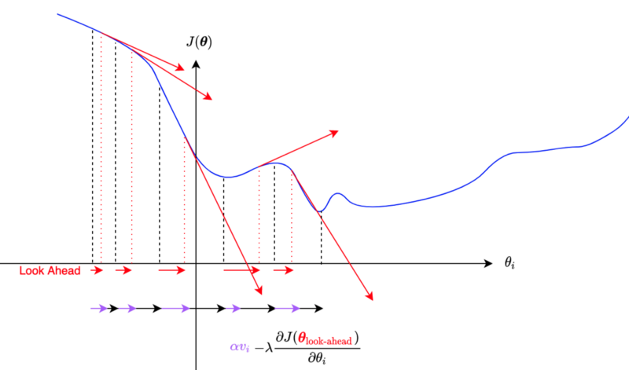
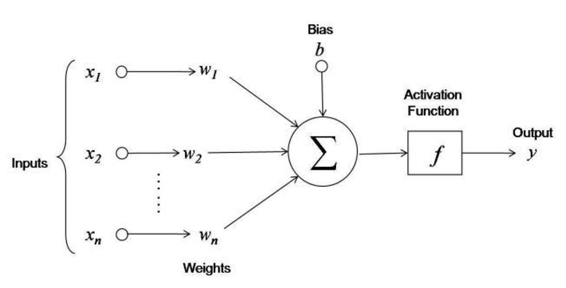

3.1. Fundamentals#
3.1.1. Overview of DeepLearning#
1. DL good for ?
Problem with long list of rules/features
Continually changing model/prediction
Discovering insights within large collection of data
2. DL not good for ?
Need explainability model
traditional model is the good option
when errors are not unacceptable
when you don’t have much data
3. ML vs DL
ML thường phục vụ structured data và có perform tốt hơn so với DL với dữ liệu này, còn DL performs better on unstructured data such as images, voice, text,…
Các thuật toán:
ML: RF, naive bayes, nn, svm,…
DL: NN, CNN, RNN
4. DL use case
Nguồn tìm kiếm các paper + code của các model SOTA theo từng task tại papers with code
Recommendation
Sequence to sequency:
Translation
Speed recognition
Classification/ Regression:
Computer vision
NLP
3.1.1.1. Những lỗi khi huấn luyện mạng#
3.1.1.1.1. Không hiểu cách hoạt động#
Mặc dù các thư viện cung cấp các API giúp việc xây dựng và train model trở nên thuận tiện, nhưng nếu chúng ta ko hiểu cách hoạt động của chúng ( ví dụ : không biết sự khác biệt giữa SGD và Adam ) thì rất khó có cơ sở để lựa chọn phương pháp sao cho phù hợp với vấn đề cần giải quyết, từ đó tiến đến sự ổn định và hiệu quả của model.
Tóm gọn lại, trước khi sử dụng bất kỳ một thứ gì trong quá trình train, mặc dù ta sử dụng API nên rất dễ dàng trong việc áp dụng nhưng phải hiểu được bản chất của phương pháp, ưu và nhược điểm hay các TH sử dụng của nó.
3.1.1.1.2. Train không đúng logic#
Mặc dù trong quá trình train đến kết quả không gặp lỗi hay biến số bất thường nào, nhưng vẫn có thể sai về mặt logic trong quá trình biến đổi dữ liệu.
Ví dụ: Thay vì hạn chế tác động của gradient lớn thì lại làm giảm loss, nguyên nhân là do outlier bị loại bỏ
Từ đó dẫn tới việc, model train ko ra lỗi, nhưng càng train thì performance càng tệ đi.
3.1.1.2. Kinh nghiệm train NN#
Kinh nghiệm chung là với mỗi vấn đề cần phải thử, thí nghiệm cho tới khi đạt được hiệu quả hoặc hiểu rõ vấn đề, rồi mới giải quyết vấn đề tiếp theo thay vì 1 lần đem một đống thứ cần thử và không thể biết hướng đi nào cần cải tiến tiếp theo.
Kinh nghiệm modeling theo quá trình build model:
3.1.1.2.1. Hiểu rõ data#
Thay vì sử dụng ngay các dòng code xây dựng mạng NN thì việc đầu tiên nên làm đó là hiểu thật kỹ về data:
Hiểu sample: variance, distribution, tìm kiếm những pattern đại diện trong data
Sự imbalance data
Những sample outlier
Tính tương quan của dữ liệu
Thêm vào đó, cần tracking được lý do các dự đoán sai từ model, từ đó đưa ra được hướng cải thiện
3.1.1.2.2. Thiết lập 1 quy trình xây dựng và đánh giá model#
Ban đầu hãy xây dựng 1 baseline model từ bước tạo model, comppile, fitting, evaluate model thành 1 quy trình có khung sườn. Sử dụng các đánh giá và thí nghiệm thay đổi các hyperparameters để quan sát sự cải thiện của model dần dần. Các tips cho việc này bao gồm:
Tạo baseline model có thể là những model đơn giản nhất hoặc mạng nn đơn giản nhất
Sử dụng cố định random seed
Đơn giản hoá cho model ban đầu: loại bỏ data augmentation vì học tăng cường lại dữ liệu chỉ là 1 chiến lược regularization sau này, ở bước ban đầu nên hạn chế để tránh gặp các lỗi ko cần thiết. Ví dụ : xoay ảnh, lật ảnh chính là học tăng cường
Xây dựng các bộ đánh giá trên đầy đủ các khía cạnh để đảm bảo tính hiệu quả và chất lượng của model
Xác định đúng Loss function ngay từ thời điểm ban đầu và nhất quán sử dụng nó.
Khởi tạo tốt tham số cho layer output: xây dựng các ước lượng ban đầu tốt cho output sẽ giúp model nhanh chóng tìm được điểm tối ưu và tránh các điểm giả global minimum loss sẽ phải gặp tại các iter ban đầu trong quá trình train
Nếu trong bài toán regression, giá trị mean target là 50 thì có thể đặt giá trị bias là 50 để nhanh chóng tìm được điểm tối ưu cho bias
Nếu trong bài toán classification bị imbalance là good/bad = 9/1 thì có thể đặt giá trị cutoff probability ban đầu là tại điểm 0.9 để phù hợp với tỷ lệ good/bad ngoài thực tế.
Chú ý vào metrics thay vì loss: metrics (ví dụ như accuracy) là thứ mà có thể giải thích và có thể so sánh được giữa các model với nhau
Tạo một baseline model với dự đoán ngẫu nhiên so sánh với model học được dữ liệu xem xem model sau khi được train có học được gì từ dữ liệu hay không hay hiệu suất tương đương với random guess model
Thử overfit 1 batch với số lượng samples nhỏ ( ví dụ batch chỉ có 5 samples và overfit batch này) để lấy được giá trị minimumm loss, nếu minimum loss không tiệm cận được 0 thì có vẻ như có 1 bug ở đâu đó trong quá trình biến đổi dữ liệu (lỗi 2)
Đánh giá mức giảm của loss khi tăng độ phức tạp của model
Sử dụng dữ liệu ngay trước khi đưa vào mạng, decode ngược lại raw data để tracking tính đúng đắn của việc preprocessing và data augmentation
Quan sát sự thay đổi của prediction: visualize the test prediction trong suốt quá trình training để đảm bảo việc đi đúng hướng của model. Nếu hiệu suất của tập test ko cải thiện hoặc ổn định theo quá trình training thì có thể nên set một learning_rate thấp hơn để tăng sự ổn định.
3.1.1.2.3. Overfitting#

Ở bước này chúng ta đã hiểu về dữ liệu và có 1 pipeline train + đánh giá hoạt động được. Việc cần làm là tìm ra 1 model tốt bằng việc tìm 1 mô hình đủ lớn để overfit (loss tập train đủ thấp) rồi sau đó regularize cho phù hợp để cải thiện val_loss.
Lý do chọn hướng tiếp cận này là nếu loss_train ko đủ thấp tức là model có thể bị lỗi, có vấn đề hoặc misconfiguration nào đó.
Một số tips:
Chọn model: Để có 1 train_loss đủ thấp thì model cần có 1 architecture phù hợp với dữ liệu. Thay vì sáng tạo các kiến trúc cảm thấy sẽ hiệu quả thì hãy tìm các paper liên quan nhất và copy những kiến trúc đơn giản nhất của họ và phát triển nó.
Ví dụ nếu làm image classification, hãy copy kiến trúc mạng của ResNet-50 trước, sau đó có thể phát triển lên từ đó.
Adam là sự lựa chọn an toàn: với những baseline ban đầu, hãy ưu tiên với Adam(lr = 3e-4). Adam có thể dễ dàng bỏ qua những hyperparameter tệ (bao gồm cả learning_rate).
Với các mạng CNN, optimizer = SGD sẽ hiệu quả hơn 1 chút so với Adam, những giá trị lr tối ưu chỉ trong 1 range rất hẹp và tuỳ vào bài toán cụ thể
Với bài toán RNN, time-series thì ưu tiên Adam
Chỉ nên tunning (làm phức tạp) một yếu tố tại 1 thời điểm: hãy tunning từng parameter và đảm bảo performance được cải thiện trước khi sang hyperparameter tiếp theo
Đừng tin vào default decay-learning rate: Với mỗi bài toán và vấn đề cụ thể thì hệ số giảm của learning rate sẽ khác nhau, nếu ko cẩn thận sẽ đưa lr về 0 trong khi việc học vẫn chưa xong. Hãy sử dụng constant learning rate và tunning decay - learning rate sau cùng
3.1.1.2.4. Regularization#
Sau khi đã có một model đủ tốt trên tập train với train_loss đủ thấp thì chúng ta cần regularize để cải thiện độ chính xác của validation set ( đương nhiên là sẽ giảm hiệu xuất của train set), một số phương pháp giúp regularize:
Lấy thêm dữ liệu : Đây là cách tốt nhất và được khuyến khích nhất để regularize một mô hình trong bất cứ setting nào. Một sai lầm thường thấy là vắt kiệt việc học từ data train đã có mà ko bổ sung thêm dữ liệu sẵn có mới bên ngoài mà có thể thu thập được.
Sử dụng Emsemble model: nếu có thể thì tối đa nên sử dụng 5 model
Dữ liệu tăng cường (data augmentation): Nếu ko thể lấy thêm dữ liệu thì hãy sử dụng 1 số phương pháp biến đổi dữ liệu để học tăng cường
Dữ liệu tăng cường bằng việc làm giả hoàn toàn bằng các phương pháp: tạo thêm dữ liệu xung quanh dataraw, domain randomization, use of simulation, clever hybrids such as inserting (potentially simulated) data into scenes, or even GANs.
Pretrain model: Sử dụng các model đã được pretrain sẵn bằng nguồn dữ liệu lớn đã có
Hãy bám vào supervised learning: đừng nên quá lạm dụng các model unsupervised learning
Giảm input dimensionality : loại bỏ một số đặc trưng có thể giúp bỏ đi các tín hiệu giả (các tín hiệu ko hỗ trợ trong việc dự đoán output), những redunce feature được sử dụng sẽ làm model bị overfitting. Có thể sử dụng các phương pháp làm giảm chiều dữ liệu như PCA.
Thử một model nhỏ hơn (giảm số layers/nodes): sử dụng kiến thức về dữ liệu có thể làm một cách để ràng buộc sử dụng/ hoặc ko sử dụng một số node/hay layers nào đó thay vì sử dụng fully connected layers.
Giảm batch_size: Sử dụng normalize với smaller batch sẽ tâng mức độ regularization
Sử dụng phạt L1/L2: Sử dụng L2 phạt nặng hơn L1 khi W tăng mạnh
Dropout : Thêm Dropout, bổ sung xác xuất tắt node trong layer, tuy nhiên sử dụng một cách cẩn thận, hạn chế vì có vẻ Dropout không thích chơi chung với BatchNorm
Batch Normalization: normalize batch trước khi đưa vào training
Early stopping: Bổ sung điều kiện dừng sớm epochs khi validattion_loss có xu hướng overfit. Ưu tiên sử dụng Early stopping với large model so với full-epoch + smaller model
Decay weighted: Tăng mức weight decay cho các tham số học, tăng regularization
Hãy visualize first layer output để chắc chắn những khía cạnh nó học được là hợp lý
3.1.1.2.5. Tune model#
muốn tìm một kiến trúc đạt được validation loss tốt nhất. Một vài tip và trick cho bước này:
random grid search. Tune một lúc nhiều hyperparameter nghe có vẻ rất hấp dẫn bằng việc grid search nhằm bao quát hết tất cả các cách thiết lập, nhưng hãy nhớ trong đầu rằng cách tốt nhất là sử dụng random search (tham khảo tại đây). Một cách trực giác, bởi vì các mạng neuron thường nhạy cảm với một vài parameter hơn những cái khác. Trong giới hạn, nếu parameter a có nhiều tác động, nhưng thay đổi parameter b không có nhiều ảnh hưởng vậy bạn nên sample parameter a nhiều hơn thay vì cố định tại 1 điểm nhiều lần.
3.1.1.2.6. Tận dụng hết khả năng có thể#
Một khi bạn đã tìm ra kiến trúc tốt nhất và các hyperparameter, bạn vẫn có thể sử dụng thêm 1 vài trick để tận dụng nốt các phần còn lại của hệ thống:
Có một kĩ thuật gọi là Knowledge Distillation nhằm chuyển các tri thức học từ một mô hình lớn về một mô hình nhỏ hơn
Thử train model trong 1 thời gian dài, có thể sẽ đạt SOTA
3.1.1.3. Good practice#
3.1.1.3.1. Training a NN#
3.1.1.3.1.1. Definitions#
📚 Epoch: In the context of training a model, epoch is a term used to refer to one iteration where the model sees the whole training set to update its weights.
📚 Mini-batch gradient descent: During the training phase, updating weights is usually not based on the whole training set at once due to computation complexities or one data point due to noise issues. Instead, the update step is done on mini-batches, where the number of data points in a batch is a hyperparameter that we can tune.
📚 Loss function: In order to quantify how a given model performs, the loss function L is usually used to evaluate to what extent the actual outputs y are correctly predicted by the model outputs z
📚 Cross-entropy loss: In the context of binary classification in neural networks, the cross-entropy loss L(z,y) is commonly used and is defined as follows:

3.1.1.3.1.2. Finding optimal weights#
📚 Backpropagation: Backpropagation là method để update the weights trong neural network bằng việc sử dụng sai lệch giữa output được predict và thực tế. The derivative liên quan đến each weight
wsẽ được tính toán thông qua chain rule.

Qua đó, mỗi 1 weight sẽ được update theo công thức: $\(w \longleftarrow w-\alpha \frac{\partial L(z, y)}{\partial w}\)$

3.1.1.3.2. Parameter tuning#
3.1.1.3.2.1. Weights initialization#
📚 Xavier initialization: Thay vì lựa chọn các params/weights ban đầu 1 cách ngẫu nhiên thì khởi tạo chúng bằng những khảo sát ban đầu và có khả năng là điểm optimal gần đó.
📚 Transfer learning: Các weights/params ban đầu hay thậm trí là 1 phần kiến trúc mạng đã được thiết kế từ trước và train trên các bộ dữ liệu lớn, đạt performance cao nên chỉ cần tận dụng lại.
Tips: Dữ liệu có size càng lớn thì unfreeze càng nhiều top layer của pretrain model sau khi đã train qua 1 vài epochs với feature extraction model.
3.1.1.3.2.2. Optimizing convergence by learning rate#
Fixed Learning rate
Schedule reduce learning rate
Adaptive learning rate
Momentum
RMSprop
Adam
3.1.1.3.3. Regularization#
3.1.1.3.4. Overfitting small batch#
Khi debugging model, thường sử dụng quick test để kiểm tra các vấn đề liên quan đến kiến trúc mạng, tham số hay những tinh chỉnh đã đúng hay chưa ? Khi đó, cần sử dụng mini-datatrain và fit cho tới khi overfit trên small batch đó. Nếu không thể overfitting trên tập nhỏ thì khả năng mô hình chưa đủ tốt hoặc sai cấu trúc
3.1.1.3.5. Gradient checking#
Kiểm tra gradien là một phương thức được sử dụng trong quá trình thực hiện lan truyền ngược của mạng neural. Nó so sánh giá trị của gradien phân tích (analytical gradient) với gradien số (numerical gradient) tại các điểm đã cho và đóng vai trò kiểm tra độ chính xác của hàm đạo hàm xây dựng
3.1.2. Gradient descent optimization#
3.1.2.1. Gradient descent#
1. Gradient
là 1 vector chứa đạo hàm thành phần của hàm f(x1,x2,..,xn), nhiều gradient tạo thành 1 matrix jacobian
2. Gradient descent

Trong tối ưu, gradient là 1 hyperplane tiếp tuyến của f(x) tại điểm x = t, tương ứng với \(W_t\), khi đó hệ số được update theo công thức: $\(W_{t+1} = W_t - lr * gradient\)$
Thuật toán sẽ stop khi \(|W_{t+1} - W_t| <= \epsilon \)
gradient = \(\frac{\partial L}{\partial w}\) = với hệ số góc của hyperplane = đạo hàm bậc 1 của f(x) tại x=t
Learning rate (lr) sẽ tác động tới khả năng học nhanh/chậm bằng việc điều chỉnh gradient
Nếu nhiều data có thể set lr nhỏ, và ngược lại
Có thể để lr =
constanthoặc lr giảm dần theo quá trình train (\(\frac{lr}{\sqrt{t+1}}\))
3.1.2.2. Các loại gradient descent (GD)#
Các loại GD theo số lượng obs cho mỗi epoch train
1. Vanilla GD/ Batch GD
Update 1 lần trên toàn bộ dataset
Pros : đảm bảo hội tụ được tới GLOBAL minimum cho convex loss hoặc non-convex loss
Cons :
thuật toán chạy sẽ chậm với dữ liệu lớn,
ko đủ memory để load hết dữ liệu
không có khả năng update real-time
2. Stochastic gradient descent (SGD)
Update weight theo từng quan sát lần lượt trên dataset
Pros :
Không gặp vấn đề về khả năng load, tính toán nhanh
Có tính train real-time, học online
Cons :
Do học theo từng obs nên có variance cao
hướng di chuyển của hàm Loss không ổn định
Khả năng hội tụ lâu do học không ổn định hoặc đi sai hướng để tìm điểm loss tối ưu
2. Mini-batch gradient descent
Chia data thành nhiều mini batch gồm n obs và lần lượt học theo từng mini-batch. Dữ liệu được lấy random cho từng batch.
Pros :
Giảm variance của parameter update, more stable convergence
Có thể sử dụng các thuật toán tối ưu hoá matrix theo từng batch để tăng tính hiệu quả. Ví dụ như batch normalization
Cons :
Lựa chọn lr: Nếu quá nhỏ sẽ học chậm, nếu quá lớn thì loss sẽ giao động quanh điểm hội tụ hoặc thậm trí đi qua điểm tối ưu
Chưa giải quyết được vấn đề saddle point
3.1.2.3. Các phương pháp optimize GD#
3.1.2.3.1. Newton#
Là phương pháp tìm nghiệm điểm tối ưu (thay vì GD) bằng hessian matrix và inverse matrix
Không có tính ứng dụng trong thực tiễn cho dữ liệu nhiều chiều hoặc do sự phúc tạp trong tính toán
3.1.2.3.2. Learning rate changes#
1. Decay lr
Learning rate giảm qua mỗi epoch, tuy nhiên ko control được yếu tố còn lại là gradient $\(lr_{new} = \frac{lr_{old}}{1 + \text{decay rate} * \text{num rate}}\)$
2. Scheduled drop lr
Lr drop sau 1 chu kỳ nhất định
3. Adaptive lr
Lr thay đổi dựa vào value của hàm Loss
4. Cycling lr
Lr thay đổi trong 1 cycle và lặp lại sự thay đổi đó trong cycle tiếp theo.
3.1.2.3.3. Momentum#
Điều chỉnh gradient bằng hướng di chuyển trước đó (bổ sung momentum vào update weight). Quy trình:
Set vận tốc ban đầu \(v_0\) = 0
Với mỗi 1 epoch thứ t:
gradient : \(\nabla w_{t-1}\)
Vận tốc mới: \(v_{t}=\gamma v_{t-1} + \eta \nabla w_{t-1}\)
Update weight: \(W_t = W_{t-1} - v_t\)
Lựa chọn \(\gamma\):
Nếu \(\gamma\) càng lớn thì update càng có hướng smooth do tỷ trọng hướng di chuyển trước đó càng cao, đồng nghĩa với tỷ trọng việc học mới càng thấp.
Nên lựa chọn \(\gamma\) in [0.8, 0.99]
\(\gamma\) cang cao thì càng làm giảm khả năng hội tụ và có thể vượt qua local minimum hiện tại.

Momentum giúp giảm giao động, nhanh đưa loss về điểm local minimum. Mặt khác, sử dụng vận tốc để update weight nên việc học sẽ không dừng lại ngay cả khi có gradient = 0. Từ đó có khả năng vượt qua local minimum để khám phá các điểm loss mới.

Sử dụng momentum có 1 nhược điểm là khi gần tới điểm hội tụ thì mất nhiều thời gian để dưng lại vì lúc nào cũng có đà di chuyển trước đó
3.1.2.3.4. Nestorov accelerated gradient (NAG)#
NAG giải quyết vấn đề lâu hội tụ tại gần điểm optimize do vấn đề momentum gây ra, bằng việc sử dụng gradient của bước tiếp theo mà ko tính momentum (thay vì gradient của bước hiện tại như momentum)

Khi GD ko sử dụng momentum thì “gradient tại điểm xấp xỉ tiếp theo” chính là lượng thay đổi tại điểm mới nhưng ko có momentum
Vận tốc mới: \(v_{t}=\gamma v_{t-1} + \eta \nabla (w_{t-1} - \gamma v_{t-1})\)
Update weight: \(W_t = W_{t-1} - v_t\)
3.1.2.3.5. Adagrad#
Điều chỉnh lr bưởi tổng gradient^2 trước đó, do tổng gradient^2 càng ngày càng tăng nên Lr sẽ càng giảm theo thời gian, dẫn tới tác động của gradient hiện tại càng ít, có thể bị mất gradient

3.1.2.3.6. RMSprop#
RMSprop thay đổi hệ số của gradient, khắc phục được nhược điểm của AdaGrad là càng học càng chậm
Trung bình có trọng số của bình phương các gradient trong quá khứ \(G_t\) có trọng số \(\gamma\): \({\bf G}_{t} = \gamma{\bf G}_{t-1}+({1-\gamma}){\bf g}_{t}^{2}\)
update weight : \({\bf w}_{t} = {\bf w}_{t-1}-\frac{\eta}{\sqrt{{\bf G}_{t}+\epsilon}}g_t\)
Thuật toán RMSProp rất giống với Adagrad ở chỗ cả hai đều sử dụng bình phương của gradient để thay đổi tỉ lệ hệ số.
RMSProp có điểm chung với phương pháp động lượng là chúng đều sử dụng trung bình rò rỉ. Tuy nhiên, RMSProp sử dụng kỹ thuật này để điều chỉnh tiền điều kiện theo hệ số.
Trong thực tế, tốc độ học cần được định thời bởi người lập trình.
Hệ số 𝛾 xác định độ dài thông tin quá khứ được sử dụng khi điều chỉnh tỉ lệ theo từng tọa độ.
3.1.2.3.7. Ada-delta#
Adadelta tương tự như RMSprop, tức là điều chỉnh điều chỉnh mức độ cập nhật gradient vào trọng số thông qua \({\bf G}_{t}\) và \({\bf S}_{t}\), không cần thông qua learning_rate. Cụ thể quy trình tính:
Tính trung bình có trọng số của bình phương các gradient trong quá khứ: $\({\bf G}_{t} = \gamma{\bf G}_{t-1}+({1-\gamma}){\bf g}_{t}^{2}\)$
Update weight: $\({\bf w}_{t} = {\bf w}_{t-1}-\sqrt{\frac{{\bf S}_{t-1}+\epsilon}{{\bf G}_{t}+\epsilon}}g_t\)$
Tính trung bình có trọng số của các weight trong quá khứ: $\({\bf S}_{t} = \gamma{\bf S}_{t-1}+({1-\gamma}) w_t\)$
Tóm lại:
Adadelta không sử dụng tham số tốc độ học. Thay vào đó, nó sử dụng tốc độ thay đổi của chính bản thân các tham số để điều chỉnh tốc độ học.
Adadelta cần sử dụng hai biến trạng thái để lưu trữ các mô-men bậc hai của gradient và của lượng thay đổi trong các tham số.
Adadelta sử dụng trung bình rò rỉ để lưu ước lượng động của các giá trị thống kê cần thiết.
3.1.2.3.8. Adam#
Adam kết hợp sự thay đổi momentum dựa theo gradient bậc 1 và bậc 2 :
tính trung bình có trong số momentum và có hiệu chỉnh: $\( \hat{m}_t = \frac{\beta_1 m_{t-1} + (1- \beta_1) g_t}{1-\beta_1^t} \)$
tính trung bình có trong số momentum bậc 2 và có hiệu chỉnh: $\( \hat{v}_t = \frac{\beta_2 v_{t-1} + (1- \beta_2) g_t^2}{1-\beta_2^t} \)$
update weight t+1: $\(w_{t+1} = w_{t} - \frac{\eta}{\sqrt{\hat{v}_t } +\epsilon} \hat{m}_t\)$
default: \(\beta_1 = 0.9\) , \(beta_2 = 0.999\) , \(\epsilon = 10^{-8}\)
Tóm lại:
Adam kết hợp các kỹ thuật của nhiều thuật toán tối ưu thành một quy tắc cập nhật khá mạnh mẽ.
Dựa trên RMSProp, Adam cũng sử dụng trung bình động trọng số mũ cho gradient ngẫu nhiên theo minibatch.
Adam sử dụng phép hiệu chỉnh độ chệch (bias correction) để điều chỉnh cho trường hợp khởi động chậm khi ước lượng động lượng và mô-men bậc hai.
Đối với gradient có phương sai đáng kể, chúng ta có thể gặp phải những vấn đề liên quan tới hội tụ. Những vấn đề này có thể được khắc phục bằng cách sử dụng các minibatch có kích thước lớn hơn
3.1.2.3.9. NaAdam#
Tương tự như Adam nhưng NaAdam sử dụng NAG momentum thay cho vanilla momentum component (như của Adam). Nhắc lại là NAG giúp hội tụ tại khu vực minimal nhanh hơn so với vanilla momentum:
tính trung bình có trong số momentum và có hiệu chỉnh: $\( \hat{m}_t = \frac{\beta_1 m_{t-1} + (1- \beta_1) g_t}{1-\beta_1^t} \)$
tính trung bình có trong số momentum bậc 2 và có hiệu chỉnh: $\( \hat{v}_t = \frac{\beta_2 v_{t-1} + (1- \beta_2) g_t^2}{1-\beta_2^t} \)$
update weight t+1: $\(w_{t+1} = w_{t} - \frac{\eta}{\sqrt{\hat{v}_t } +\epsilon} (\beta_1 \hat{m}_t + (1- \beta_1) g_t)\)$
default: \(\beta_1 = 0.9\) , \(beta_2 = 0.999\) , \(\epsilon = 10^{-8}\)
3.1.2.4. Loss Function#
Loss thể hiện sự khác biệt / error giữa predictive (với regression là giá trị dự đoán, classification là xác suất) và real value
1. Classification
Log Loss/ Cross entropy Loss: có thể bị loss thay đổi lớn khi gặp các extremely value x, dữ liệu cần phải ở trạng thái balance
Focal loss: phù hợp trong TH dữ liệu imbalance
KL Divergence: xác định tính tương đồng của phân phối của predict và actual
Exponential loss: thường sử dụng khi muốn kết hợp nhiều model độc lập đã có hàm loss riêng, tạo thành 1 hàm loss tổng hợp
Hinge loss: tìm đường phân loại (hyperplane) để chia các nhóm ( tính distance từ hyperplane tới các nhóm)
2. Regression
Root mean squared error
Mean absolute error
Huber loss
Log cosh loss
Quantile loss
3.1.2.4.1. Cross Entropy Loss#
Trong đó:
x là 1 class trong tập class C
p(x) là xác suất thực của class x
q(x) là xác suất dự đoán của class x
Nếu p(x) == q(x) thì CE = 0, ngược lại nếu p(x) khác xa q(x) thì CE loss sẽ rất lớn
Một số biến thể:
Categorical Cross Entropy
Binary Cross Entropy
3.1.2.4.2. Focal loss#
Trong đó:
x là 1 class trong tập class C
\(p_x\) là xác suất dự đoán của class x
\(\alpha_x\) là the balancing parameter for the true class, nếu \(\alpha_x\) gần 1 thì more loss cho y = 1 tức focal_loss(FN) > focal_loss(FP)
\(\gamma\) thể hiện mức độ chênh lệch giữa từng class
\(\gamma = 0\): thì FL = Binary CE
\(\gamma\) >> 0: thì càng tăng loss cho class có balance thấp
So sánh với Cross Entropy, Focal tác động thêm trọng số với mục tiêu tăng tỷ trọng class có tỷ lệ thấp và giảm tỷ trọng class có tỷ lệ cao. Ứng dụng vào các bài toán object classification hoặc bài toán có class bị imbalance, khi đó với focal loss sẽ tập trung học những class khó dự đoán, ít update weight bởi các class dễ dự đoán
3.1.3. Get started with TF#
# check system
import sys
import tensorflow as tf
import platform
print(f"Python Platform: {platform.platform()}")
print(f"Python {sys.version}")
print(f"TensorFlow Version: {tf.__version__}")
print(f"Keras Version: {tf.keras.__version__}")
gpu = len(tf.config.list_physical_devices('GPU'))>0
print("GPU is", "available" if gpu else "NOT AVAILABLE")
Python Platform: macOS-13.1-arm64-arm-64bit
Python 3.10.9 (main, Jan 11 2023, 09:18:18) [Clang 14.0.6 ]
TensorFlow Version: 2.12.0
Keras Version: 2.12.0
GPU is available
3.1.4. Tensor#
Tensor tương tự như numpy array (array n chiều) nhưng cho phép sử dụng GPU/TPU để tính toán, từ đó tăng tốc độ tính toán và khả năng hội tụ của mạng.
Tensor đóng vai trò là input và output của mạng NN, trong các class tf.data hoặc tf.io sẽ tự động convert data sang tensor, mặc định dtype là int32 hoặc float32.
Một tensor có thể có số lượng dimensions không giới hạn.
Ví dụ, biến đổi một series of images thành tensors with shape (224, 224, 3, 32), trong đó:
224, 224 (the first 2 dimensions) là kích thước ảnh in pixels.
3 là số kênh màu của ảnh (red, green blue).
32 là the batch size (the number of images a neural network sees at any one time).
Có những loại tensors sau:
scalar: a single number.
vector: a number with direction (e.g. tốc đọ gió kèm hướng gió).
matrix: ma trận số 2 chiều.
tensor: một n-dimensional array of numbers (trong đó n có thể là bất kỳ số nào, a 0-dimension tensor is a scalar, a 1-dimension tensor is a vector).

For more on the mathematical difference between scalars, vectors and matrices see the visual algebra post by Math is Fun.
3.1.4.1. create tensor#
3.1.4.1.1. create tensor with tf.constant#
# scalar , rank = 0
scalar = tf.constant(10)
scalar
Metal device set to: Apple M1 Pro
<tf.Tensor: shape=(), dtype=int32, numpy=10>
# check number of dimensions
scalar.ndim
0
# Create a vector (1 dimensions)
vector = tf.constant([10, 10])
print(vector.ndim)
vector
1
<tf.Tensor: shape=(2,), dtype=int32, numpy=array([10, 10], dtype=int32)>
# Create matrix and define the datatype (default int32, float32)
matrix = tf.constant([[10., 7.],
[3., 2.],
[8., 9.]], dtype=tf.float16) # specify the datatype with 'dtype'
matrix
<tf.Tensor: shape=(3, 2), dtype=float16, numpy=
array([[10., 7.],
[ 3., 2.],
[ 8., 9.]], dtype=float16)>
# Create tensor (more than 2 dimensions, although, all of the above items are also technically tensors)
tensor = tf.constant([[[1, 2, 3],
[4, 5, 6]],
[[7, 8, 9],
[10, 11, 12]],
[[13, 14, 15],
[16, 17, 18]],
[[13, 14, 15],
[16, 17, 18]]])
tensor
<tf.Tensor: shape=(4, 2, 3), dtype=int32, numpy=
array([[[ 1, 2, 3],
[ 4, 5, 6]],
[[ 7, 8, 9],
[10, 11, 12]],
[[13, 14, 15],
[16, 17, 18]],
[[13, 14, 15],
[16, 17, 18]]], dtype=int32)>
3.1.4.1.2. create tensors with tf.Variable()#
tensor được tạo bởi
tf.constant()là dạng ko thể thay đổi được, thường dùng trong việc tạo mới tensortensor được tạo bởi
tf.Variable()có thể thay đổi được
Which one should you use?
tf.constant()ortf.Variable()?
It will depend on what your problem requires. However, most of the time, TensorFlow will automatically choose for you (when loading data or modelling data).
# Create the same tensor with tf.Variable() and tf.constant()
changeable_tensor = tf.Variable([10, 7])
unchangeable_tensor = tf.constant([10, 7])
changeable_tensor, unchangeable_tensor
(<tf.Variable 'Variable:0' shape=(2,) dtype=int32, numpy=array([10, 7], dtype=int32)>,
<tf.Tensor: shape=(2,), dtype=int32, numpy=array([10, 7], dtype=int32)>)
# change in tf.Variable()
changeable_tensor[0].assign(7)
changeable_tensor
<tf.Variable 'Variable:0' shape=(2,) dtype=int32, numpy=array([7, 7], dtype=int32)>
3.1.4.1.3. create random tensor#
Trong quá trình khởi tạo mạng NN, các weight sẽ được tạo ra random (random tensor) trước khi tiến tới các weight tối ưu trong quá trình học
random_1 = tf.random.Generator.from_seed(42) # set the seed for reproducibility
random_1 = random_1.normal(shape=(3, 2)) # create tensor from a normal distribution
random_1
<tf.Tensor: shape=(3, 2), dtype=float32, numpy=
array([[-0.75658023, -0.06854693],
[ 0.07595028, -1.2573844 ],
[-0.23193759, -1.8107857 ]], dtype=float32)>
3.1.4.1.4. zero/one tensor#
# Make a tensor of all ones
tf.ones(shape=(3, 2))
<tf.Tensor: shape=(3, 2), dtype=float32, numpy=
array([[1., 1.],
[1., 1.],
[1., 1.]], dtype=float32)>
# Make a tensor of all zeros
tf.zeros(shape=(3, 2))
<tf.Tensor: shape=(3, 2), dtype=float32, numpy=
array([[0., 0.],
[0., 0.],
[0., 0.]], dtype=float32)>
3.1.4.1.5. tensor from numpy array#
import numpy as np
numpy_A = np.arange(1, 25, dtype=np.int32) # create a NumPy array between 1 and 25
A = tf.constant(numpy_A,
shape=[2, 4, 3]) # note: the shape total (2*4*3) has to match the number of elements in the array
numpy_A, A
(array([ 1, 2, 3, 4, 5, 6, 7, 8, 9, 10, 11, 12, 13, 14, 15, 16, 17,
18, 19, 20, 21, 22, 23, 24], dtype=int32),
<tf.Tensor: shape=(2, 4, 3), dtype=int32, numpy=
array([[[ 1, 2, 3],
[ 4, 5, 6],
[ 7, 8, 9],
[10, 11, 12]],
[[13, 14, 15],
[16, 17, 18],
[19, 20, 21],
[22, 23, 24]]], dtype=int32)>)
3.1.4.1.6. convert to numpy array#
np.array(A)
# or
A.numpy()
array([[[ 1, 2, 3],
[ 4, 5, 6],
[ 7, 8, 9],
[10, 11, 12]],
[[13, 14, 15],
[16, 17, 18],
[19, 20, 21],
[22, 23, 24]]], dtype=int32)
3.1.4.2. tensor function#
3.1.4.2.1. info: ndim, rank, size, shape#
Shape: The length (number of elements) of each of the dimensions of a tensor.
Rank: The number of tensor dimensions. A scalar has rank 0, a vector has rank 1, a matrix is rank 2, a tensor has rank n.
Axis or Dimension: A particular dimension of a tensor.
Size: The total number of items in the tensor.
tensor
<tf.Tensor: shape=(4, 2, 3), dtype=int32, numpy=
array([[[ 1, 2, 3],
[ 4, 5, 6]],
[[ 7, 8, 9],
[10, 11, 12]],
[[13, 14, 15],
[16, 17, 18]],
[[13, 14, 15],
[16, 17, 18]]], dtype=int32)>
tensor.dtype
tf.int32
# number of dimension
tensor.ndim
3
# shape
tensor.shape
TensorShape([4, 2, 3])
# size: tổng số element trong tensor
tf.size(tensor).numpy()
24
3.1.4.2.2. indexing#
# indexing tensor
tensor2 = tensor[:2,:1,:2]
tensor2
<tf.Tensor: shape=(2, 1, 2), dtype=int32, numpy=
array([[[1, 2]],
[[7, 8]]], dtype=int32)>
3.1.4.2.3. shuffle#
shuffle giúp hạn chế việc model chỉ học 1 số class nhất định được order theo thứ tự
tf.random.shuffle(tensor)
<tf.Tensor: shape=(4, 2, 3), dtype=int32, numpy=
array([[[ 1, 2, 3],
[ 4, 5, 6]],
[[13, 14, 15],
[16, 17, 18]],
[[ 7, 8, 9],
[10, 11, 12]],
[[13, 14, 15],
[16, 17, 18]]], dtype=int32)>
3.1.4.2.4. expand dim#
tensor3 = tensor2[0][0]
tensor3
<tf.Tensor: shape=(2,), dtype=int32, numpy=array([1, 2], dtype=int32)>
tf.expand_dims(tensor3, axis=-1) # "-1" means last axis
<tf.Tensor: shape=(2, 1), dtype=int32, numpy=
array([[1],
[2]], dtype=int32)>
tf.expand_dims(tensor3, axis=0) # "-1" means last axis
<tf.Tensor: shape=(1, 2), dtype=int32, numpy=array([[1, 2]], dtype=int32)>
# Insert another dimension
print('\n\n1\n',tensor3[:, tf.newaxis])
print('\n\n2\n',tensor3[:, tf.newaxis])
1
tf.Tensor(
[[1]
[2]], shape=(2, 1), dtype=int32)
2
tf.Tensor(
[[1]
[2]], shape=(2, 1), dtype=int32)
3.1.4.2.5. set global random seed#
sửu dụng global level random seed sẽ fix seed cố định cho mọi hàm có sử dụng tới yếu tố random và không được set operation level random seed
tf.random.set_seed(21) # global random seed
tf.random.shuffle(tensor2,seed = None) # operation level random seed
<tf.Tensor: shape=(2, 1, 2), dtype=int32, numpy=
array([[[1, 2]],
[[7, 8]]], dtype=int32)>
3.1.4.2.6. reshape#
# Create (3, 2) tensor
X = tf.constant([[1, 2],
[3, 4],
[5, 6]])
tf.reshape(X, shape=(2, 3))
<tf.Tensor: shape=(2, 3), dtype=int32, numpy=
array([[1, 2, 3],
[4, 5, 6]], dtype=int32)>
3.1.4.2.7. transpose#
tf.transpose(X)
<tf.Tensor: shape=(2, 3), dtype=int32, numpy=
array([[1, 3, 5],
[2, 4, 6]], dtype=int32)>
3.1.4.3. tensor operations#
3.1.4.3.1. Change datatype#
change datatype make model run faster and use less memory
tf.cast(tensor, dtype=tf.float16)
<tf.Tensor: shape=(2, 2), dtype=float16, numpy=
array([[1., 2.],
[3., 4.]], dtype=float16)>
3.1.4.3.2. Basic operation#
tensor = tf.constant([[1,2],[3,4]])
tensor
<tf.Tensor: shape=(2, 2), dtype=int32, numpy=
array([[1, 2],
[3, 4]], dtype=int32)>
# add value
tensor + 10
<tf.Tensor: shape=(2, 2), dtype=int32, numpy=
array([[11, 12],
[13, 14]], dtype=int32)>
# Subtraction
tensor - 10
<tf.Tensor: shape=(2, 2), dtype=int32, numpy=
array([[-9, -8],
[-7, -6]], dtype=int32)>
# Multiplication
tensor * 2
# or
tf.multiply(tensor, 2) # prefer using
<tf.Tensor: shape=(2, 2), dtype=int32, numpy=
array([[2, 4],
[6, 8]], dtype=int32)>
tensor * tensor
<tf.Tensor: shape=(2, 2), dtype=int32, numpy=
array([[ 1, 4],
[ 9, 16]], dtype=int32)>
3.1.4.3.3. Dot product / multiplication#
3.1.4.3.3.1. tf.matmul#
# Create (3, 2) tensor
X = tf.constant([[1, 2],
[3, 4],
[5, 6]])
# Create another (3, 2) tensor
Y = tf.constant([[7, 8],
[9, 10],
[11, 12]])
X, Y
(<tf.Tensor: shape=(3, 2), dtype=int32, numpy=
array([[1, 2],
[3, 4],
[5, 6]], dtype=int32)>,
<tf.Tensor: shape=(3, 2), dtype=int32, numpy=
array([[ 7, 8],
[ 9, 10],
[11, 12]], dtype=int32)>)
tf.matmul(X, tf.transpose(Y))
<tf.Tensor: shape=(3, 3), dtype=int32, numpy=
array([[ 23, 29, 35],
[ 53, 67, 81],
[ 83, 105, 127]], dtype=int32)>
# or
X @ tf.transpose(Y)
<tf.Tensor: shape=(3, 3), dtype=int32, numpy=
array([[ 23, 29, 35],
[ 53, 67, 81],
[ 83, 105, 127]], dtype=int32)>
# or
# You can achieve the same result with parameters
tf.matmul(a=X, b=Y, transpose_a=False, transpose_b=True)
<tf.Tensor: shape=(3, 3), dtype=int32, numpy=
array([[ 23, 29, 35],
[ 53, 67, 81],
[ 83, 105, 127]], dtype=int32)>
3.1.4.3.3.2. tf.tensordot#
Sử dụng khi muốn customize nhân matrix cho tensor (any dimention), do đó sẽ tốn kém chi phí hơn
Z = tf.random.uniform(shape=(3, 2, 2), minval=0, maxval=10 ,dtype = tf.int32)
Z
<tf.Tensor: shape=(3, 2, 2), dtype=int32, numpy=
array([[[9, 0],
[3, 6]],
[[4, 3],
[3, 8]],
[[0, 5],
[3, 4]]], dtype=int32)>
tf.transpose(X)
<tf.Tensor: shape=(2, 3), dtype=int32, numpy=
array([[1, 3, 5],
[2, 4, 6]], dtype=int32)>
tf.matmul(Z[0], tf.transpose(X))
<tf.Tensor: shape=(2, 3), dtype=int32, numpy=
array([[ 9, 27, 45],
[15, 33, 51]], dtype=int32)>
tf.tensordot(Z, tf.transpose(X), axes = 1)
<tf.Tensor: shape=(3, 2, 3), dtype=int32, numpy=
array([[[ 9, 27, 45],
[15, 33, 51]],
[[10, 24, 38],
[19, 41, 63]],
[[10, 20, 30],
[11, 25, 39]]], dtype=int32)>
3.1.4.3.4. absolute#
# Create tensor with negative values
D = tf.constant([-7, -10])
tf.abs(D)
<tf.Tensor: shape=(2,), dtype=int32, numpy=array([ 7, 10], dtype=int32)>
3.1.4.3.5. aggregation#
max/min
sum
mean
std
variance
argmax/argmin
Z
<tf.Tensor: shape=(3, 2, 2), dtype=int32, numpy=
array([[[9, 0],
[3, 6]],
[[4, 3],
[3, 8]],
[[0, 5],
[3, 4]]], dtype=int32)>
# max (whole tensor)
tf.math.reduce_max(Z)
<tf.Tensor: shape=(), dtype=int32, numpy=9>
tf.math.reduce_max(Z, axis = 2)
<tf.Tensor: shape=(3, 2), dtype=int32, numpy=
array([[9, 6],
[4, 8],
[5, 4]], dtype=int32)>
tf.math.reduce_max(Z, axis = 0)
<tf.Tensor: shape=(2, 2), dtype=int32, numpy=
array([[9, 5],
[3, 8]], dtype=int32)>
# find the position of maximum value
arg_max_ind = tf.math.argmax(Z)
arg_max_ind
<tf.Tensor: shape=(2, 2), dtype=int64, numpy=
array([[0, 2],
[0, 1]])>
A = tf.random.uniform(shape = [10], minval = 0, maxval = 10)
tf.reduce_min(A)
<tf.Tensor: shape=(), dtype=float32, numpy=1.4280438>
3.1.4.3.6. map function#
map specific function to each element unstacked on axis 0
tf.map_fn(tf.math.reduce_max, Z)
<tf.Tensor: shape=(3,), dtype=int32, numpy=array([9, 8, 5], dtype=int32)>
tf.map_fn(fn=lambda t: tf.range(t, t + 3), elems=tf.constant([3, 5, 2]))
<tf.Tensor: shape=(3, 3), dtype=int32, numpy=
array([[3, 4, 5],
[5, 6, 7],
[2, 3, 4]], dtype=int32)>
3.1.4.3.7. squeezing#
removing all single dimensions, xoá những dimension có rank 1, ví dụ shape:
(1, 1, 1, 1, 50) –> (50,)
(2, 1, 1, 25) –> (2,50)
# Create a rank 5 (5 dimensions) tensor of 50 numbers between 0 and 100
G = tf.constant(np.random.randint(0, 100, 50), shape=(1, 1, 1, 1, 50))
G
<tf.Tensor: shape=(1, 1, 1, 1, 50), dtype=int64, numpy=
array([[[[[93, 58, 58, 19, 47, 50, 31, 33, 2, 70, 58, 26, 72, 39, 54,
76, 48, 83, 91, 65, 75, 58, 71, 48, 37, 59, 84, 55, 2, 3,
62, 70, 63, 92, 16, 72, 67, 2, 6, 50, 47, 84, 55, 51, 8,
48, 34, 67, 57, 45]]]]])>
tf.squeeze(G)
<tf.Tensor: shape=(50,), dtype=int64, numpy=
array([93, 58, 58, 19, 47, 50, 31, 33, 2, 70, 58, 26, 72, 39, 54, 76, 48,
83, 91, 65, 75, 58, 71, 48, 37, 59, 84, 55, 2, 3, 62, 70, 63, 92,
16, 72, 67, 2, 6, 50, 47, 84, 55, 51, 8, 48, 34, 67, 57, 45])>
H = tf.constant(np.random.randint(0, 100, 50), shape=(2, 1, 1, 25))
H
<tf.Tensor: shape=(2, 1, 1, 25), dtype=int64, numpy=
array([[[[17, 8, 57, 43, 32, 83, 83, 61, 22, 93, 61, 28, 63, 34, 71,
35, 66, 27, 10, 38, 35, 95, 76, 37, 1]]],
[[[51, 22, 20, 77, 48, 24, 76, 54, 8, 11, 86, 99, 50, 16, 32,
99, 72, 60, 44, 40, 49, 16, 10, 59, 3]]]])>
tf.squeeze(H)
<tf.Tensor: shape=(2, 25), dtype=int64, numpy=
array([[17, 8, 57, 43, 32, 83, 83, 61, 22, 93, 61, 28, 63, 34, 71, 35,
66, 27, 10, 38, 35, 95, 76, 37, 1],
[51, 22, 20, 77, 48, 24, 76, 54, 8, 11, 86, 99, 50, 16, 32, 99,
72, 60, 44, 40, 49, 16, 10, 59, 3]])>
3.1.4.3.8. one-hot encoding#
# Create a list of indices
some_list = [0, 1, 2, 3]
# One hot encode them, need to specify the depth parameter
tf.one_hot(some_list, depth=4)
<tf.Tensor: shape=(4, 4), dtype=float32, numpy=
array([[1., 0., 0., 0.],
[0., 1., 0., 0.],
[0., 0., 1., 0.],
[0., 0., 0., 1.]], dtype=float32)>
tf.one_hot(some_list, depth=3)
<tf.Tensor: shape=(4, 3), dtype=float32, numpy=
array([[1., 0., 0.],
[0., 1., 0.],
[0., 0., 1.],
[0., 0., 0.]], dtype=float32)>
3.1.4.3.9. square / square_root / log#
tf.square()- get the square of every value in a tensor.tf.sqrt()- get the squareroot of every value in a tensor (note: the elements need to be floats or this will error).tf.math.log()- get the natural log of every value in a tensor (elements need to floats).
X
<tf.Tensor: shape=(3, 2), dtype=int32, numpy=
array([[1, 2],
[3, 4],
[5, 6]], dtype=int32)>
# square
tf.square(X)
<tf.Tensor: shape=(3, 2), dtype=int32, numpy=
array([[ 1, 4],
[ 9, 16],
[25, 36]], dtype=int32)>
# square root
tf.sqrt(tf.cast(X, dtype = tf.float32))
<tf.Tensor: shape=(3, 2), dtype=float32, numpy=
array([[1. , 1.4142135],
[1.7320508, 2. ],
[2.236068 , 2.4494898]], dtype=float32)>
# log
tf.math.log(tf.cast(X, dtype = tf.float32))
<tf.Tensor: shape=(3, 2), dtype=float32, numpy=
array([[0. , 0.6931472],
[1.0986122, 1.3862944],
[1.6094378, 1.7917594]], dtype=float32)>
3.1.4.4. @tf.function#
sử dụng decorator @tf.function để callable TensorFlow graph, giúp function chạy nhanh hơn
%%time
@tf.function
def function(x, y):
return x ** 2 + y
x = tf.constant(np.arange(0, 1000))
y = tf.constant(np.arange(1000, 2000))
z = function(x, y)
WARNING:tensorflow:AutoGraph could not transform <function function at 0x29833beb0> and will run it as-is.
Cause: Unable to locate the source code of <function function at 0x29833beb0>. Note that functions defined in certain environments, like the interactive Python shell, do not expose their source code. If that is the case, you should define them in a .py source file. If you are certain the code is graph-compatible, wrap the call using @tf.autograph.experimental.do_not_convert. Original error: could not get source code
To silence this warning, decorate the function with @tf.autograph.experimental.do_not_convert
WARNING: AutoGraph could not transform <function function at 0x29833beb0> and will run it as-is.
Cause: Unable to locate the source code of <function function at 0x29833beb0>. Note that functions defined in certain environments, like the interactive Python shell, do not expose their source code. If that is the case, you should define them in a .py source file. If you are certain the code is graph-compatible, wrap the call using @tf.autograph.experimental.do_not_convert. Original error: could not get source code
To silence this warning, decorate the function with @tf.autograph.experimental.do_not_convert
CPU times: user 18.3 ms, sys: 4.4 ms, total: 22.8 ms
Wall time: 25 ms
3.1.5. Configs and tools#
3.1.5.1. Training vs Inference Mode#
3.1.5.2. Use mixed_precision#
Thông thường, tensors in TF sử dụng mặc định datatype là float32 (single-precision floating-point format) , tương đương với việc sử dụng bộ nhớ 32 bits, tuy nhiên vì GPU có lượng memory nhất định, cho nên cần lựa chọn định dạng phù hợp để tối ưu chi phí lưu trữ là tính toán. Mixed precision training sử dụng kết hợp single precision (float32) and half-preicison (float16) data types để tăng tốc dộ training model (up 3x on modern GPUs). Khi đó, dữ liệu được chuyển từ 32 –> 16 nếu có thể.
Need to set output layer về dạng
float32bởi more stable for calculate loss function (detail for build model with mixed precision)

Does it make the model train faster?
Not much, but it saved us some seconds.
Does it effect the accuracy or performance of our model?
By 1% not that much tho.
What’s the advatanges of using mixed_precision training?
The advantages of mixed precision is evident when we are training pretty big models for longer epochs. In that case, we can spot a huge difference in our training time.
# Set global policy to mixed precision
from tensorflow.keras import mixed_precision
mixed_precision.set_global_policy(policy="mixed_float16")
from tensorflow.keras import layers
# Create base model
input_shape = (224, 224, 3)
base_model = tf.keras.applications.EfficientNetB0(include_top=False)
base_model.trainable = False # freeze base model layers
# Create Functional model
inputs = layers.Input(shape=input_shape, name="input_layer")
# Note: EfficientNetBX models have rescaling built-in but if your model didn't you could have a layer like below
# x = layers.Rescaling(1./255)(x)
x = base_model(inputs, training=False) # set base_model to inference mode only
x = layers.GlobalAveragePooling2D(name="pooling_layer")(x)
x = layers.Dense(len(class_names))(x) # want one output neuron per class
# Separate activation of output layer so we can output float32 activations
outputs = layers.Activation("softmax", dtype=tf.float32, name="softmax_float32")(x)
model = tf.keras.Model(inputs, outputs)
# Compile the model
model.compile(loss="sparse_categorical_crossentropy", # Use sparse_categorical_crossentropy when labels are *not* one-hot
optimizer=tf.keras.optimizers.Adam(),
metrics=["accuracy"])
Check the dtype_policy
layer.name: Tên của layerlayer.trainable: các tham số của layer có được train/update hay ko ?layer.dtype: the datatype của các biến trong layerlayer.dtype_policy: the datatype của các tính toán trong layer
Note: A layer can have a dtype of
float32and a dtype policy of “mixed_float16” because it stores its variables (weights & biases) infloat32(more numerically stable), however it computes infloat16(faster).
# Check the dtype_policy attributes of layers in our model
for layer in model.layers:
print(layer.name, layer.trainable, layer.dtype, layer.dtype_policy) # Check the dtype policy of layers
3.1.5.3. TF Profiler#
Analyze tf.data performance with the TF Profiler
3.1.6. Types of layers#
3.1.6.1. Basic#
3.1.6.1.1. Dense#
3.1.6.1.2. Activation#

AF giúp biến đổi non-linear các hàm ban đầu để phù hợp với thực tế, do hàm trước AF chỉ là tổ hợp tuyến tính
AF giúp hạn chế tác động và kiểm soát những value lớn
Trong việc learn của model, cần tránh các TH:
Học bùng nổ: hàm loss rất lớn khi có nhiễu
triệt tiêu thông tin: gradient trở nên rất bé và gần như ko học được gì
Lựa chọn activate function
Thông thường SELU > ELU > leaky ReLU (và các biến thể) > ReLU > tanh > logistic.
Quan tâm tới runtime, prefer leaky ReLU.
PReLU if you have a huge training set
Bài toán hình ảnh: ưu tiên hàm ReLU
NLP: sigmoid, Tanh, Ramp
For regression problems(Only 1 neuron, multiple inputs, real-world outputs), a linear activation function must be used.
For multi-class classification problems, use Softmax at the output layer
For multi-label and binary classification problems, use the Sigmoid activation function.
Sigmoid and hyperbolic tangent activation functions must be never used in the hidden layers as they can lead to vanishing gradients.
For networks where unnecessary neurons need to turn OFF, use ReLU as the activation function because it also works as a dropout layer. In case there is confusion about which activation function, use ReLU.It is used in most CNN problems.
For deep neural networks having greater than 40 layers, use the swish activation function.
import numpy as np
import plotly.graph_objects as go
from tensorflow.keras import activations as af
def derivative_value(func , x, step=1e-10):
return (func(x+step) - func(x)) / step
def plot_output_and_deriv(func, name = "", range_x = np.linspace(-5,5, 50)):
fig = go.Figure()
fig.add_trace(go.Scatter(x=x, y=[func(x) for x in range_x], mode='lines', name=name))
if func is not None:
y_deri = [derivative_value(func ,i) for i in x]
fig.add_trace(go.Scatter(x=x, y=y_deri, mode='lines+markers', name='derivative of '+name))
return fig.show(renderer = 'jpeg')
3.1.6.1.2.1. Unit step#
Mô tả: Input là toàn bộ số thực, trả về 1 nếu dương, trả 0 nếu âm
Đạo hàm: = 0
Pros: Đơn giản + dễ áp dụng
Cons: Đạo hàm = 0 nên không có tác dụng trong việc cập nhật trọng số
Usage: Thường áp dụng cho output layer thay vì hidden layer và áp dụng trong các bài toán binary classification
unitstep = lambda z: int(z>0 or z ==0)
plot_output_and_deriv(unitstep, 'unitstep')

3.1.6.1.2.2. Linear#
Mô tả: Trả output là 1 hàm linear của input
Đạo hàm: = constant
Pros:
Range output rộng và không bị ràng buộc
Chi phí tính toán thấp
Không có hiện tượng biến mất gradient trong quá trình lan truyền ngược
Cons: Do đạo hàm cố định, tức giá trị update weight luôn cố định nên không phản ánh sự tương quan giữa X và y
Usage: Áp dụng cho các bài toán regression(univariate)
plot_output_and_deriv(af.linear, 'linear')

3.1.6.1.2.3. Softmax#
where \(z_i\) is the \(i\)-th element of the input vector, and \(k\) is the length of the vector
Mô tả: Chuẩn hoá các giá trị đầu vào về range (0,1) và có tổng bằng 1
Đạo hàm:
Pros:
Phù hợp multi-class classification do có sum = 1
Hàm liên tục và khả vi tại mọi vị trí, nên phù hơp với backpropagation
Cons:
Tốn chi phí tính toán
Chỉ dùng cho output layer
Usage:
Áp dụng cho output là multi-class classification
Chỉ áp dụng cho output layer
def softmax(x):
ex = np.exp(x)
sum_ex = np.sum( np.exp(x))
return ex/sum_ex
af.softmax
<function keras.activations.softmax(x, axis=-1)>
3.1.6.1.2.4. Sigmoid#
Mô tả: Nhận input số thực và trả ra value trong (0,1), số input càng lớn, output càng gần 1, input càng bé thì output càng gần 0
Đạo hàm: Thay đổi và luôn dương, lớn nhất tại x = 0 và bé nhất khi x càng lớn hoặc càng bé
Pros:
Weight luôn được cập nhật qua mỗi lần học
Hàm liên tục và khả vi tại mọi vị trí, nên phù hơp với backpropagation
Cons:
Tốn chi phí tính toán
Không có tính đối xứng qua số 0 nên học các negative value sẽ ít hơn so với positive value
vanishing gradient problem xuất hiện tại các điểm giá trị input quá lớn hoặc quá bé, khi đó derivative xấp xỉ 0
Usage:
Áp dụng cho output là xác suất hoặc bài toán binary classification
Nếu sử dụng cho multi-class classification thì tổng các xác suất sẽ khác 1, cần phải hiệu chỉnh lại bằng softmax
def sigmoid(z):
return 1 / (1 + np.exp(-z))
plot_output_and_deriv(af.sigmoid, 'sigmoid')

3.1.6.1.2.5. Hyperbolic Tangent (tanh)#
Mô tả:
Nhận input số thực và trả ra value trong (-1,1), số input càng lớn, output càng gần 1, input càng bé thì output càng gần -1
Giống sigmod nhưng range output = (-1,1)
Thường làm output tiến gần về/đến 0, tăng khả năng hội tụ
Đạo hàm: Thay đổi và luôn dương, lớn nhất tại x = 0 và bé nhất khi x càng lớn hoặc càng bé
Pros:
Weight luôn được cập nhật qua mỗi lần học
Hàm liên tục và khả vi tại mọi vị trí, nên phù hơp với backpropagation
Có tính đối xứng qua số 0 nên học các negative value ngang bằng positive value, do đó hội tụ nhanh hơn sigmoid
Cons:
Tốn chi phí tính toán
vanishing gradient problem xuất hiện tại các điểm giá trị input quá lớn hoặc quá bé, khi đó derivative xấp xỉ 0
Usage:
Thường áp dụng cho bài toán có nhiều output hoặc binary classification (sigmod thường áp dụng cho bài toán phân loại 2 output)
def tanh(z):
ez = np.exp(z)
enz = np.exp(-z)
return (ez - enz)/ (ez + enz)
plot_output_and_deriv(af.tanh, 'tanh')
3.1.6.1.2.6. ReLU#
Mô tả:
Trả ra input nếu dương, trả ra 0 nếu âm (tạo thành dead node)
Đạo hàm: = 1 cho các giá trị input dương, và = 0 cho các giá trị input âm
Pros:
Tính toán nhanh
Có tính chất non-linear
Đạo hàm không đổi tại các value của x nên khắc phục các giá trị input bất tường hoặc lớn
best activation function cho CNNs bởi vì hiệu quả cho việc extracting features hoặc for pattern recognition.
Có thể hoạt động như 1 dropout layer ví dụ như deactive node nếu input = 0
Cons:
Với x giá trị âm, gradient = 0, có khả năng kết thúc sớm khi học.
Không khả vi tại 0 nên các continuous output không phù hợp áp dụng
Usage:
Thường áp dụng cho bài toán CNN, Natural Language Processing, Pattern Recognition
Trong bài toán nhận diện hình ảnh:
Chạy qua các điểm highlight sẽ có update > 0
Chạy qua vùng background sẽ không có update
relu = lambda i: max(0,i)
plot_output_and_deriv(af.relu, 'relu')

3.1.6.1.2.7. Leaky ReLU#
where \(\alpha\) is a small constant typically set to 0.01.
Mô tả:
Trả ra x nếu x dương, trả ra số 0.01x nếu x âm (vẫn tạo ra derivative khi x âm)
Đạo hàm: = 1 cho các giá trị input dương, và = 0.01 cho các giá trị input âm
Pros:
Có ưu điểm của RelU
Khắc phục sự chết của ReLU khi x âm, thay vào đó derivative = 0.01, tăng độ chính xác so với ReLU
Cons:
Với x giá trị âm bất kỳ đều có derivative = 0.01, nên quá trình học diễn ra lâu với bất kể x âm như nào
Usage:
Thường áp dụng cho bài toán CNN, Natural Language Processing, Pattern Recognition
lrelu = lambda i: i if (i >=0) else 0.01*i
lrelu = lambda x: af.relu(x, alpha = 0.01)
plot_output_and_deriv(lrelu, 'leaky relu')

3.1.6.1.2.8. Parametric ReLU#
Mô tả:
Giống Leaky ReLU nhưng \(\alpha\) có thể set 1 giá trị bất kỳ
Đạo hàm: = 1 cho các giá trị input dương, và = \(\alpha\) cho các giá trị input âm
Pros:
Tăng độ chính xác và mức độ hội tụ nhanh hơn so với ReLU và Leaky ReLU
Cons:
Với x giá trị âm bất kỳ đều có derivative = \(\alpha\), nên quá trình học diễn ra lâu với bất kể x âm như nào
Cần check mức độ alpha phù hợp
Usage:
Thường áp dụng cho bài toán CNN, Natural Language Processing, Pattern Recognition
prelu = lambda x: af.relu(x, alpha = 0.5)
plot_output_and_deriv(lrelu, 'para relu')

3.1.6.1.2.9. Exponential Linear Unit (ELU)#
where \(\alpha\) is a hyperparameter that controls the slope of the function for negative inputs.
Mô tả:
Với giá trị input dương x, trả ra hàm linear, còn nếu x âm thì trả ra giá trị gần với mức \(-\alpha\), output range (-α,∞)
Đạo hàm: = 1 cho các giá trị input dương, và cho các giá trị input âm
Pros:
Tăng độ chính xác và mức độ hội tụ nhanh hơn so với ReLU và biến thể
Cons:
Cần tunning giá trị alpha
Chi phí tính toán lớn
Usage:
Thường áp dụng cho bài toán CNN, Natural Language Processing, Pattern Recognition
def ELU(z,α) :
return z if (z>0) else (α * (np.exp(z) - 1))
plot_output_and_deriv(af.elu, 'elu')
3.1.6.1.2.10. Scaled Exponential Linear Unit (SELU)#
Mô tả:
Đạo hàm: = 1 cho các giá trị input dương, và cho các giá trị input âm
Pros:
Không có hiện tượng biến mất gradient trong quá trình lan truyền ngược
Mạng nơ ron hội tụ nhanh hơn.
Đây là một hàm kích hoạt tự chuẩn hóa, nghĩa là giá trị trung bình trở thành 0 và phương sai thành 1.
Nó có thể được sử dụng trong các mạng thần kinh rất phức tạp.
Cons:
Chi phí tính toán lớn
Usage:
multi-class classification
plot_output_and_deriv(af.selu, 'selu')
3.1.6.1.2.11. Swish#
Mô tả:
Hàm trả output range (1/e,∞)
Với input dương, the output là 1 hàm linear của input. Với input âm, cho phép cập nhật 1 phần giá trị tại gần 0, với x quá âm thì ko cập nhật
Tuỳ thuộc vào \(\beta\):
\(\beta\) = 0: trở thành hàm linear
\(\beta\) = 1: trở thành hàm linear sigmoid
\(\beta\) = ∞: trở thành hàm ReLU
Đạo hàm: = 1 cho các giá trị input dương, và cho các giá trị input âm
Pros:
Tăng độ chính xác hơn ReLU
Có tính chất non-monotonic cho negative input
Là hàm liên tục và khả vi mọi điểm
Cons:
Chi phí tính toán lớn
Usage:
the same applications as ReLU
plot_output_and_deriv(af.swish, 'swish')

3.1.6.1.3. Input#
3.1.6.1.4. Flatten#
3.1.6.2. Pooling#
3.1.6.2.1. Max/Average Pooling#
Max-Pooling (
tf.keras.layers.MaxPool2D)

Max-Pooling thường được sử dụng trong CNN model, add phía sau các convolutional layer có tác dụng giảm chiều ảnh bằng cách giảm số pixels mỗi chiều của ảnh output từ convolutional layer trước, mà giữ lại được lượng lớn các features có ý nghĩa bằng việc lựa chọn ra giá trị lớn nhất trong cụm
Average-Pooling (
tf.keras.layers.AveragePooling2D)

Average-Pooling thường ít được sử dụng hơn so với Max-Pooling, trừ TH muốn thu gọn lại (thay vì muốn filter ra feature có ý nghĩa)
tf.keras.layers.MaxPool2D(
pool_size=(2, 2), # kích thước pool
strides=None, # bước nhảy
padding='valid', # có dùng padding outter = 0 hay ko ?
)
3.1.6.2.2. Global Max/Average Pooling#

Thường sử dụng để map the last convolutional layer vào trong mạng fully connected layers (tradicontional neural network). Global Average pooling layers giống như 1 Flatten layers in CNN, nhưng thay vì flatten full node (dễ overfitting nên cần dropout hoặc regularization) thì chúng lấy giá trị average/max của mỗi feature, và kết quả được fit trực tiếp vào softmax layer.
Một ưu điểm của Global Max/Average Pooling so với Flatten fully connected là chúng more native hơn so với mạng CNN bởi tạo ra tính kết nối giữa feature và category, hơn nữa chúng ko có parameter cần optimize, nên tránh được overfitting
tf.keras.layers.GlobalAveragePooling2D()
3.1.6.3. Convolution#
3.1.6.4. Regularization#
3.1.6.4.1. Weight regularization#

L1 regularization (LASSO)
Hàm Cost/Loss sẽ được bổ sung penalty L1 tương ứng theo khoảng cách manhattan
Khi đó hàm Loss sẽ luôn tiến sát về 0 nhưng cách 1 khoảng tối thiểu là mức penalty
Chỉ có giới hạn số điểm để Loss chạm được L1 min (điểm mà error = 0)
Giảm hệ số về 0 nên tốt cho feature selection, hiệu quả với dữ liệu sparsity, khi có nhiều inputs features và bạn tin rằng chỉ có 1 ít trong số chúng có ý nghĩa
L2 regularization (RIDGE)
Hàm Cost/Loss sẽ được bổ sung penalty L2 tương ứng theo khoảng cách euclidean
Khi đó hàm Loss sẽ luôn tiến sát về 0 nhưng cách 1 khoảng tối thiểu là mức penalty euclidean,
Có nhiều nghiệm thoả mãn min L2 hơn so với L1
Làm cho hệ số nhỏ hơn, có ý nghĩa trong việc tăng robost model bằng việc giải quyết multicollinearity problem
Nếu máy học W lớn thì Loss giảm nhưng Regularization tăng
Một hàm Cost tốt khi cả loss và Regu đều giảm
Sử dụng
L2phạt nặng hơnL1khiWtăng mạnhKết hợp
L1 + L2mang lại kết quả tốt hơn
from tensorflow.keras import regularizers
l1 = regularizers.l1(0.01)
l2 = regularizers.l2(0.01)
l1l2 = regularizers.l1_l2(l1=0.01, l2=0.01)
# weight regularization dense
Dense(32, kernel_regularizer=l2(0.01), bias_regularizer=l2(0.01))
# weight regularization convolutional layer
Conv2D(32, (3,3), kernel_regularizer=l2(0.01), bias_regularizer=l2(0.01))
3.1.6.4.2. Early stopping#
1. Giới hạn vòng lặp : MLPClassifier(max_iter=300)
nhược điểm là model có thể dừng trước khi hội tụ
2. So sánh gradient
So sánh gradient của nghiệm 2 lần update liên tiếp nếu chênh lệch với giá trị threshold
ảnh hưởng performance nếu việc tính toán đạo hàm quá phức tạp khi có dữ liệu lớn, ko được hưởng lợi từ SGD hoặc mini-batch GD
3. So sánh Loss: MLPClassifier(tol=0.0001)
So sánh los của 1 vài lần update, nếu hàm loss it thay đổi thì dừng
3. Đặt ngưỡng dừng cho Loss:
Thiết lập ngưỡng chấp nhận được cho Loss, nếu loss trong tập validate dưới mức đó trong quá trình training thì dừng lại
from tensorflow.keras.callbacks import EarlyStopping
earstop = EarlyStopping(
monitor='val_loss', # chỉ số tracking
min_delta=30, # giá trị tối thiểu cho phép thay đổi ngược
# ( ví dụ với accuracy là mức giảm tối thiểu cho phép,
# hoặc với MAE thì là mức tăng tối thiểu cho phép)
patience=4, # số epoch tối đa cho phép no improvement
verbose=0,
mode='auto',
baseline=None,
restore_best_weights=True, # restore model về best weights
start_from_epoch=100 # number epochs chạy trước khi bắt đầu monitoring
)
3.1.6.4.3. Dropout#
Việc quá nhiều nút (full connected) dẫn tới các nút phụ thuộc nhiều vào nhau. Vậy nên cần tắt bớt 1 số nút trong mạng thông qua việc set mỗi node có xác suất activate là p và deactivate là 1-p. Điều này giúp model tránh phụ thuộc quá nhiều bởi 1 số node cụ thể nào đó
Tuy nhiên có thể làm mất thông tin trong quá trình học do tắt 1 số nút quan trọng

tf.keras.layers.Dropout(
rate, noise_shape=None, seed=None, **kwargs
)
3.1.6.5. Batch Normalization#
BN thường sử dụng phía sau các layer fully connected dense/convolutional layer và phía trước non-linearity layer. Có tác dụng tăng learning rate và giảm tác động của những tham số khởi tạo ban đầu
BN đề cập đến việc chuẩn hóa giá trị input của layer bất kỳ. Chuẩn hóa có nghĩa là đưa phân phối của layer về xấp xỉ phân phối chuẩn với trung bình xấp xỉ 0 và phương sai xấp xỉ 1. Về mặc toán học, Batch Normalization (BN) thực hiện như sau: với mỗi layer, BN tính giá trị trung bình và phương sai của nó. Sau đó sẽ lấy giá trị đặc trưng trừ giá trị trung bình , sau đó chia cho độ lệch chuẩn. Data được chia nhỏ thành nhiều batch và normalize từng batch giúp:
Giảm tác động khi thay đổi nhỏ của weight
Dễ dàng optimize
Các weight có cùng cơ sở để so sánh với nhau
Giảm sự biến thiên giữa các batch
Normalize input
Normalize batch \({x_i}\) với \(\mu_B\), \(\sigma_B^2\) là mean và variance của batch. Các hyperparameter là \(\gamma\), \(\beta\)
Tác dụng của normalized
Giảm tác động của những tham số khởi tạo ban đầu
Speedup training time (tăng learning rate)
Hạn chế vanishing gradient (bị mất gradient theo lan truyền ngược)
Giảm overfitting do giảm tác động của noise và cố định phân phối của các feature qua các lớp layer. Sử dụng batch normalization, chúng ta sẽ không cần phải sử dụng quá nhiều dropput và điều này rất có ý nghĩa vì chúng ta sẽ không cần phải lo lắng vì bị mất quá nhiều thông tin khi dropout weigths của mạng
Hạn chế của BN
BN thực hiện lại các phép tính trình bày phía trên qua các lần lặp, cho nên, về lý thuyết, chúng ta cần batch size đủ lớn để phân phối của mini-batch xấp xỉ phân phối của dữ liệu. Điều này gây khó khăn cho các mô hình đòi hỏi ảnh đầu vào có chất lượng cao (1920x1080) như object detection, semantic segmentation, … Việc huấn luyện với batch size lớn làm mô hình phải tính toán nhiều và chậm
Với Batch size = 1, giá trị phương sai sẽ là 0. Do đó BN sẽ không hoạt động hiệu quả
BN không hoạt động tốt với RNN. Lý do là RNN có các kết nối lặp lại với các timestamps trước đó, và yêu cầu các giá trị beta và gamma khác nhau cho mỗi timestep, dẫn đến độ phức tạp tăng lên gấp nhiều lần, và gây khó khăn cho việc sử dụng BN trong RNN.
Trong quá trình test, BN không tính toán lại giá trị trung bình và phương sai của tập test. Mà sử dụng giá trị trung bình và phương sai được tính toán từ tập train. Điều này làm cho việc tính toán tăng thêm. Ỏ pytorch, hàm model.eval() giúp chúng ta thiết lập mô hình ở chế độ evaluation. Ở chế độ này, BN layer sẽ sử dụng các giá trị trung bình và phương sai được tính toán từ trước trong dữ liệu huấn luyện. Giúp cho chúng ta không phải tính đi tính lại giá trị này.
tf.keras.layers.BatchNormalization(
axis=-1,
momentum=0.99,
epsilon=0.001,
center=True,
scale=True,
beta_initializer='zeros',
gamma_initializer='ones',
moving_mean_initializer='zeros',
moving_variance_initializer='ones',
beta_regularizer=None,
gamma_regularizer=None,
beta_constraint=None,
gamma_constraint=None,
synchronized=False,
)
3.1.7. Data Augmentation#
3.1.7.1. Image Augmentation#
Models thường cần rất nhiều data ở các tính chất khác nhau để học, do đó cần phải sử dụng kỹ thuật data augmentation để transform image
Sử dụng tf.keras.layers để tạo data augmentation layer, mang lại hiệu quả hơn :
Preprocessing images sẽ được sử lý thông qua GPU thay vì CPU, cho nên tốc độ sẽ nhanh hơn
Note: Các dữ liệu dạng unstructured (images) sẽ phù hợp hơn khi xử lý trên GPU, con các dữ liệu có structured như
Augmentation data được xây dựng như 1 layer của model cho nên có thể export toàn bộ model (bao gồm cả lớp layer augmentation), và áp dụng các tham số augmentation được giữ nguyên
Data augmentation layers chỉ run khi training, do đó, khi thực hiện việc prediction hoặc evaluation model thì layer này được tự động turn-off (Chỉ có
ResizingvàRescalinglà run in inference mode, còn lại các transformation khác là run in training mode)
Một số data augmentation transformations được sử dụng phổ biến:
RandomFlip- flips image on horizontal or vertical axis. (lật ảnh ngang/dọc) (training)RandomRotation- randomly rotates image by a specified amount. (xoay ảnh) (training)RandomZoom- randomly zooms into an image by specified amount. (zoom ảnh) (training)RandomHeight- randomly shifts image height by a specified amount. (shift chiều cao) (training)RandomWidth- randomly shifts image width by a specified amount. (shift chiều rộng) (training)Rescaling- normalizes the image pixel values to be between 0 and 1 (normalization) (inference)Resizing- resize the image with specificly height and width. (resize image) (inference)
Rescalingis required for some image models, but EfficientNetB0 (keras apps) is not required.
# sử dụng data augmentation layer
data_aug = tf.keras.Sequential([
layers.RandomFlip("horizontal"),
layers.RandomRotation(0.2),
layers.RandomZoom(0.2),
layers.RandomHeight(0.2),
layers.RandomWidth(0.2),
# layers.Resizing(224,224), # (dont need to EfficientNetB0 because it's has)
# layers.Rescaling(1./255) # (dont need to EfficientNetB0 because it's has)
], name = 'data_augmentation')
3.1.7.2. Text Augmentation#
3.1.7.2.1. Back translation#
Translate text sang language khác, rồi sau có translate ngược lại ngôn ngữ ban đầu, giúp cho text mới sinh ra vấn giữ được nguyên ý nghĩa nhưng sử dụng các từ khác so với ban đầu
!pip install translators
import pandas as pd
# current version have logs, which is not very comfortable
import translators as ts
from multiprocessing import Pool
from tqdm import *
CSV_PATH = '../input/jigsaw-multilingual-toxic-comment-classification/jigsaw-toxic-comment-train.csv'
LANG = 'es'
API = 'google'
def translator_constructor(api):
if api == 'google':
return ts.google
elif api == 'bing':
return ts.bing
elif api == 'baidu':
return ts.baidu
elif api == 'sogou':
return ts.sogou
elif api == 'youdao':
return ts.youdao
elif api == 'tencent':
return ts.tencent
elif api == 'alibaba':
return ts.alibaba
else:
raise NotImplementedError(f'{api} translator is not realised!')
def translate(x):
try:
return [x[0], translator_constructor(API)(x[1], 'en', LANG), x[2]]
except:
return [x[0], None, [2]]
def imap_unordered_bar(func, args, n_processes: int = 48):
p = Pool(n_processes, maxtasksperchild=100)
res_list = []
with tqdm(total=len(args)) as pbar:
for i, res in tqdm(enumerate(p.imap_unordered(func, args))):
pbar.update()
res_list.append(res)
pbar.close()
p.close()
p.join()
return res_list
def main():
df = pd.read_csv(CSV_PATH).sample(100)
tqdm.pandas('Translation progress')
df[['id', 'comment_text', 'toxic']] = imap_unordered_bar(translate, df[['id', 'comment_text', 'toxic']].values)
df.to_csv(f'jigsaw-toxic-comment-train-{API}-{LANG}.csv')
if __name__ == '__main__':
main()
3.1.7.2.2. Easy Data Augmentation#
Synonym Replacement: thay thế 1 từ non-stopwords trong câu thành 1 từ khác tương ứng (có thể lặp lại n lần)
Random Insertion: tìm 1 từ đồng nghĩa với 1 từ ngẫu nhiên trong câu và chèn vào câu với vị trí ngẫu nhiên (có thể lặp lại n lần)
Random Swap: Chọn ngẫu nhiên 2 từ trong câu và swap position (có thể lặp lại n lần)
Random Deletion: remove ngẫu nhiên 1 từ trong câu với xác suất p (có thể lặp lại n lần)
Shuffle Sentences Transform: xáo trộn vị trí các câu trong văn bản
Exclude duplicate transform: xoá những câu bị trùng lặp trong văn bản
Synonym replacement via word-level embeddings thường hay được sử dụng và mang lại hiệu quả cao nhất
3.1.8. Data Generation#
có 4 phương pháp tiếp cận data generator phổ biến:
ImageDataGenerator: đơn giản + dễ áp dụng data augmentation, tuy nhiên load data chậm do sử dụng CPU thông qua generatorimage_dataset_from_directory: sẽ tạo đối tượng thuộc lớptf.data.Dataset(thay vì mộtgenerator), hiệu quả hơn với dữ liệu lớn, tốc độ xử lý cao hơngenerator.tf.data.Dataset: tạo dataset từ tensors, apply các transformations to data, hoạt động với bất kỳ loại datatype nào (tables, images, text,…), customize được cách import để đạt được hiệu quả tối đa (prefer using)TFRecords: một cấu trúc phức tạp vì biến đối data dưới dạng nhị phân và lưu vào 1/nhiều file TFRecords. Sử dụng TFRecords (thay vì image file) làm train time diễn ra nhanh hơn, đặc biệt cho dữ liệu lớn

# datasets: bộ dữ liệu sử dụng 10% dữ liệu train của 10-food-class-all
import os
data_folder = 'Datasets/10_food_classes_10_percent/'
data_folder = data_folder.strip(os.sep)
root_level = data_folder.count(os.sep)
for dirpath, dirnames, filenames in os.walk(data_folder):
dir_level = dirpath.count(os.sep)
print("|-----"*(dir_level - root_level), end = "")
print(dirpath.split(os.sep)[-1], end = ": ")
t = ""
if len(dirnames) > 0:
t+=f"{len(dirnames)} folders "
if len(filenames) > 0 :
t+=f"{len(filenames)} files "
print(t)
10_food_classes_10_percent: 2 folders 1 files
|-----test: 10 folders
|-----|-----ice_cream: 250 files
|-----|-----chicken_curry: 250 files
|-----|-----steak: 250 files
|-----|-----sushi: 250 files
|-----|-----chicken_wings: 250 files
|-----|-----grilled_salmon: 250 files
|-----|-----hamburger: 250 files
|-----|-----pizza: 250 files
|-----|-----ramen: 250 files
|-----|-----fried_rice: 250 files
|-----train: 10 folders
|-----|-----ice_cream: 75 files
|-----|-----chicken_curry: 75 files
|-----|-----steak: 75 files
|-----|-----sushi: 75 files
|-----|-----chicken_wings: 75 files
|-----|-----grilled_salmon: 75 files
|-----|-----hamburger: 75 files
|-----|-----pizza: 75 files
|-----|-----ramen: 75 files
|-----|-----fried_rice: 75 files
3.1.8.1. ImageDataGenerator#
Trong class ImageDataGenerator có các parameters cho việc áp dụng augmentation
directorylà folder mà mỗi class là 1 subfoder trong đó (labels được tạo từ subfolder names)
Dữ liệu được chia vào train và test directories và phân tách vào subfolders in each class.
Normalize the data: Dữ liệu ảnh thì mỗi giá trị color channel sẽ biến thiên trong khoảng [0, 255]. Để model train nhanh hơn và tăng performance, normalize cần phải được thực hiện để đưa các giá trị về [0,1]
Set the batch size: Thay vì train toàn bộ các ảnh cùng 1 lúc thì sẽ train theo batch. Thường lựa chọn batch_size = 32 vì nó thường hiệu quả trong nhiều TH khác nhau.
class_mode: cách label được return trong output
“categorical” will be 2D one-hot encoded labels,
“binary” will be 1D binary labels,
“sparse” will be 1D integer labels,
“input” will be images identical to input images (mainly used to work with autoencoders).
# data batch generator
import tensorflow as tf
from tensorflow.keras.preprocessing.image import ImageDataGenerator
# set random seed
tf.random.set_seed(1)
train_data = ImageDataGenerator(rescale = 1/255)\
.flow_from_directory(
directory = data_folder + "/train", # data directory
batch_size = 32, # number of images to process at a time
target_size = (224,224), # convert all images to be 224 x 224
# (common size to balance the remain info and chi phí tính toán)
class_mode = 'binary', # cách label được return trong output
)
test_data = ImageDataGenerator(rescale = 1/255)\
.flow_from_directory(
directory = data_folder + "/test",
batch_size = 32,
target_size = (224,224),
class_mode = 'binary',
)
Found 1500 images belonging to 2 classes.
Found 500 images belonging to 2 classes.
3.1.8.2. image_dataset_from_directory#
Tuy nhiên ko có tuỳ chọn data augmentation, phải sử dụng data augmentation layer trong model
from tensorflow.keras.utils import image_dataset_from_directory
# Create training and test directories
train_dir = data_folder + "/train/"
test_dir = data_folder + "/test/"
IMG_SIZE = (224,224)
BATCH_SIZE = 32
train_data = image_dataset_from_directory(directory=train_dir,
image_size=IMG_SIZE,
label_mode="categorical",
batch_size=BATCH_SIZE,
shuffle = True)
test_data = image_dataset_from_directory(directory=test_dir,
image_size=IMG_SIZE,
label_mode="categorical",
shuffle = False)
3.1.8.3. tf.data.Dataset#
tạo dataset từ tensors, apply các transformations to data, hoạt động với bất kỳ loại datatype nào (tables, images, text,…), customize được cách import để đạt được hiệu quả tối đa (prefer using)
3.1.8.3.1. load data from tensorflow datasets#
import tensorflow_datasets as tfds
(train_data, test_data), ds_info = tfds.load(name="food101", # target dataset to get from TFDS
split=["train", "validation"], # what splits of data should we get? note: not all datasets have train, valid, test
shuffle_files=True, # shuffle files on download?
as_supervised=True, # download data in tuple format (sample, label), e.g. (image, label)
with_info=True) # include dataset metadata? if so, tfds.load() returns tuple (data, ds_info)
from glob import glob
import random
import os
def make_dataset(data, batch_size = 32, img_size = 224, shuffle = True):
def preprocess_img(image, label):
image = tf.image.resize(image, [img_size, img_size])
return tf.cast(image, tf.float32), label
def configure_for_performance(ds):
ds = ds.shuffle(buffer_size=1000)
ds = ds.batch(batch_size)
ds = ds.prefetch(buffer_size=tf.data.AUTOTUNE)
return ds
ds = data.map(preprocess_img, num_parallel_calls=tf.data.AUTOTUNE)
ds = configure_for_performance(ds)
return ds
train_data = make_dataset(train_data)
3.1.8.3.2. load data from local images#
Procedure:
Khởi tạo
tf.data.Datasetlà danh sách filenames vàmap()functionpreprocess_imgvào datasets, chức năng của function thực hiện read_file từ filename, decode ảnh, resize ảnh về target image, convert dtype vềfloat32.num_parallel_calls=tf.data.AUTOTUNEgiúp load nhiều ảnh song songkhông thể tạo batch tensors với các shapes khác nhau, đo đó phải resize ảnh về target image_size
Khởi tạo
tf.data.Datasetlà danh sách labelsZip data và labels thành 1
tf.data.DatasetConfigure dataset:
shuffle(): trộn data theo 1 bộ có size là buffer_size (from 1000 to 10000)Nếu
buffer_size > datasizetương đương với trộn trên toàn bộ dữ liệu, tuy nhiên sẽ ảnh hưởng đến performance vì phải load hết filenames của datasetNếu
buffer_size = 1, tương đương với việc ko shuffle dữ liệu
batch(): tạo batch dữ liệu theo tham số batch_sizeprefetch(): số lượng batches được preload trong khi 1 batch trước đó đang được computing, sử dụngtf.data.AUTOTUNEđể tự động tối ưu.cache(): sử dụng caches (lưu dữ liệu để sử dụng cho epoch tiếp theo) để tiết kiệm thời gian load cho lần chạy epoch tiếp theo, tuy nhiên chỉ sử dụng cache khi dữ liệu đủ nhỏ để fit được hết vào memory.

from glob import glob
import random
import os
import numpy as np
def make_dataset(path, batch_size = 32, img_size = 224, shuffle_size = 1000, label_encode = 'sparse'):
# shuffle_size = 1 mean not shuffle
def preprocess_img(filename):
image = tf.io.read_file(filename)
image = tf.image.decode_jpeg(image, channels=3)
image = tf.image.resize(image, [img_size, img_size])
return tf.cast(image, tf.float32)
def configure_for_performance(ds):
# ds = ds.cache()
ds = ds.shuffle(buffer_size=shuffle_size)
ds = ds.batch(batch_size)
ds = ds.prefetch(buffer_size=tf.data.AUTOTUNE)
return ds
filenames = glob(path + '/*/*')
random.shuffle(filenames)
if label_encode == 'sparse':
classes = os.listdir(path)
labels = [classes.index(name.split(os.sep)[-2]) for name in filenames]
elif label_encode == 'categorical':
classes = np.array(os.listdir(path))
labels = [(name.split(os.sep)[-2] == classes).astype(int) for name in filenames]
filenames_ds = tf.data.Dataset.from_tensor_slices(filenames)
images_ds = filenames_ds.map(preprocess_img, num_parallel_calls=tf.data.AUTOTUNE)
labels_ds = tf.data.Dataset.from_tensor_slices(labels)
ds = tf.data.Dataset.zip((images_ds, labels_ds))
ds = configure_for_performance(ds)
return ds
data_folder = "Datasets/10_food_classes_10_percent"
train_dir = data_folder + "/train/"
test_dir = data_folder + "/test/"
IMG_SIZE = 224
BATCH_SIZE = 32
train_data = make_dataset(train_dir, BATCH_SIZE, IMG_SIZE)
test_data = make_dataset(test_dir, BATCH_SIZE, IMG_SIZE,1) # set shuffle_size = 1 mean not shuffle for testset
train_data
<_PrefetchDataset element_spec=(TensorSpec(shape=(None, 224, 224, 3), dtype=tf.float32, name=None), TensorSpec(shape=(None,), dtype=tf.int32, name=None))>
len(train_data)
24
for img, label in test_data.take(1):
break
label
<tf.Tensor: shape=(32,), dtype=int32, numpy=
array([3, 5, 4, 5, 7, 6, 0, 8, 8, 7, 0, 4, 4, 1, 3, 0, 9, 5, 4, 8, 7, 5,
5, 4, 5, 3, 3, 4, 4, 2, 2, 0], dtype=int32)>
3.1.8.3.3. TFRecords#
Sử dụng TFRecords trong TH cần merge data thành 1/nhiều file hoặc sử dụng với TPUs, vì sử dụng GPUs + TFRecords ko có sự khác biệt về time performance so với local-files.
Sử dụng TFRecords + TPUs tăng đáng kể hiệu suất nhưng cũng giảm đôi chút sự chính xác của model. The drop in accuracy comes simply from the fact that different hyperparameter combinations are efficient with the TPUs but the tests used the same as the GPU. Using the right hyperparameters lead to similar accuracies than with the other methods.
3.1.8.3.3.1. Writing TFRecords#
Save data to TFRecords file once time, then use for future/sharing to other.
For larger datasets, the TFRecords có thể chia thành nhiều files nhỏ hơn (shards), làm việc training nhanh hơn.
# Writing TFRecords
from glob import glob
import os
import random
def serialize_example(image, label):
"""
transform each datapoint into Features, then to string
"""
feature = {
'image': tf.train.Feature(bytes_list=tf.train.BytesList(value=[image])),
'label': tf.train.Feature(int64_list=tf.train.Int64List(value=[label]))
}
example_proto = tf.train.Example(features=tf.train.Features(feature=feature))
return example_proto.SerializeToString()
def make_tfrecords(path, record_file='Datasets/images.tfrecords'):
"""
Chức năng tương tự như bước preparation, khác ở chỗ là image sẽ được lưu fullsize
(thay vì phải resize về target_size) lưu vào TFRecords
"""
classes = os.listdir(path)
with tf.io.TFRecordWriter(record_file) as writer:
files_list = glob(path + '/*/*')
random.shuffle(files_list)
for filename in files_list:
image_string = open(filename, 'rb').read()
category = filename.split('/')[-2]
label = classes.index(category)
tf_example = serialize_example(image_string, label)
writer.write(tf_example)
make_tfrecords(train_dir)
3.1.8.3.3.2. Reading TFRecords#
Dữ liệu được load theo tf.data.Dataset từ các file TFRecords (thay vì image file)
def _parse_image_function(example):
image_feature_description = {
'image': tf.io.FixedLenFeature([], tf.string),
'label': tf.io.FixedLenFeature([], tf.int64),
}
features = tf.io.parse_single_example(example, image_feature_description)
image = tf.image.decode_jpeg(features['image'], channels=3)
image = tf.image.resize(image, [IMG_SIZE, IMG_SIZE])
label = tf.cast(features['label'], tf.int32)
return image, label
def read_dataset(filename, batch_size = 32):
dataset = tf.data.TFRecordDataset(filename)
dataset = dataset.map(_parse_image_function, num_parallel_calls=tf.data.experimental.AUTOTUNE)
dataset = dataset.shuffle(500)
dataset = dataset.batch(batch_size, drop_remainder=True)
# dataset = dataset.repeat()
dataset = dataset.prefetch(buffer_size=tf.data.experimental.AUTOTUNE)
return dataset
train = read_dataset('Datasets/images.tfrecords')
for img, label in train.take(1):
break
label
<tf.Tensor: shape=(32,), dtype=int32, numpy=
array([5, 6, 9, 3, 1, 1, 0, 9, 0, 4, 0, 8, 1, 7, 1, 3, 8, 7, 1, 9, 1, 7,
3, 4, 7, 6, 8, 4, 4, 5, 9, 7], dtype=int32)>
3.1.8.3.3.3. Tfrecords with TPU (optional)#
import os
from tensorflow.python.profiler import profiler_client
tpu_profile_service_address = os.environ['COLAB_TPU_ADDR'].replace('8470', '8466')
print(profiler_client.monitor(tpu_profile_service_address, 100, 2))
def use_tfrecords_tpu(path, tfrecords_path):
dataset = read_dataset(tfrecords_path, 32)
num_classes = len(os.listdir(path))
num_images = len(glob(path + '/*/*'))
tpu_cluster_resolver = tf.distribute.cluster_resolver.TPUClusterResolver()
tf.config.experimental_connect_to_cluster(tpu_cluster_resolver)
tf.tpu.experimental.initialize_tpu_system(tpu_cluster_resolver)
strategy = tf.distribute.TPUStrategy(tpu_cluster_resolver)
with strategy.scope():
model = build_model(num_classes)
model.fit(dataset, epochs=5, steps_per_epoch=len(dataset))
3.1.9. Modeling sytax#
1. Creating a model define:
the input layer
the hidden layer + activate_function
the output layer + activate_function
có 3 cách thức create model: Chi tiết
Sequential class: It is a simple, easy-to-use way to start building your Keras model.
Keras’s functional interface: more flexible way of representing the model with multiple paths, multiple inputs, multiple outputs
Subclassing keras.Model: tiếp cận theo OOP approach to creating models, give the full control and customize the model
2. Compiling the model define:
the
lossfunction : Cách đo độ sai lệch giữa prediction và actualthe
optimizer: cách update the weights để minimize the lossevaluation metrics: đo performance of the model
3. Fitting the model
Fit X and Y to find the patterns between them
epochs: số lần model sẽ chạy thông qua all training examplesbatch_size: số samples được học cho 1 lần update weight
Ví dụ: giả sử data có 200 samples , set batch_size = 5 and epochs = 100 có nghĩa là data sẽ gồm 40 batch, tương đương với 40 lần update weight cho mỗi 1 epoch, với số epochs = 100 thì tổng cộng maximum có 4000 batches được training, tương đương 4000 lần update weight.
4. Evaluation
Evaluate the model on the test data
3.1.9.1. Sequential API#
from tensorflow.keras import layers, Sequential, optimizers, losses
# list sytax
model = Sequential([
layers.Conv2D(filters = 10, 3, activation = 'relu', input_shape = (224,224,3)),
layers.Conv2D(10, 3, activation = 'relu'),
layers.MaxPool2D(pool_size = (2,2)),
layers.Conv2D(10, 3, activation = 'relu'),
layers.Conv2D(10, 3, activation = 'relu'),
layers.MaxPool2D(pool_size = (2,2)),
layers.Flatten(),
layers.Dense(1, 'sigmoid'),
])
model.compile(optimizer = optimizers.legacy.Adam(),
loss= losses.binary_crossentropy(),
metrics=['accuracy'])
model.fit()
# adding layer sytax
model = Sequential()
model.add(layers.Conv2D(filters = 10, 3, activation = 'relu', input_shape = (224,224,3)))
model.add(layers.Conv2D(10, 3, activation = 'relu'))
model.add(layers.MaxPool2D(pool_size = (2,2)))
model.add(layers.Conv2D(10, 3, activation = 'relu'))
model.add(layers.Conv2D(10, 3, activation = 'relu'))
model.add(layers.MaxPool2D(pool_size = (2,2)))
model.add(layers.Flatten())
model.add(layers.Dense(1, 'sigmoid'))
model.compile(optimizer = optimizers.legacy.Adam(),
loss= losses.binary_crossentropy(),
metrics=['accuracy'])
model.fit()
3.1.9.2. Keras Function API#
def build_model(n_classes):
# set params
input_shape = (IMG_SIZE, IMG_SIZE, 3)
# data augmentation
data_aug = keras.Sequential([
layers.RandomFlip("horizontal"),
layers.RandomRotation(0.2),
layers.RandomZoom(0.2),
layers.RandomHeight(0.2),
layers.RandomWidth(0.2),
# layers.Resizing(224,224), # (dont need to EfficientNetB0 because it's has)
# layers.Rescaling(1./255) # (dont need to EfficientNetB0 because it's has)
], name = 'data_augmentation')
# base model
base_model = keras.applications.EfficientNetV2B0(include_top=False)
base_model.trainable = False
# create model
inputs = layers.Input(shape = input_shape, name = "input_layer")
x = data_aug(inputs)
x = base_model(x, training = False)
x = layers.GlobalAveragePooling2D(name = 'pooling_layer')(x)
outputs = layers.Dense(n_classes, activation='softmax', name = 'output_layer')(x)
# convert output from mixed-float16 to float32, to calculate loss stablelity
# outputs = layers.Activation('softmax', dtype = tf.float32, name = 'output_activation')(x)
model = keras.Model(inputs, outputs)
# Use sparse_categorical_crossentropy when labels are *not* one-hot
model.compile(loss='sparse_categorical_crossentropy',
optimizer=keras.optimizers.legacy.Adam(),
metrics=["accuracy"])
return model
IMG_SIZE = 224
model = build_model(10)
model.summary()
Model: "model_2"
_________________________________________________________________
Layer (type) Output Shape Param #
=================================================================
input_layer (InputLayer) [(None, 224, 224, 3)] 0
data_augmentation (Sequenti (None, None, None, 3) 0
al)
efficientnetv2-b0 (Function (None, None, None, 1280) 5919312
al)
pooling_layer (GlobalAverag (None, 1280) 0
ePooling2D)
output_layer (Dense) (None, 10) 12810
=================================================================
Total params: 5,932,122
Trainable params: 12,810
Non-trainable params: 5,919,312
_________________________________________________________________
3.1.9.3. Subclassing keras.Model#
from tensorflow import keras
class FoodClassifier(keras.Model):
def __init__(self, img_size, nclasses):
super(FoodClassifier, self).__init__()
self.nclasses = nclasses
self.inputs = keras.layers.Input(shape = (img_size, img_size, 3), name = "input_layer")
self.data_aug = keras.Sequential([
# self.inputs,
keras.layers.RandomFlip("horizontal"),
keras.layers.RandomRotation(0.2),
keras.layers.RandomZoom(0.2),
keras.layers.RandomHeight(0.2),
keras.layers.RandomWidth(0.2),
# keras.layers.Resizing(224,224), # (dont need to EfficientNetB0 because it's has)
# keras.layers.Rescaling(1./255) # (dont need to EfficientNetB0 because it's has)
], name = 'data_augmentation', )
self.base_model = keras.applications.EfficientNetV2B0(include_top=False)
self.base_model.trainable = False
self.pooling1 = keras.layers.GlobalAveragePooling2D(name = 'pooling_layer')
self.dense1 = keras.layers.Dense(nclasses, activation='softmax' ,name = 'dense_output_layer')
# self.activ1 = keras.layers.Activation('softmax', dtype = tf.float32, name = 'output_activation')
def call(self, inputs, training = None):
x = self.data_aug(inputs)
x = self.base_model(x, training = training)
x = self.pooling1(x)
x = self.dense1(x)
return x
def recompile(self):
self.compile(loss='sparse_categorical_crossentropy',
optimizer=keras.optimizers.legacy.Adam(),
metrics=["accuracy"])
def build_graph(self):
return keras.Model(inputs=self.inputs,
outputs=self.call(self.inputs))
food_classifier = FoodClassifier(224, 10)
food_classifier.build_graph().summary()
Model: "model_6"
_________________________________________________________________
Layer (type) Output Shape Param #
=================================================================
input_layer (InputLayer) [(None, 224, 224, 3)] 0
data_augmentation (Sequenti (None, None, None, 3) 0
al)
efficientnetv2-b0 (Function (None, None, None, 1280) 5919312
al)
pooling_layer (GlobalAverag (None, 1280) 0
ePooling2D)
dense_output_layer (Dense) (None, 10) 12810
=================================================================
Total params: 5,932,122
Trainable params: 12,810
Non-trainable params: 5,919,312
_________________________________________________________________
from projects.image_classify_food101.helper.dataloader import make_dataset
dataraw_folder = "/Users/datkhong/Downloads/food-101/images"
train_data = make_dataset("/Users/datkhong/Downloads/food-101/images/train")
train_10perc_data = make_dataset("/Users/datkhong/Downloads/food-101/images/train_0.1")
test_data = make_dataset("/Users/datkhong/Downloads/food-101/images/test")
from tqdm.keras import TqdmCallback
food_classifier.recompile()
food_classifier.fit(train_10perc_data, epochs=1,
steps_per_epoch=int(len(train_10perc_data)*0.05),
validation_data=test_data,
validation_steps=int(0.05 * len(test_data)),
verbose = 0, callbacks = [TqdmCallback()])
<keras.callbacks.History at 0x5f37734f0>
food_classifier.summary()
Model: "food_classifier_22"
_________________________________________________________________
Layer (type) Output Shape Param #
=================================================================
data_augmentation (Sequenti (None, None, None, 3) 0
al)
efficientnetv2-b0 (Function (None, None, None, 1280) 5919312
al)
pooling_layer (GlobalAverag (None, 1280) 0
ePooling2D)
dense_output_layer (Dense) (None, 10) 12810
=================================================================
Total params: 5,932,122
Trainable params: 12,810
Non-trainable params: 5,919,312
_________________________________________________________________
# check trainable
for layer in food_classifier.layers:
print(layer.name, layer.trainable, layer.dtype, layer.dtype_policy)
data_augmentation True float32 <Policy "float32">
efficientnetv2-b0 False float32 <Policy "float32">
pooling_layer True float32 <Policy "float32">
dense_output_layer True float32 <Policy "float32">
# finetune
food_classifier.base_model.trainable = True
# check trainable
for layer in food_classifier.layers:
print(layer.name, layer.trainable, layer.dtype, layer.dtype_policy)
data_augmentation True float32 <Policy "float32">
efficientnetv2-b0 True float32 <Policy "float32">
pooling_layer True float32 <Policy "float32">
dense_output_layer True float32 <Policy "float32">
for layer in food_classifier.base_model.layers[:-10]:
layer.trainable = False
for layer in food_classifier.base_model.layers[-15:]:
print(layer.name, layer.trainable, layer.dtype, layer.dtype_policy)
block6h_dwconv2 False float32 <Policy "float32">
block6h_bn False float32 <Policy "float32">
block6h_activation False float32 <Policy "float32">
block6h_se_squeeze False float32 <Policy "float32">
block6h_se_reshape False float32 <Policy "float32">
block6h_se_reduce True float32 <Policy "float32">
block6h_se_expand True float32 <Policy "float32">
block6h_se_excite True float32 <Policy "float32">
block6h_project_conv True float32 <Policy "float32">
block6h_project_bn True float32 <Policy "float32">
block6h_drop True float32 <Policy "float32">
block6h_add True float32 <Policy "float32">
top_conv True float32 <Policy "float32">
top_bn True float32 <Policy "float32">
top_activation True float32 <Policy "float32">
# check trainable in summary
food_classifier.summary()
Model: "food_classifier_22"
_________________________________________________________________
Layer (type) Output Shape Param #
=================================================================
data_augmentation (Sequenti (None, None, None, 3) 0
al)
efficientnetv2-b0 (Function (None, None, None, 1280) 5919312
al)
pooling_layer (GlobalAverag (None, 1280) 0
ePooling2D)
dense_output_layer (Dense) (None, 10) 12810
=================================================================
Total params: 5,932,122
Trainable params: 594,490
Non-trainable params: 5,337,632
_________________________________________________________________
3.1.9.4. Model Template#
import os
from datetime import datetime
import pickle
import pandas as pd
from munch import DefaultMunch
from random import choice
import tensorflow as tf
import tensorflow_hub as hub
from tensorflow.keras.preprocessing.image import ImageDataGenerator
from tensorflow.keras.models import Sequential
from tensorflow.keras.layers import Conv2D, MaxPool2D, Dropout, Flatten, Dense, Activation, BatchNormalization
from keras.callbacks import EarlyStopping, ReduceLROnPlateau, ModelCheckpoint
from tqdm.keras import TqdmCallback
import matplotlib.pyplot as plt
from tensorflow.keras.utils import plot_model, img_to_array, load_img
from urllib.request import urlopen
from io import BytesIO
CFG = {
'seed':1 ,
"data": {
'dirs':{
"path": "Datasets/10_food_classes_all_data/",
'train_subfolder': 'train',
'test_subfolder': 'test',
'pred_subfolder': None,
},
'aug_generator':{
'rescale' : 1/255.,
'rotation_range' : 20,
'shear_range' : 0.2,
'zoom_range' : 0.2,
'width_shift_range' : 0.1,
'height_shift_range': 0.1,
'horizontal_flip' : True
},
'non_aug_generator':{
'rescale' : 1/255.,
},
'loader':{
'aug_train' : True,
'aug_test': False
},
'flow':{
'batch_size' : 32,
'target_size' : (224,224),
'class_mode' : 'categorical',
},
},
"model":{
'build':{
'pathmodel': None
'pretrain_url': None
},
'compile':{
"optimizer": tf.keras.optimizers.legacy.Adam(),
'loss':'categorical_crossentropy',
"metrics": ["accuracy"],
},
'fit':{
'epochs' : 10,
'verbose' : 0
},
'save':{
'dirs' : 'models',
'name': 'multiclass_model',
'export_graph': True,
}
},
}
class TempModel:
def __init__(self, config, pathmodel = None ):
self.config = DefaultMunch.fromDict(config)
tf.random.set_seed(self.config.seed)
self.epochs = self.config.model.fit.epochs
self.verbose = self.config.model.fit.verbose
self.create_datagen()
if pathmodel is not None:
self.pathmodel = pathmodel
self.load_model(pathmodel)
else:
self.load_datafolder()
self.load_data()
def load_datafolder(self, view = False):
data_cfg = self.config.data.dirs
data_folder = data_cfg.path
self.train_folder = os.path.join(data_folder, data_cfg.train_subfolder)
self.test_folder = os.path.join(data_folder, data_cfg.test_subfolder)
self.class_list = [i for i in os.listdir(self.train_folder) if (i[0] != ".")
and os.path.isdir(os.path.join(self.train_folder, i))]
if view:
data_folder = data_folder.strip(os.sep)
root_level = data_folder.count(os.sep)
for dirpath, dirnames, filenames in os.walk(data_folder):
dir_level = dirpath.count(os.sep)
print("|-----"*(dir_level - root_level), end = "")
print(dirpath.split(os.sep)[-1], end = ": ")
t = ""
if len(dirnames) > 0:
t+=f"{len(dirnames)} folders "
if len(filenames) > 0 :
t+=f"{len(filenames)} files "
print(t)
def create_datagen(self):
load_cfg = self.config.data
self.aug_datagen = ImageDataGenerator(**load_cfg.aug_generator)
self.nonaug_datagen = ImageDataGenerator(**load_cfg.non_aug_generator)
def load_data(self):
"""Loads and Preprocess data """
load_cfg = self.config.data
self.train_gen = self.aug_datagen if load_cfg.loader.aug_train else self.nonaug_datagen
self.test_gen = self.aug_datagen if load_cfg.loader.aug_test else self.nonaug_datagen
print("train: ", end = "")
self.train_data = self.train_gen.flow_from_directory(self.train_folder,**load_cfg.flow, shuffle = True)
print("test: ", end = "")
self.test_data = self.test_gen.flow_from_directory(self.test_folder,**load_cfg.flow, shuffle = False)
self.train_len = len(self.train_data)
self.test_len = len(self.test_data)
self.class_indices = {v: k for k, v in self.train_data.class_indices.items()}
def load_pred_data(self, pred_dir = None):
self.pred_dir = self.config.data.dirs.pred_subfolder if pred_dir is None else pred_dir
if os.path.isdir(self.pred_dir):
filenames = [i for i in os.listdir(pred_dir) if i[0] != "."]
elif os.path.isfile(pred_dir):
filenames = [os.path.basename(pred_dir)]
self.pred_dir = self.pred_dir[:-len(filenames[0])-1]
else:
print('No pred_dir !')
raise
flow = {k:v for k,v in self.config.data.flow.items() if k != 'class_mode'}
df = pd.DataFrame(filenames, columns = ['filename'])
pred_data = self.nonaug_datagen.flow_from_dataframe(df, directory = self.pred_dir,
shuffle = False, y_col=None,
class_mode=None, **flow)
return df, pred_data
def load_image_from_url(self, url):
with urlopen(url) as url:
img = load_img(BytesIO(url.read()), target_size=self.config.data.flow.target_size)
return tf.expand_dims(img_to_array(img), axis = 0)
def preview_image_generator(self, dataset = 'train', n_aug = 1):
gen = self.test_gen if dataset == 'test' else self.train_gen
fol = self.test_folder if dataset == 'test' else self.train_folder
class_name = choice([i for i in os.listdir(fol) if i in self.class_list])
ran_img = choice(os.listdir(os.path.join(fol, class_name)))
df = pd.DataFrame({"filename":ran_img,"class":class_name}, index = [0])
flow = {k:v for k,v in self.config.data.flow.items() if k != 'class_mode'}
data = gen.flow_from_dataframe(df, directory = os.path.join(fol, class_name), **flow)
imgs = [data.next()[0].squeeze() for i in range(n_aug)]
self.view(imgs)
def view(self, imgs, subtitles = None):
num = len(imgs)
rows = (num+3)//4
cols = 4 if (rows > 1) else min(4, num)
# plt.figure(figsize=(4*rows, 4*cols))
plt.figure()
for i in range(num):
plt.subplot(rows, cols, i+1)
plt.imshow(imgs[i])
plt.axis(False)
if subtitles is not None:
plt.title(subtitles[i])
def load_model(self, filepath, num_class = None):
if filepath.startswith('https://tfhub.dev'):
self.model = self.build_from_pretrain(filepath, num_class)
else:
self.model = tf.keras.models.load_model(filepath)
with open(filepath + '/class_indices.pkl', "rb") as file_pi:
self.class_indices = pickle.load(file_pi)
if "history.pkl" in os.listdir(filepath):
with open(filepath + '/history.pkl', "rb") as file_pi:
self.history = pickle.load(file_pi)
print("Loaded a model in: " + filepath)
def build_from_pretrain(self, model_url, num_class):
# Download the pretrained model and save it as a Keras layer
feature_extractor = hub.KerasLayer(model_url,
trainable=False, # freeze the underlying patterns
name='feature_extraction',
input_shape=IMAGE_SHAPE+(3,)) # define the input image shape
# Create our own model
model = tf.keras.Sequential([
feature_extractor, # use the feature extraction layer as the base
layers.Dense(num_classes, activation='softmax', name='output_layer') # create our own output layer
])
return model
def build(self):
self.model = tf.keras.Sequential()
self.model.add(Conv2D(10, 3, activation = 'relu',input_shape = (224,224,3)))
self.model.add(Conv2D(10, 3, activation = 'relu'))
self.model.add(MaxPool2D(pool_size = (2,2)))
self.model.add(Conv2D(10, 3, activation = 'relu'))
self.model.add(Conv2D(10, 3, activation = 'relu'))
self.model.add(MaxPool2D(pool_size = (2,2)))
self.model.add(Flatten())
self.model.add(Dense(10, 'softmax'))
def get_callbacks(self):
# To prevent over fitting we will stop the learning after 4 epochs and val_loss value not decreased
earlystop = EarlyStopping(patience=4)
# reduce the learning rate when then accuracy not increase for 2 steps
learning_rate_reduction = ReduceLROnPlateau(monitor='val_accuracy',
patience=2,
verbose=1,
factor=0.5,
min_lr=0.00001)
# process bar
tqdm_probar = TqdmCallback()
# save model checkpoint
# modelcheck = ModelCheckpoint(filepath, monitor='val_accuracy',mode='max', save_best_only=True)
self.callbacks = [tqdm_probar, learning_rate_reduction, earlystop]
def train(self, epochs = None):
if epochs is not None:
self.epochs = epochs
model_cfg = self.config.model
self.get_callbacks()
self.model.compile(**model_cfg.compile)
history = self.model.fit(self.train_data, steps_per_epoch=self.train_len,
validation_data=self.test_data, validation_steps=self.test_len,
callbacks = self.callbacks, epochs = self.epochs, verbose = self.verbose)
self.history = history.history
def evaluate(self):
train_res = [i for i in self.history.keys() if not i.startswith("val_")]
valid_res = [i for i in self.history.keys() if i.startswith("val_")]
epochs = range(1,len(self.history['loss'])+1)
n = len(train_res)
plt.figure(figsize = (10*n, 5))
for i, m in enumerate(train_res):
plt.subplot(1, n+1, i+1)
plt.plot(epochs, self.history[m], label='training_'+m)
if ("val_"+m) in valid_res:
plt.plot(epochs, self.history["val_"+m], label="val_"+m)
plt.title(m)
plt.xlabel('Epochs')
plt.legend()
def process(self, epochs = None, export = True, modelname = None):
if modelname is None:
modelname = self.config.model.save.name
self.build()
self.train(epochs)
self.evaluate()
if export:
self.save_model(modelname)
return self
def summary(self, plot = False):
if plot:
return plot_model(self.model, show_shapes=True)
else:
return self.model.summary()
def predict_from_url(self, url):
try:
data = self.load_image_from_url(url)
gen = self.nonaug_datagen.flow(data)
pred = float(self.model.predict(gen, steps = 1).argmax().squeeze())
pred_label = self.class_indices[pred]
title = "prediction: {}".format(pred_label)
self.view(gen.next(), [title])
except:
print('Error to load url, try another !')
def predict(self, pred_dir = None, max_visualization = 4):
df, pred_data = self.load_pred_data(pred_dir)
preds = self.model.predict(pred_data, steps = len(pred_data)).argmax()
df['prediction'] = preds
df['prediction_label'] = df['prediction'].round().replace(self.class_indices)
if max_visualization > 0:
rows = (max_visualization+3)//4
plt.figure(figsize=(16, 4*rows))
df_sample = df.sample(n = max_visualization)
for index, (_, row) in enumerate(df_sample.iterrows()):
filename = row['filename']
category = row['prediction_label']
img = load_img(self.pred_dir + "/" + filename, target_size=(224,224))
plt.subplot(rows, 4, index+1)
plt.imshow(img)
plt.axis(False)
plt.xlabel(filename + '(prediction: {})'.format(category) )
return df
def save_model(self, name = 'model', graph = True, history = True):
save_cfg = self.config.model.save
timesr = datetime.now().strftime("_%Y_%m_%d_%H_%M_%S")
path = os.path.join(save_cfg.dirs, name + timesr)
self.model.save(path)
with open(path + '/class_indices.pkl', 'wb') as file_pi:
pickle.dump(self.class_indices, file_pi)
if graph:
plot_model(self.model, to_file = path + '/model_architecture.png', show_shapes=True)
if history:
with open(path + '/history.pkl', 'wb') as file_pi:
pickle.dump(self.history, file_pi)
print('Model has saved in: ' + path)
def distributed_train(self):
"""train with multi-GPU and clusters"""
mirrored_strategy = tf.distribute.MirroredStrategy(devices=["/gpu:0", "/gpu:1"])
with mirrored_strategy.scope():
self.model = tf.keras.Model(inputs=inputs, outputs=x)
self.model.compile(...)
self.model.fit(...)
os.environ["TF_CONFIG"] = json.dumps(
{
"cluster":{
"worker": ["host1:port", "host2:port", "host3:port"]
},
"task":{
"type": "worker",
"index": 1
}
}
)
multi_worker_mirrored_strategy = tf.distribute.experimental.MultiWorkerMirroredStrategy()
with multi_worker_mirrored_strategy.scope():
self.model = tf.keras.Model(inputs=inputs, outputs=x)
self.model.compile(...)
self.model.fit(...)
parameter_server_strategy = tf.distribute.experimental.ParameterServerStrategy()
os.environ["TF_CONFIG"] = json.dumps(
{
"cluster": {
"worker": ["host1:port", "host2:port", "host3:port"],
"ps": ["host4:port", "host5:port"]
},
"task": {
"type": "worker",
"index": 1
}
}
)
3.1.10. Callbacks#
Callbacks giúp mở rộng hoặc bổ sung cách functions trung lúc hoặc sau khi train model. Một số functions callbacks:
3.1.10.1. Process bar#
Hiển thị process training theo level thay vì show all từng epoch
from tqdm.keras import TqdmCallback
tqdm_probar = TqdmCallback()
3.1.10.2. Early stop#
Ngăn chặn việc overfitting bằng cách kết thúc sớm việc training nếu chỉ số tracking ko được cải thiện sau 1 số lượng nhất định các epochs
from tensorflow.keras.callbacks import EarlyStopping
earstop = EarlyStopping(
monitor='val_loss', # chỉ số tracking
min_delta=30, # giá trị tối thiểu cho phép thay đổi ngược
# ( ví dụ với accuracy là mức giảm tối thiểu cho phép,
# hoặc với MAE thì là mức tăng tối thiểu cho phép)
patience=4, # số epoch tối đa cho phép no improvement
verbose=0,
mode='auto',
baseline=None,
restore_best_weights=True, # restore model về best weights
start_from_epoch=100 # number epochs chạy trước khi bắt đầu monitoring
)
3.1.10.3. Decay learning rate#
Giảm hệ số learning-rate theo 1 số điều kiện nhất định trong lúc train hoặc theo số lần epochs đã train
# Learning rate giảm khi chỉ số accuracy ko tăng trong vòng 2 epochs
from tensorflow.keras.callbacks import ReduceLROnPlateau
learning_rate_reduction = ReduceLROnPlateau(monitor='val_accuracy',
patience=2,
verbose=1,
factor=0.5,
min_lr=0.00001)
# Learning rate giảm khi số epochs train tăng
from tensorflow.keras.callbacks import LearningRateScheduler
lr_scheduler = LearningRateScheduler(lambda epoch: 1e-4 * 10**(epoch/20) if (epoch > 10) else 1e-4)
3.1.10.4. ModelCheckpoint#
Save model (SavedModel) hoặc only weights trong lúc train để có thể:
break việc training nhiều lần ko liên tục trong TH training for long time and need to backup những gì đã học được và có thể reload cho lần học tiếp theo
save lại model có performance is the best
update parameters/date to enhance model
Sử dụng
save_weights_only = Truesẽ giúp faster cho việc save checkpoint, tiết kiệm disk space lưu trữ, đồng thời chỉ muốn share weights only cho người khác mà không muốn share chi tiết về model architecture và training configuration
from tensorflow.keras.callbacks import ModelCheckpoint
checkpoint_path = "models/checkpoint.ckpt"
checkpoint = ModelCheckpoint(
filepath = checkpoint_path, # địa chỉ save model
monitor= 'val_loss', # chỉ số muốn tracking trong lúc train model
verbose= 0,
save_best_only = False, # save the best monitor tracking only
save_weights_only = False
)
# trong trường hợp save weights only, load lại weights cho model
new_model.load_weights(chechpoint_path)
Có thể khi evaluation 2 model (tạo ra weight checkoint và load weight checkpoint) trên cùng 1 tập test thì giá trị output xấp xỉ bằng nhau, check
np.isclosesẽ bằngTrue
3.1.10.5. Log TensorBoard#
log lại performance của multiple models trong lúc train và sau đó view and compare these models in a visual way on TensorBoard (a dashboard for inspecting neural network parameters).
Helpful to compare the results of different models on your data.
from tensorflow.keras.callbacks import TensorBoard
import datetime
def create_tensorboard_callback(dir_name, experiment_name):
log_dir = dir_name + "/" + experiment_name + "/" + datetime.datetime.now().strftime("%Y%m%d-%H%M%S")
board = TensorBoard(
log_dir=log_dir,
histogram_freq=0,
write_graph=True,
write_images=False,
write_steps_per_second=False,
update_freq='epoch',
profile_batch=0,
embeddings_freq=0,
embeddings_metadata=None,)
print(f"Saving TensorBoard log files to: {log_dir}")
return board, logdir
3.1.11. Evaluation#
3.1.12. Tracking the experiments#
log lại performance của multiple models trong lúc train và sau đó view and compare these models in a visual way on TensorBoard (a dashboard for inspecting neural network parameters).
Helpful to compare the results of different models on your data.
3.1.12.1. Setup tensorboard callback#
(check mục callbacks)
3.1.12.2. View real-time từ notebook#
# run code before model.fit
# load extension tensorboard
%load_ext tensorboard
%tensorboard --logdir={logdir}
# example
tsb, logdir = create_tensorboard_callback(logdir)
# load extension tensorboard, refresh để load real-time
%load_ext tensorboard
%tensorboard --logdir={logdir}
model.fit(x_train, epoch = 10, verbose = 0, callbacks = [tsb])
3.1.12.3. See experiments on local#
use command !tensorboard --logdir [dir_to_logs]
!tensorboard --logdir "models/tensorflow_hub/"
E0502 16:03:38.114454 8762030720 application.py:125] Failed to load plugin WhatIfToolPluginLoader.load; ignoring it.
Traceback (most recent call last):
File "/Users/datkhong/miniconda3/lib/python3.10/site-packages/tensorboard/backend/application.py", line 123, in TensorBoardWSGIApp
plugin = loader.load(context)
File "/Users/datkhong/miniconda3/lib/python3.10/site-packages/tensorboard_plugin_wit/wit_plugin_loader.py", line 57, in load
from tensorboard_plugin_wit.wit_plugin import WhatIfToolPlugin
File "/Users/datkhong/miniconda3/lib/python3.10/site-packages/tensorboard_plugin_wit/wit_plugin.py", line 40, in <module>
from tensorboard_plugin_wit._utils import common_utils
File "/Users/datkhong/miniconda3/lib/python3.10/site-packages/tensorboard_plugin_wit/_utils/common_utils.py", line 17, in <module>
from tensorboard_plugin_wit._vendor.tensorflow_serving.apis import classification_pb2
File "/Users/datkhong/miniconda3/lib/python3.10/site-packages/tensorboard_plugin_wit/_vendor/tensorflow_serving/apis/classification_pb2.py", line 15, in <module>
from tensorboard_plugin_wit._vendor.tensorflow_serving.apis import input_pb2 as tensorflow__serving_dot_apis_dot_input__pb2
File "/Users/datkhong/miniconda3/lib/python3.10/site-packages/tensorboard_plugin_wit/_vendor/tensorflow_serving/apis/input_pb2.py", line 37, in <module>
_descriptor.FieldDescriptor(
File "/Users/datkhong/miniconda3/lib/python3.10/site-packages/google/protobuf/descriptor.py", line 561, in __new__
_message.Message._CheckCalledFromGeneratedFile()
TypeError: Descriptors cannot not be created directly.
If this call came from a _pb2.py file, your generated code is out of date and must be regenerated with protoc >= 3.19.0.
If you cannot immediately regenerate your protos, some other possible workarounds are:
1. Downgrade the protobuf package to 3.20.x or lower.
2. Set PROTOCOL_BUFFERS_PYTHON_IMPLEMENTATION=python (but this will use pure-Python parsing and will be much slower).
More information: https://developers.google.com/protocol-buffers/docs/news/2022-05-06#python-updates
Serving TensorBoard on localhost; to expose to the network, use a proxy or pass --bind_all
TensorBoard 2.12.2 at http://localhost:6006/ (Press CTRL+C to quit)
^C
3.1.12.4. Uploading experiments to TensorBoard#
Uploading your results to TensorBoard.dev enables you to track and share multiple different modelling experiments. So if you needed to show someone your results, you could send them a link to your TensorBoard.dev as well as the accompanying Colab notebook.
Note: These experiments are public, do not upload sensitive data. You can delete experiments if needed
Câu lệnh command
tensorboard dev upload --logdir
Ví dụ:
tensorboard dev upload \
--logdir models/tensorflow_hub/ \
--name "EfficientNetB0 vs. ResNet50V2" \
--description "Comparing two different TF Hub feature extraction models architectures using 10% of training images" \
--one_shot
trong đó:
--logdiris the target upload directory--nameis the name of the experiment--descriptionis a brief description of the experiment--one_shotexits the TensorBoard uploader once uploading is finished
!tensorboard dev upload --logdir "models/tensorflow_hub/" \
--name "EfficientNetB6 vs. ResNet50V2" \
--description "Comparing two different TF Hub feature extraction models architectures using 10% of training images" \
--one_shot
New experiment created. View your TensorBoard at: https://tensorboard.dev/experiment/rP5xaYkRSAueefLXhNKZ6g/
[2023-05-02T16:08:21] Started scanning logdir.
W0502 16:08:21.793509 8762030720 uploader.py:1092] Blob too large; skipping. Size 11345235 exceeds limit of 10485760 bytes.
[2023-05-02T16:08:31] Total uploaded: 60 scalars, 0 tensors, 1 binary objects (5.1 MB)
Total skipped: 1 binary objects (10.8 MB)
[2023-05-02T16:08:31] Done scanning logdir.
Done. View your TensorBoard at https://tensorboard.dev/experiment/rP5xaYkRSAueefLXhNKZ6g/
3.1.12.5. Check list uploaded#
Check những experiments đã upload thông qua command tensorboard dev list
!tensorboard dev list
https://tensorboard.dev/experiment/rP5xaYkRSAueefLXhNKZ6g/
Name EfficientNetB6 vs. ResNet50V2
Description Comparing two different TF Hub feature extraction models architectures using 10% of training images
Id rP5xaYkRSAueefLXhNKZ6g
Created 2023-05-02 16:08:21 (24 seconds ago)
Updated 2023-05-02 16:08:31 (14 seconds ago)
Runs 4
Tags 5
Scalars 60
Tensor bytes 0
Binary object bytes 5324546
Total: 1 experiment(s)
3.1.12.6. Deleting experiments from TensorBoard#
Vì các experiments upload to tensorBoard là publish nên xoá theo command
tensorboard dev delete --experiment_id [INSERT_EXPERIMENT_ID]
!tensorboard dev delete --experiment_id BoSDZk5yTMOvXxrXWZoFpg
Deleted experiment BoSDZk5yTMOvXxrXWZoFpg.
!tensorboard dev list
https://tensorboard.dev/experiment/rP5xaYkRSAueefLXhNKZ6g/
Name EfficientNetB6 vs. ResNet50V2
Description Comparing two different TF Hub feature extraction models architectures using 10% of training images
Id rP5xaYkRSAueefLXhNKZ6g
Created 2023-05-02 16:08:21 (33 seconds ago)
Updated 2023-05-02 16:08:31 (23 seconds ago)
Runs 4
Tags 5
Scalars 60
Tensor bytes 0
Binary object bytes 5324546
Total: 1 experiment(s)
3.1.13. Prediction#
3.1.14. Save/load model#
3.1.15. Transfer learning#
Phương pháp được xây dựng dựa trên ý tưởng chuyển giao tri thức đã được học từ những mô hình tốt trước đó, đã được pre-train từ trước. Một mô hình đã có khả năng tận dụng lại các tri thức đã huấn luyện trước đó và cải thiện lại trên tác vụ phân loại của nó
Có nhiều các pretrained-model có chất lượng tốt và độ chính xác cao, giúp tiết kiệm chi phí huấn luyện. Hầu như mọi domain đều có thể tìm kiếm được các pretrained-model.
Có điểm khởi đầu của accuracy tốt hơn (higher start).
Accuracy có tốc độ tăng nhanh hơn (higher slope).
Đường tiệm cận của độ chính xác tối ưu cao hơn (higher asymptote).

1. Nguyên nhân mô hình dự báo kém
Dữ liệu nhỏ không đại diện: Bộ dữ liệu của chúng ta có kích thước quá bé. Do đó mô hình được huấn luyện không học được các đặc trưng tổng quát để áp dụng vào các tác vụ phân loại. Ví dụ: Cùng là bài toán phân loại chó và mèo nhưng dữ liệu của bạn chỉ có 100 ảnh chó và ảnh mèo của Việt Nam. Số lượng này còn ít hơn số lượng các loài chó và mèo trên thế giới. Nếu áp dụng mô hình được huấn luyện trên bộ dữ liệu nhỏ sẽ dẫn tới khả năng dự báo sai trên những dữ liệu mới cao hơn.
Mô hình mất cân bằng dữ liệu: Khi mô hình mất cân bằng dữ liệu thì việc dự đoán các mẫu thuộc nhóm thiểu số khó khăn hơn.
Kiến trúc mô hình quá phức tạp: Đối với những bộ dữ liệu lớn lên tới vài triệu ảnh thì mô hình có kiến trúc phức tạp có thể mang lại độ chính xác cao. Nhưng với những bộ dữ liệu kích thước nhỏ thì mô hình phức tạp lại giảm độ chính xác. Mình cho rằng nguyên nhân chính là bởi các mô hình phức tạp thường xảy ra overfitting.
Quá trình tối ưu hóa gặp khó khăn: Có thể bạn đã thiết lập learning rate chưa tốt nên khiến mô hình huấn luyện lâu hội tụ hoặc chưa đạt tới điểm global optimal. Khi đó bạn có thể cân nhắc thay đổi phương pháp cập nhật gradient descent và thiết lập schedule learning rate. Trên
tensorflow.keraschúng ta có thể thiết lập schedule learning thông quaCheckPointnhư sau:
import tensorflow as tf
def scheduler(epoch):
if epoch < 10:
return 0.001
else:
return 0.001 * tf.math.exp(0.1 * (10 - epoch))
callback = tf.keras.callbacks.LearningRateScheduler(scheduler)
your_model.fit(data, labels, epochs=100, callbacks=[callback],
validation_data=(val_data, val_labels))
2. Hiệu quả với dữ liệu nhỏ
Trong trường hợp bộ dữ liệu có kích thước quá nhỏ và khó có thể tìm kiếm và mở rộng thêm thì các mô hình được huấn luyện từ chúng sẽ khó có thể dự báo tốt. Tận dụng lại tri thức từ các pretrained-model với cùng tác vụ phân loại sẽ giúp các mô hình được huấn luyện dự báo tốt hơn với dữ liệu mới vì mô hình được học trên cả 2 nguồn tri thức đó là dữ liệu huấn luyện và dữ liệu mà nó đã được học trước đó.
3. Kiến trúc mạng transfer learning
4. Kinh nghiệm với TL
4.1. Transfer learning theo kích thước dữ liệu: Các đặc trưng học được trên ít dữ liệu sẽ có tác dụng phân loại kém hơn so với các đặc trưng được trên bộ dữ liệu kích thước lớn. Do đó:
Đối với dữ liệu nhỏ: Train lại toàn bộ các layers sẽ làm mất đi các đặc trưng đã được học từ model pretrained và dẫn tới mô hình dự báo sẽ không chính xác. Chúng ta chỉ nên train lại các fully connected layers cuối.
Đối với dữ liệu lớn và giống domain: Có thể train lại model trên toàn bộ layers. Nhưng để quá trình huấn luyện nhanh hơn thì chúng ta sẽ thực hiện bước khởi động (warm up) và sau đó mới fine tuning lại mô hình.
Đối với dữ liệu lớn và khác domain: Chúng ta nên huấn luyện lại model từ đầu vì pretrain-model không tạo ra được các đặc trưng tốt cho dữ liệu khác domain.

4.2. Khi nào thực hiện transfer learning:
Chỉ nên transfer learning giữa 2 mô hình có cùng domain. pretrained-model A và mô hình cần huấn luyện B không có chung domain về dữ liệu thì các đặc trưng học được từ bộ feature extractor của A sẽ không thực sự hữu ích trong việc phân loại của mô hình B. Cụ thể hơn. Nếu bạn muốn xây dựng một ứng dụng âm thanh đánh thức trợ lý ảo của google bằng tiếng Việt khi nói từ :”dậy đi google”. Bạn đã có sẵn pretrained-model A đối với tác vụ speech to text nhưng huấn luyện trên Tiếng Anh. Như vậy bạn không nên thực hiện transfer learning trong trường hợp này. Như trong ví dụ của mình thì pretrained-model của imagenet đã bao gồm 2 classes dog and cat.
Dữ liệu huấn luyện pretrained-model A phải lớn hơn so với mô hình B. Nếu chúng ta transfer hệ số từ một pretrained-model được huấn luyện trên dữ liệu có kích thước nhỏ thì các đặc trưng học được từ mô hình A sẽ không tổng quát để giúp ích phân loại dữ liệu mô hình B.
Pretrained-model A phải là mô hình có phẩm chất tốt. Đây là một yêu cầu hiển nhiên vì mô hình tốt mới tạo ra được những đặc trưng tốt.
3.1.15.1. Phân loại các pretrain model#
“As is” transfer learning khi muốn sử dụng toàn bộ kiến trúc model apply vào task mà ko cần thay đổi bất cứ cái gì. Trong TensorFlow Hub thì loại model này tương đương với title là Classification.
Phù hợp khi dữ liệu và predict image trùng khớp hoặc tương tự với data của pretrain model
Không phù hợp khi model cần sử dụng chỉ classify 1 số lượng class nhỏ hơn nhiều so với số lượng class đã train trong pretrain model (ví dụ: trong pretrain model có 1000 class, tức output trả ra 1000 probabilities, tuy nhiên trong dữ liệu dự đoán chỉ cần phân loại 10 class)
Feature extraction transfer learning là model cho phép tận dụng lại các patterns (weights) của pretrain model và thay đổi cấu trúc Output layer sao cho phù hợp với bài toán. Chỉ có 1 số top layers (gần output layer) được train, phần còn lại sẽ bị đóng băng.
Loại model này phù hợp với các bài toán có data tương tự/similar với data của pretrain model và data size nhỏ
Fine-tunning transfer learning là model tận dụng lại kiến trúc mạng của pretrain model, sử dụng weights của pretrain làm initial weights và train lại one/some/all các layers để phù hợp với bài toán.
Phù hợp với TH data có sự khác biệt 1 chút với data của pretrain model và có data size lớn.

3.1.15.2. Workflow#
B1: Sử dụng feature extraction model với việc freeze all layers (warn up) của pretrain model, add output layer cho phù hợp với bài toán và thực hiện train với 2-3 epochs (subdata 1% hoặc 10% hoặc 20% trên tổng all train data) để hình thành pattern đầu tiên cho lớp output.
Note: Các layer càng gần input layer sẽ có chức năng nhận diện các chi tiết dễ nhận biết và có hình dạng lớn (chân tay, đầu,…), càng layers sau càng có chức năng nhận diện các chi tiết/đặc điểm phức tạp và có hình dạng nhỏ, đặc trưng của class (răng, mắt,…). Vì vậy, train các top layers và freeze các bottom layers sẽ giúp vừa giữ được các khả năng nhận diện đặc điểm chung dễ phân loại, vừa cải thiện nhận diện các đặc điểm riêng của bài toán cần phân loại.
B2: Scale up model cho đến khi fine-tune model đạt được hiệu quả với dữ liệu để beat được baseline model. Các tham số cần scale up bao gồm:
Sử dụng model fine-tune bằng cách unfreeze các top layers dần dần hoặc theo ngưỡng. Nếu số lượng class lớn thì tỷ lệ unfreeze các layer của pretrain model càng nhiều.Ví dụ: nếu number of class > 100 thì có thể unfreeze toàn bộ layer của EfficientNet (update weight cho toàn bộ layer)
Giảm learning-rate (thường là 10 lần so với lr của feature-extraction model)
Tăng kích thước bộ dữ liệu train lên 100% all-train
Tăng số lượng epochs
Mục đích chính của việc warm up model là để mô hình hội tụ nhanh hơn tới global optimal value. Sau khi mô hình đạt ngưỡng tối ưu trên các Fully Connected Layers, sẽ rất khó để chúng ta tăng được thêm độ chính xác hơn nữa. Lúc này chúng ta sẽ cần phá băng (unfrozen) các layers của base network và huấn luyện mô hình trên toàn bộ các layers từ pretrained- model. Quá trình này được gọi là fine tuning.
🔑 Tips: Có thể unfreeze dần dần các layer từ top –> bottom, khi nào mạng có hiện tượng ko cải thiện được accuracy thì sẽ lại tiếp tục unfreeze (việc unfreeze dần dần giúp giữ lại các weights tại bottom layer có nhiệm vụ phân loại đặc điểm dễ dàng nhất, tận dụng những layers tốt của pretrain model và giúp việc training mau hội tụ)
3.1.15.3. TensorFlow Hub#
TensorFlow Hub là nguồn các pretrain model, sử dụng cho mục đích transfer learning. Các pretrain model trên hub đa dạng các versionn và phiên bản, phục vụ nhiều domain problem khác nhau.
Tuy nhiên, các model trên hub được import vào code dưới dạng single layer ( như 1 layer) nên ko thể sửa đổi bên trong, skip layer, hay trích xuất features từ mid-layer.
Normalization được áp dụng trong pretrain model trên hub là dạng min-max, tức đưa về range [0,1]
How to find the model in hub ?
Đến tfhub.dev và lựa chọn domain cho bài toán trong mục Domain problem. Ví dụ: “image” nếu bài toán liên quan đến ảnh.
Lựa chọn TF version TF2 + loại bỏ các “Problem domain” khác trừ problem liên quan đến bài toán
“Image feature vector” sử dụng cho hầu hết các bài toán hình ảnh
Lựa chọn model phù hợp:
Search SOTA model on paperswithcode.com (Bộ sưu tập the latest DL paper + code implementations)
Ví dụ nếu working with images, mục tiêu là models có perform best on ImageNet.
Lựa chọn các kiến trúc trên Architecture tab: Các version càng cao thì hiệu năng càng tốt nhưng đánh đổi lại là chi phí về tốc độ tính toán.
Ví dụ:
EfficientNetB4performs better thanEfficientNetB0.Copy link URL. Ví dụ: https://tfhub.dev/tensorflow/efficientnet/b0/feature-vector/1
3.1.15.4. Keras applications#
Keras applications cung cấp một vài các pretrain model phổ biến (thường là các model ImageNet) và số lượng ít hơn so với TF hub, khác với TF Hub thì sử dụng apps cho phép sửa đổi linh hoạt kiến trúc của pretrain model, trích xuất các features từ bất kỳ layers nào.
Hầu hết các model trên keras apps sử dụng cách normalize đưa về range [-1,1] thay vì [0,1] như TF hub
Ví dụ sử dụng keras applications
Module: tf.keras.applications chứa các pretrain architectures + pre-trained weights phổ biến thay vì download từ Tensorflow Hub
Bài toán: Phân loại ảnh chó mèo
3.1.15.4.1. Dataset#
Dữ liệu được sử dụng để minh họa cho phương pháp transfer learning là bộ dữ liệu Sub Dog and Cat với khoảng 1400 ảnh.
%cd Datasets
!git clone https://github.com/ardamavi/Dog-Cat-Classifier.git
%cd Dog-Cat-Classifier
Cloning into 'Dog-Cat-Classifier'...
remote: Enumerating objects: 1654, done.
remote: Total 1654 (delta 0), reused 0 (delta 0), pack-reused 1654
Receiving objects: 100% (1654/1654), 34.83 MiB | 2.43 MiB/s, done.
Resolving deltas: 100% (147/147), done.
/Users/datkhong/Library/CloudStorage/GoogleDrive-k55.1613310017@ftu.edu.vn/My Drive/GitCode/My_learning/1. DA - DS/3. Learning/2_Notebooks/5_Deep_learning/Dog-Cat-Classifier
!pwd
/Users/datkhong/Library/CloudStorage/GoogleDrive-k55.1613310017@ftu.edu.vn/My Drive/GitCode/My_learning/1. DA - DS/3. Learning/2_Notebooks/5_Deep_learning/Datasets/Dog-Cat-Classifier
# khảo sát data
import pandas as pd
import glob2
import matplotlib.pyplot as plt
dogs = glob2.glob('Data/Train_Data/dog/*.jpg')
dog_labels = ['dog']*len(dogs)
cats = glob2.glob('Data/Train_Data/cat/*.jpg')
cat_labels = ['cat']*len(cats)
labels = dog_labels + cat_labels
image_links = dogs + cats
data = pd.DataFrame({'labels': labels, 'image_links':image_links})
data.groupby(labels).image_links.count().plot.bar()
<Axes: >
Dữ liệu cân bằng giữa 2 label
# Phân chia tập train/validation
from sklearn.model_selection import train_test_split
images_train, images_val, y_label_train, y_label_val = train_test_split(image_links, labels, stratify = labels)
print('images_train len: {}, image_test shape: {}'.format(len(images_train), len(images_val)))
images_train len: 1049, image_test shape: 350
3.1.15.4.2. Data Augumentation#
Lưu ý: Khi khởi tạo Data Generator với các mô hình sử dụng pretrained model thì chúng ta sẽ phải thực hiện các bước biến đổi dữ liệu trong data pipeline đồng nhất với pipeline được áp dụng trên pretrained model. Khi đó các đặc trưng được tạo thành từ base network mới có tác dụng phân loại tốt.
Các phép biến đổi trên tập train và validation mình đã tham chiếu với biến đổi mà tác giả sử dụng khi thực hiện model pretrain với bộ dữ liệu imagenet từ trước.
import numpy as np
from tensorflow.keras.utils import Sequence, to_categorical
import cv2
class DataGenerator(Sequence):
'Generates data for Keras'
def __init__(self,
all_filenames,
labels,
batch_size,
index2class,
input_dim,
n_channels,
n_classes=2,
normalize=True,
zoom_range=[0.8, 1],
rotation=15,
brightness_range=[0.8, 1],
shuffle=True):
'''
all_filenames: list toàn bộ các filename
labels: nhãn của toàn bộ các file
batch_size: kích thước của 1 batch
index2class: index của các class
input_dim: (width, height) đầu vào của ảnh
n_channels: số lượng channels của ảnh
n_classes: số lượng các class
normalize: có chuẩn hóa ảnh hay không?
zoom_range: khoảng scale zoom là một khoảng nằm trong [0, 1].
rotation: độ xoay ảnh.
brightness_range: Khoảng biến thiên cường độ sáng
shuffle: có shuffle dữ liệu sau mỗi epoch hay không?
'''
self.all_filenames = all_filenames
self.labels = labels
self.batch_size = batch_size
self.index2class = index2class
self.input_dim = input_dim
self.n_channels = n_channels
self.n_classes = n_classes
self.shuffle = shuffle
self.normalize = normalize
self.zoom_range = zoom_range
self.rotation = rotation
self.brightness_range = brightness_range
self.on_epoch_end()
def __len__(self):
'''
return:
Trả về số lượng batch/1 epoch
'''
return int(np.floor(len(self.all_filenames) / self.batch_size))
def __getitem__(self, index):
'''
params:
index: index của batch
return:
X, y cho batch thứ index
'''
# Lấy ra indexes của batch thứ index
indexes = self.indexes[index*self.batch_size:(index+1)*self.batch_size]
# List all_filenames trong một batch
all_filenames_temp = [self.all_filenames[k] for k in indexes]
# Khởi tạo data
X, y = self.__data_generation(all_filenames_temp)
return X, y
def on_epoch_end(self):
'''
Shuffle dữ liệu khi epochs end hoặc start.
'''
self.indexes = np.arange(len(self.all_filenames))
if self.shuffle == True:
np.random.shuffle(self.indexes)
def __data_generation(self, all_filenames_temp):
'''
params:
all_filenames_temp: list các filenames trong 1 batch
return:
Trả về giá trị cho một batch.
'''
X = np.empty((self.batch_size, *self.input_dim, self.n_channels))
y = np.empty((self.batch_size), dtype=int)
# Khởi tạo dữ liệu
for i, fn in enumerate(all_filenames_temp):
# Đọc file từ folder name
img = cv2.imread(fn)
img = cv2.cvtColor(img, cv2.COLOR_BGR2RGB)
img = cv2.resize(img, self.input_dim)
img_reshape = img.reshape(-1, 3)
if self.normalize:
# Có thuẩn hóa mỗi một ảnh với theo phân phối chuẩn bằng cách trừ đi trung bình
# và chia cho phương sai toàn bộ các pixels tương ứng ở mỗi kênh.
mean = np.mean(img_reshape, axis=0)
std = np.std(img_reshape, axis=0)
img = (img-mean)/std
if self.zoom_range:
# Là một khoảng giá trị phóng đại ảnh: [lower, upper].
# Giá trị phóng đại của một ảnh sẽ được sinh ngẫu nhiên nằm trong khoảng zoom_range.
# Giá trị phóng đại này càng nhỏ thì ảnh sẽ càng được phóng to.
zoom_scale = 1/np.random.uniform(self.zoom_range[0], self.zoom_range[1])
(h, w, c) = img.shape
img = cv2.resize(img, (int(h*zoom_scale), int(w*zoom_scale)), interpolation = cv2.INTER_LINEAR)
(h_rz, w_rz, c) = img.shape
start_w = np.random.randint(0, w_rz-w) if (w_rz-w) > 0 else 0
start_h = np.random.randint(0, h_rz-h) if (h_rz-h) > 0 else 0
# print(start_w, start_h)
img = img[start_h:(start_h+h), start_w:(start_w+w), :].copy()
if self.rotation:
# Góc xoay ngẫu nhiên của một bức ảnh. Thông thường chỉ thiết lập từ 10-20 độ.
(h, w, c) = img.shape
angle = np.random.uniform(-self.rotation, self.rotation)
RotMat = cv2.getRotationMatrix2D(center = (w, h), angle=angle, scale=1)
img = cv2.warpAffine(img, RotMat, (w, h))
if self.brightness_range:
# Khoảng điều chỉnh độ sáng cho bức ảnh. Độ sáng sẽ là một giá trị ngẫu nhiên từ [minVal, maxVal].
scale_bright = np.random.uniform(self.brightness_range[0], self.brightness_range[1])
img = img*scale_bright
label = 'dog' if 'dog' in fn else 'cat'
label = self.index2class[label]
X[i,] = img
# Lưu class
y[i] = label
return X, y
dict_labels = {
'dog': 0,
'cat': 1
}
train_generator = DataGenerator(
all_filenames = images_train,
labels = y_label_train,
batch_size = 32,
index2class = dict_labels,
input_dim = (224, 224),
n_channels = 3,
n_classes = 2,
normalize = False,
zoom_range = [0.5, 1],
rotation = False,
brightness_range=[0.8, 1],
shuffle = True
)
val_generator = DataGenerator(
all_filenames = images_val,
labels = y_label_val,
batch_size = 16,
index2class = dict_labels,
input_dim = (224, 224),
n_channels = 3,
n_classes = 2,
normalize = False,
zoom_range = [0.5, 1],
rotation = False,
brightness_range =[0.8, 1],
shuffle = False
)
Kiểm tra dữ liệu Augumentation
Chúng ta không nên tin hoàn toàn vào Augumentation mà cần khảo sát lại xem những step biến đổi trên pipeline đã thay đổi dữ liệu như thế nào? Những biến đổi đó có tạo ra các mẫu phù hợp với thực tế không? Đây là một qui trình cần thiết khi huấn luyện mô hình.
Để kiểm tra pipeline của ImageGenerator chúng ta có thể khởi tạo vòng lặp loop qua Generator:
root = r"/Users/datkhong/Library/CloudStorage/GoogleDrive-k55.1613310017@ftu.edu.vn/My Drive/GitCode/My_learning/1. DA - DS/3. Learning/2_Notebooks/5_Deep_learning/"
check_aug=[root + r'Datasets/Dog-Cat-Classifier/Data/Train_Data/cat/cat.100.jpg']*32
check_generator = DataGenerator(
all_filenames = check_aug,
labels = y_label_val,
batch_size = 20,
index2class = dict_labels,
input_dim = (224, 224),
n_channels = 3,
n_classes = 2,
normalize = False,
zoom_range = [0.5, 1],
rotation = 15,
brightness_range = [0.5, 1.5],
shuffle = False
)
X_batch, y_batch = check_generator.__getitem__(0)
print(X_batch.shape)
print(y_batch.shape)
(20, 224, 224, 3)
(20,)
import matplotlib.pyplot as plt
# Khởi tạo subplot với 4 dòng 5 cột.
fg, ax = plt.subplots(4, 5, figsize=(20, 16))
fg.suptitle('Augumentation Images')
for i in np.arange(4):
for j in np.arange(5):
ax[i, j].imshow(X_batch[i + j + j*i]/255.0)
ax[i, j].set_xlabel('Image '+str(i+j+j*i))
ax[i, j].axis('off')
plt.show()
WARNING:matplotlib.image:Clipping input data to the valid range for imshow with RGB data ([0..1] for floats or [0..255] for integers).
WARNING:matplotlib.image:Clipping input data to the valid range for imshow with RGB data ([0..1] for floats or [0..255] for integers).
WARNING:matplotlib.image:Clipping input data to the valid range for imshow with RGB data ([0..1] for floats or [0..255] for integers).
WARNING:matplotlib.image:Clipping input data to the valid range for imshow with RGB data ([0..1] for floats or [0..255] for integers).
WARNING:matplotlib.image:Clipping input data to the valid range for imshow with RGB data ([0..1] for floats or [0..255] for integers).
WARNING:matplotlib.image:Clipping input data to the valid range for imshow with RGB data ([0..1] for floats or [0..255] for integers).
WARNING:matplotlib.image:Clipping input data to the valid range for imshow with RGB data ([0..1] for floats or [0..255] for integers).
WARNING:matplotlib.image:Clipping input data to the valid range for imshow with RGB data ([0..1] for floats or [0..255] for integers).
WARNING:matplotlib.image:Clipping input data to the valid range for imshow with RGB data ([0..1] for floats or [0..255] for integers).
3.1.15.4.3. Train model#
Tiếp theo chúng ta sẽ huấn luyện mô hình. Việc đầu tiên cần thực hiện là khởi tạo base network cho mô hình. Trên keras đã có hầu hết các model pretrain phổ biến trên bộ dữ liệu imagenet. Lý do tác giả lựa chọn bộ dữ liệu này để huấn luyện các pretrained-model là vì có tới 1000 classes khác nhau. Do đó hầu như mọi bài toán classification đều có nhãn xuất hiện trong imagenet và có thể tái sử dụng pretrained-model.
tf.keras.applications.
from tensorflow.keras.models import load_model, Sequential
from tensorflow.keras.layers import Dense, Flatten
from tensorflow.keras.applications import MobileNet
from tensorflow.keras.optimizers import Adam
base_network = MobileNet(input_shape=(224, 224, 3), include_top = False, weights = 'imagenet')
flat = Flatten()
den = Dense(1, activation='sigmoid')
model = Sequential([base_network,
flat,
den])
model.compile(optimizer=Adam(), loss='binary_crossentropy', metrics = ['accuracy'])
model.summary()
Metal device set to: Apple M1 Pro
WARNING:absl:At this time, the v2.11+ optimizer `tf.keras.optimizers.Adam` runs slowly on M1/M2 Macs, please use the legacy Keras optimizer instead, located at `tf.keras.optimizers.legacy.Adam`.
WARNING:absl:There is a known slowdown when using v2.11+ Keras optimizers on M1/M2 Macs. Falling back to the legacy Keras optimizer, i.e., `tf.keras.optimizers.legacy.Adam`.
Model: "sequential"
_________________________________________________________________
Layer (type) Output Shape Param #
=================================================================
mobilenet_1.00_224 (Functio (None, 7, 7, 1024) 3228864
nal)
flatten (Flatten) (None, 50176) 0
dense (Dense) (None, 1) 50177
=================================================================
Total params: 3,279,041
Trainable params: 3,257,153
Non-trainable params: 21,888
_________________________________________________________________
Để ý kĩ bạn sẽ thấy base network là một pretrain model Mobilenet đã được truncate top layer thông qua tham số include_top=False. Bài toán của chúng ta có số lượng nhãn khác với imagenet nên sẽ ta gán vào base network một mạng MLP gồm các Layers Fully Connected sao cho layer cuối có số units = số lượng output classes.
3.1.15.4.4. Warm up#
thực hiện quá trình warm up để huấn luyện mô hình nhanh hơn.
Warm up là quá trình cần thiết để mô hình hội tụ nhanh hơn. Warm up sẽ đóng băng lại các layers CNN để cho hệ số của chúng không đổi và chỉ train lại trên các Fully Conntected Layers ở cuối cùng. Mục đích của warm up là giữ nguyên được các đặc trưng bậc cao (high-level) đã được học từ pretrained-model mà những đặc trưng này là tốt vì được huấn luyện trên bộ dữ liệu có kích thước lớn hơn và có độ chính xác cao hơn sao với khởi tạo hệ số ngẫu nhiên. Như vậy Phrase 2 (xem hình 2) của mô hình sẽ không thay đổi input X và coi như chúng ta huấn luyện lại mạng MLP.


# Frozen base_network
model.layers[0].trainable = False
for layer in model.layers:
print('Layer: {} ; Trainable: {}'.format(layer, layer.trainable))
Layer: <keras.engine.functional.Functional object at 0x2922431c0> ; Trainable: False
Layer: <keras.layers.reshaping.flatten.Flatten object at 0x128591330> ; Trainable: True
Layer: <keras.layers.core.dense.Dense object at 0x292242a10> ; Trainable: True
# Huấn luyện lại model trên 1 epoch
import tensorflow as tf
model.fit(train_generator,
steps_per_epoch=len(train_generator),
validation_data=val_generator,
validation_steps=5,
epochs=1)
32/32 [==============================] - 6s 170ms/step - loss: 0.2725 - accuracy: 0.9277 - val_loss: 2.5612 - val_accuracy: 0.8000
<keras.callbacks.History at 0x29e2bca90>
Bạn sẽ thấy accuracy sẽ được cải thiện rất nhanh chỉ sau epoch đầu tiên. Tuy nhiên bài toán có hiện tượng overfitting khi val_accuracy thấp hơn nhiều so với train_accuracy. Để giảm thiểu overfitting chúng ta sẽ thực hiện một số hiệu chỉnh đối với mô hình như:
Mạng nơ ron có khả năng xấp xỉ được hầu hết các hàm số. Khi kiến trúc mạng càng phức tạp và bộ dữ liệu huấn luyện có kích thước nhỏ thì khả năng học được chính xác trên từng điểm dữ liệu sẽ rất tốt. Nhưng việc học này sẽ không tốt trên dữ liệu mới. Chúng ta có thể sử dụng Dropout Layer để giảm thiểu độ phức tạp trong kiến trúc của mô hình. Dropout sẽ làm nhiệm vụ cắt tỉa bớt một số kết nối Fully Connected.
Để giảm thiểu mức độ phức tạp của hàm số chúng ta cũng có thể sử dụng các phương pháp hiệu chuẩn (regularization) bằng cách thêm vào loss function thành phần norm chuẩn Frobenius của ma trận hệ số các layers.
from tensorflow.keras import regularizers
your_model.add(Dense(64, input_dim=64,
kernel_regularizer=regularizers.l2(0.01),
activity_regularizer=regularizers.l2(0.01)))
Một trong những nguyên nhân chủ yếu của overfitting đó là dữ liệu huấn luyện có kích thước quá bé và không tổng quát các trường hợp của ảnh. Trên thực tế bộ dữ liệu dog and cat gốc có kích thước là 25000 ảnh và lớn gấp hàng chục lần dữ liệu huấn luyện với khoảng 1000 ảnh ảnh. Tăng cường thêm dữ liệu huấn luyện cho tập train là một giải pháp có thể cân nhắc tới.
Fine tuning lại những layers của base network để cải thiện đặc trưng (sẽ được trình bày ở phần sau).
3.1.15.4.5. Fine tuning model#
Mục đích chính của việc warm up model là để mô hình hội tụ nhanh hơn tới global optimal value. Sau khi mô hình đạt ngưỡng tối ưu trên các Fully Connected Layers, sẽ rất khó để chúng ta tăng được thêm độ chính xác hơn nữa. Lúc này chúng ta sẽ cần phá băng (unfrozen) các layers của base network và huấn luyện mô hình trên toàn bộ các layers từ pretrained- model. Quá trình này được gọi là fine tuning.
model.layers[0].trainable = True
for layer in model.layers:
print('Layer: {} ; Trainable: {}'.format(layer, layer.trainable))
model.fit(train_generator, validation_data = val_generator, batch_size = 32, epochs = 5)
Layer: <keras.engine.functional.Functional object at 0x2922431c0> ; Trainable: True
Layer: <keras.layers.reshaping.flatten.Flatten object at 0x128591330> ; Trainable: True
Layer: <keras.layers.core.dense.Dense object at 0x292242a10> ; Trainable: True
Epoch 1/5
32/32 [==============================] - 6s 183ms/step - loss: 0.1417 - accuracy: 0.9600 - val_loss: 0.9506 - val_accuracy: 0.9196
Epoch 2/5
32/32 [==============================] - 6s 180ms/step - loss: 0.1339 - accuracy: 0.9648 - val_loss: 1.3298 - val_accuracy: 0.9018
Epoch 3/5
32/32 [==============================] - 6s 180ms/step - loss: 0.1287 - accuracy: 0.9492 - val_loss: 0.6633 - val_accuracy: 0.9256
Epoch 4/5
32/32 [==============================] - 6s 180ms/step - loss: 0.0750 - accuracy: 0.9727 - val_loss: 0.6217 - val_accuracy: 0.9137
Epoch 5/5
32/32 [==============================] - 6s 181ms/step - loss: 0.1726 - accuracy: 0.9658 - val_loss: 1.4123 - val_accuracy: 0.8929
<keras.callbacks.History at 0x29e2d4df0>
Chúng ta có thể nhận thấy rằng sau khi thực hiện fine tunning thì đồng thời accuracy trên tập train và tập validation đều tăng và đạt tới ngưỡng >= 80%.
Như vậy fine tunning đã giải quyết được đồng thời 2 vấn đề overfitting và cải thiện accuracy của mô hình.
Đưa thêm hình về accuracy giữa transfer learning và mô hình gốc.
3.1.16. Helper module#
3.2. Regression#
1. Usage (predicting a number)
predict giá nhà,… (output thường là scalar)
predict các giá trị bounding box của vật thể trong bức ảnh (output thường là toạ độ 4 điềm cùa bounding box)
…
2. Steps
Architecture of a regression model
Input shapes and output shapes
X: features/data (inputs)
y: labels (outputs)
Creating custom data to view and fit
Steps in modelling
Creating a model
Compiling a model
Defining a loss function
Setting up an optimizer
Creating evaluation metrics
Fitting a model (getting it to find patterns in our data)
Evaluating a model
Visualizng the model (“visualize, visualize, visualize”)
Looking at training curves
Compare predictions to ground truth (using our evaluation metrics)
Saving a model (so we can use it later)
Loading a model
3. Typically Architecture
Hyperparameter |
Typical value |
|---|---|
Input layer shape |
bằng với số lượng input feature |
Hidden layer(s) |
Không cố định |
Neurons per hidden layer |
không cố định, generally 10 to 100 |
Output layer shape |
dựa vào prediction shape (e.g. 1 for house price) |
Hidden activation |
Usually ReLU (rectified linear unit) |
Output activation |
None, ReLU, logistic/tanh |
Loss function |
Cách tính sự sai lệch giữa prediction và actual MSE (mean square error) or MAE (mean absolute error)/Huber (combination of MAE/MSE) if outliers |
Optimizer |
Cách optimize the loss SGD (stochastic gradient descent), Adam |
3.2.1. Datasets#
X[:,0].shape, y.shape
(TensorShape([100]), TensorShape([100]))
from sklearn.datasets import make_regression
from sklearn.model_selection import train_test_split
import matplotlib.pyplot as plt
X, y = make_regression(n_samples=1000, n_features=2)
X_train, X_test, y_train, y_test = train_test_split(X, y)
X_train = tf.constant(X_train)
y_train = tf.constant(y_train)
X_test = tf.constant(X_test)
y_test = tf.constant(y_test)
# Visualize it
plt.scatter(X_train[:,0], y_train)
<matplotlib.collections.PathCollection at 0x17c9ec760>
# Take a single example of X
input_shape = X_train[0].shape
# Take a single example of y
output_shape = y_train[0].shape
input_shape, output_shape
(TensorShape([2]), TensorShape([]))
3.2.2. Modeling#
1. Creating a model define:
the input layer
the hidden layer + activate_function
the output layer + activate_function
có 3 cách thức create model: Chi tiết
Sequential class: It is a simple, easy-to-use way to start building your Keras model.
Keras’s functional interface: more flexible way of representing the model with multiple paths, multiple inputs, multiple outputs
Subclassing keras.Model: tiếp cận theo OOP approach to creating models, give the full control and customize the model
2. Compiling the model define:
the
lossfunction : Cách đo độ sai lệch giữa prediction và actualthe
optimizer: cách update the weights để minimize the lossevaluation metrics: đo performance of the model
3. Fitting the model
Fit X and Y to find the patterns between them
epochs: số lần model sẽ chạy thông qua all training examplesbatch_size: số samples được học cho 1 lần update weight
Ví dụ: giả sử data có 200 samples , set batch_size = 5 and epochs = 100 có nghĩa là data sẽ gồm 40 batch, tương đương với 40 lần update weight cho mỗi 1 epoch, với số epochs = 100 thì tổng cộng maximum có 4000 batches được training, tương đương 4000 lần update weight.
4. Evaluation
Evaluate the model on the test data
# set global level seed
tf.random.set_seed(1)
3.2.2.1. Create model by Sequential#
3.2.2.1.1. create delay-build pattern model#
Model không truyền tham số input_shape đầu vào, khi đó weights của model sẽ không được tạo cho tới khi gọi build(batch_input_shape)
# create a model
model = tf.keras.Sequential([
tf.keras.layers.Dense(1),
])
# add more hidden layer
model.add(tf.keras.layers.Dense(4))
# Compile the model
model.compile(loss = tf.keras.losses.mae, # mean absolute error
optimizer = tf.keras.optimizers.legacy.SGD(), # stochastic gradient descent
metrics = ['mae'] # evaluated by the model during training and testing
)
# model.weights not created yet
# build weight
model.build((None, 16)) # model was created weights with batch size = 16
print(len(model.weights))
model.summary()
4
Model: "sequential_12"
_________________________________________________________________
Layer (type) Output Shape Param #
=================================================================
dense_2 (Dense) (None, 1) 17
dense_3 (Dense) (None, 4) 8
=================================================================
Total params: 25
Trainable params: 25
Non-trainable params: 0
_________________________________________________________________
Calling summary() on our model thể hiện số lượng node mỗi layer, output shape và số lượng parameters.
Total params : Tổng số lượng params của model.
Trainable parameters : Có bao nhiêu params (weights) được update khi train.
Non-trainable parameters : Có bao nhiều params ko được update khi train (thường các params này được học từ các pre-train model và chúng ta đang sử dụng transfer learning)
# or
model = tf.keras.Sequential()
# add more hidden layer
model.add(tf.keras.layers.Dense(1))
model.add(tf.keras.layers.Dense(4))
# Compile the model
model.compile(loss = tf.keras.losses.mae, # mean absolute error
optimizer = tf.keras.optimizers.legacy.SGD(), # stochastic gradient descent
metrics = ['mae'] # evaluated by the model during training and testing
)
# This builds the model for the first time
model.fit(X_train, y_train, epochs=3, validation_data=(X_test, y_test))
Epoch 1/3
24/24 [==============================] - 0s 11ms/step - loss: 70.4604 - mae: 70.4604 - val_loss: 73.7504 - val_mae: 73.7504
Epoch 2/3
24/24 [==============================] - 0s 7ms/step - loss: 70.4603 - mae: 70.4603 - val_loss: 73.7503 - val_mae: 73.7503
Epoch 3/3
24/24 [==============================] - 0s 8ms/step - loss: 70.4602 - mae: 70.4602 - val_loss: 73.7501 - val_mae: 73.7501
<keras.callbacks.History at 0x2db619630>
3.2.2.1.2. create model with Input_shape#
khởi tạo weights bằng việc truyền tham số
input_shapehoặc layerInput
# Create input_shape = number of feature = input_shape
model = tf.keras.Sequential()
model.add(tf.keras.layers.Dense(4, input_shape=input_shape))
model.add(tf.keras.layers.Dense(1))
# compile
model.compile(optimizer='sgd', loss='mae')
model.fit(X_train,y_train, epochs = 5)
Epoch 1/5
24/24 [==============================] - 0s 7ms/step - loss: 70.4144
Epoch 2/5
24/24 [==============================] - 0s 4ms/step - loss: 69.9650
Epoch 3/5
24/24 [==============================] - 0s 4ms/step - loss: 69.4490
Epoch 4/5
24/24 [==============================] - 0s 4ms/step - loss: 68.7830
Epoch 5/5
24/24 [==============================] - 0s 4ms/step - loss: 67.8538
<keras.callbacks.History at 0x2d414b160>
# equally
model = tf.keras.Sequential()
model.add(tf.keras.Input(shape=(2,)))
model.add(tf.keras.layers.Dense(4))
model.add(tf.keras.layers.Dense(1, name='output'))
model.compile(optimizer='sgd', loss='mae')
# model.summary()
model.fit(X_train, y_train, epochs = 5)
Epoch 1/5
24/24 [==============================] - 0s 6ms/step - loss: 70.0660
Epoch 2/5
24/24 [==============================] - 0s 5ms/step - loss: 69.6612
Epoch 3/5
24/24 [==============================] - 0s 4ms/step - loss: 69.1434
Epoch 4/5
24/24 [==============================] - 0s 4ms/step - loss: 68.4236
Epoch 5/5
24/24 [==============================] - 0s 4ms/step - loss: 67.3903
<keras.callbacks.History at 0x2dbdb5fc0>
3.2.2.2. Prediction#
y_pred = model.predict(X_test[:5])
y_pred
1/1 [==============================] - 0s 32ms/step
array([[-1.4260248],
[ 4.2305183],
[-1.3473065],
[-4.4818244],
[ 5.9511385]], dtype=float32)
# check y actual
y_test[:5]
<tf.Tensor: shape=(5,), dtype=float64, numpy=
array([-72.97160932, 68.83818878, 30.55985954, -37.93939065,
42.45570185])>
3.2.2.3. Improving model#
To improve our model, ta thay đổi trên cả 3 steps, cụ thể:
Creating a model
tăng số lượng hidden layers : making the network deeper (prefer)
tăng số lượng node each hidden layer : making the network wider (prefer)
thay đổi activation functions mỗi layer.
Compiling a model
Lựa chọn optimization function phù hợp
Thay đổi the learning rate of the optimization function. (prefer)
Fitting a model
Fit a model với nhiều hơn epochs, tăng thời gian training (prefer)
Tăng lượng data để học (not always work)
from tqdm.keras import TqdmCallback
model = tf.keras.Sequential()
model.add(tf.keras.layers.Dense(4,name = 'layer1', activation = None))
model.add(tf.keras.layers.Dense(1, name = 'prediction'))
model.compile(loss = 'mae',
optimizer = 'sgd',
metrics= ['mae'])
history = model.fit(X_train, y_train, epochs= 100,
validation_data = (X_test, y_test),
verbose=0, callbacks=[TqdmCallback(verbose=1)] # set = 1, chay qua terminal
)
<keras.callbacks.History at 0x1767400a0>
y_pred = model.predict(X_test[:5])
y_pred
1/1 [==============================] - 0s 28ms/step
array([[ 64.71378 ],
[-70.94364 ],
[-22.879143],
[-17.551132],
[-21.43952 ]], dtype=float32)
# check y actual
y_test[:5]
<tf.Tensor: shape=(5,), dtype=float64, numpy=
array([ 64.10915436, -70.67262435, -22.94374742, -17.43261167,
-21.01168899])>
3.2.2.3.1. EarlyStopping#
Stop training when a monitored metric has stopped improving
callback = tf.keras.callbacks.EarlyStopping(
monitor='loss', # chỉ số tracking
min_delta=30, # giá trị tối thiểu chênh lệch được tính là 1 lần improvement, nếu nhỏ hơn thì là no improvement
patience=4, # số epoch tối đa cho phép no improvement
verbose=0,
mode='auto',
baseline=None,
restore_best_weights=True, # restore model về best weights
start_from_epoch=100 # number epochs chạy trước khi bắt đầu monitoring
)
history = model.fit(X_train, y_train, epochs= 100,
validation_data = (X_test, y_test),
verbose=0, callbacks=[TqdmCallback(verbose=1), callback] # set = 1, chay qua terminal
)
3.2.2.4. Evaluate model#
3.2.2.4.1. visualize data#
plt.figure(figsize=(10, 7))
plt.scatter(X_train[:,0], y_train, c='b', label='Training data')
plt.scatter(X_test[:,0], y_test, c='g', label='Testing data')
plt.legend()
<matplotlib.legend.Legend at 0x2bf1128f0>
3.2.2.4.2. Visualize the model#
from tensorflow.keras.utils import plot_model
plot_model(model, show_shapes=True)
You must install pydot (`pip install pydot`) and install graphviz (see instructions at https://graphviz.gitlab.io/download/) for plot_model to work.
# list all data in history
print(history.history.keys())
# summarize history for accuracy
plt.plot(history.history['mae'])
# plt.plot(history.history['val_mae'])
plt.title('model mae')
plt.ylabel('mae')
plt.xlabel('epoch')
plt.legend(['train', 'test'], loc='upper left')
plt.show()
# summarize history for loss
plt.plot(history.history['loss'])
# plt.plot(history.history['val_loss'])
plt.title('model loss')
plt.ylabel('loss')
plt.xlabel('epoch')
plt.legend(['train', 'test'], loc='upper left')
plt.show()
dict_keys(['loss', 'mae'])
3.2.2.4.3. Visualize the predictions#
model.summary()
Model: "sequential_13"
_________________________________________________________________
Layer (type) Output Shape Param #
=================================================================
layer1 (Dense) (None, 4) 12
prediction (Dense) (None, 1) 5
=================================================================
Total params: 17
Trainable params: 17
Non-trainable params: 0
_________________________________________________________________
# Make predictions
y_preds = model.predict(tf.expand_dims(X_test, axis=-1))
def plot_predictions(train_data=X_train[:,0],
train_labels=y_train,
test_data=X_test[:,0],
test_labels=y_test,
predictions=y_preds):
plt.figure(figsize=(10, 7))
plt.scatter(train_data, train_labels, c="b", label="Training data")
plt.scatter(test_data, test_labels, c="g", label="Testing data")
plt.scatter(test_data, predictions, c="r", label="Predictions")
plt.legend()
plot_predictions()
8/8 [==============================] - 0s 3ms/step
3.2.2.4.4. Evaluate prediction#
Two of the main metrics used for regression problems are:
Mean absolute error (MAE) - the mean difference between each of the predictions.
Mean squared error (MSE) - the squared mean difference between of the predictions (khuếch đại error lớn).
Huber - combination ò MSE and MAE, so less sensitive to outliers than MSE
# sử dụng model.evaluate() sẽ return loss với metrics đã được setup tại compile model
model.evaluate(X_test, y_test)
8/8 [==============================] - 0s 5ms/step - loss: 0.3673 - mae: 0.3673
[0.3672896921634674, 0.3672896921634674]
# use another metrics
# Calculate the mean absolute error
mae = tf.metrics.mean_absolute_error(y_true=y_test,
y_pred=y_preds.squeeze() # need to remove all dim 1
)
# Calculate the MSE
mse = tf.metrics.mean_squared_error(y_true=y_test,
y_pred=y_preds.squeeze())
mae, mse
(<tf.Tensor: shape=(), dtype=float32, numpy=0.3672897>,
<tf.Tensor: shape=(), dtype=float32, numpy=0.21705633>)
3.2.2.5. Tracking the experiments#
Track quá trình training model
📖 Resource: But as you build more models, you’ll want to look into using tools such as:
TensorBoard - a component of the TensorFlow library to help track modelling experiments (we’ll see this later).
Weights & Biases - a tool for tracking all kinds of machine learning experiments (the good news for Weights & Biases is it plugs into TensorBoard).
import wandb
from wandb.keras import WandbMetricsLogger, WandbModelCheckpoint
# Start a run, tracking hyperparameters
wandb.init(
# set the wandb project where this run will be logged
project="tf_regression_learn",
# track hyperparameters and run metadata with wandb.config
config={
"layer_1": 4,
"activation_1": None,
"layer_2": 1,
"activation_2": None,
"optimizer": "sgd",
"loss": "mae",
"metric": "mae",
"epoch": 100,
"batch_size": 32
}
)
# [optional] use wandb.config as your config
config = wandb.config
# build a model
model = tf.keras.models.Sequential([
tf.keras.layers.Dense(config.layer_1, activation=config.activation_1),
tf.keras.layers.Dense(config.layer_2, activation=config.activation_2)
])
# compile the model
model.compile(optimizer=config.optimizer,
loss=config.loss,
metrics=[config.metric]
)
# WandbMetricsLogger will log train and validation metrics to wandb
# WandbModelCheckpoint will upload model checkpoints to wandb
history = model.fit(x=X_train, y=y_train,
epochs=config.epoch,
batch_size=config.batch_size,
validation_data=(X_test, y_test),
verbose = 0,
callbacks=[
WandbMetricsLogger(log_freq=5),
WandbModelCheckpoint("models")
])
# [optional] finish the wandb run, necessary in notebooks
wandb.finish()
3.2.2.6. Clone model#
Clone_modelgiúp sharing những weight đã học được từ model cũ và cần thực hiện trainning trên dữ liệu mớiModel sau khi được clone có thể gọi
compilevàfitcho dữ liệu mới
clone_model = tf.keras.models.clone_model(model)
3.2.2.7. Save/load model#
3.2.2.7.1. The SavedModel format (default)#
Có thể lưu các đối tượng tuỳ chọn của model mà ko cần load cả model back in, hoặc sửu dụng cho việc pretrain với các tham số được tối ưu
# save
model.save('models/model_1/SavedModel_format')
INFO:tensorflow:Assets written to: models/model_1/SavedModel_format/assets
# load
model = tf.keras.models.load_model('models/model_1/SavedModel_format')
3.2.2.7.2. H5 format#
# save
model.save("models/model_1/h5_format/model.h5")
# load
model = tf.keras.models.load_model('models/model_1/h5_format/model.h5')
3.2.2.7.3. load from colab#
# Download the model (or any file) from Google Colab
from google.colab import files
files.download("models/model_1/h5_format/model.h5")
3.2.3. Example 1#
import pandas as pd
import tensorflow as tf
import matplotlib.pyplot as plt
import pickle
from sklearn.model_selection import train_test_split
from sklearn.pipeline import Pipeline
from sklearn.compose import ColumnTransformer
from sklearn.preprocessing import OneHotEncoder
from sklearn.preprocessing import MinMaxScaler
from tqdm.keras import TqdmCallback
from keras_tqdm import TQDMNotebookCallback
from func import ExplorerDF
# dataset
insurance = pd.read_csv("https://raw.githubusercontent.com/stedy/Machine-Learning-with-R-datasets/master/insurance.csv")
insurance.head()
| age | sex | bmi | children | smoker | region | charges | |
|---|---|---|---|---|---|---|---|
| 0 | 19 | female | 27.900 | 0 | yes | southwest | 16884.92400 |
| 1 | 18 | male | 33.770 | 1 | no | southeast | 1725.55230 |
| 2 | 28 | male | 33.000 | 3 | no | southeast | 4449.46200 |
| 3 | 33 | male | 22.705 | 0 | no | northwest | 21984.47061 |
| 4 | 32 | male | 28.880 | 0 | no | northwest | 3866.85520 |
ExplorerDF.exploring(insurance, nsample = 0)
Total 1338 records, 7 columns
| sub_type | n_distinct | pct_distinct | n_miss | pct_miss | pct_coverage | n_negative | pct_negative | n_zero | pct_zero | pct_outliers_rarelabels | count | mean | std | min | 25% | 50% | 75% | max | |
|---|---|---|---|---|---|---|---|---|---|---|---|---|---|---|---|---|---|---|---|
| age | int64 | 47 | 3.51 | 0 | 0.0 | 100.0 | 0 | 0.0 | 0 | 0.0 | 0.00 | 1338.0 | 39.207025 | 14.049960 | 18.0000 | 27.00000 | 39.000 | 51.000000 | 64.00000 |
| sex | object | 2 | 0.15 | 0 | 0.0 | 100.0 | 0 | 0.0 | 0 | 0.0 | 0.00 | NaN | NaN | NaN | NaN | NaN | NaN | NaN | NaN |
| bmi | float64 | 548 | 40.96 | 0 | 0.0 | 100.0 | 0 | 0.0 | 0 | 0.0 | 0.00 | 1338.0 | 30.663397 | 6.098187 | 15.9600 | 26.29625 | 30.400 | 34.693750 | 53.13000 |
| children | int64 | 6 | 0.45 | 0 | 0.0 | 100.0 | 0 | 0.0 | 574 | 42.9 | 3.21 | 1338.0 | 1.094918 | 1.205493 | 0.0000 | 0.00000 | 1.000 | 2.000000 | 5.00000 |
| smoker | object | 2 | 0.15 | 0 | 0.0 | 100.0 | 0 | 0.0 | 0 | 0.0 | 0.00 | NaN | NaN | NaN | NaN | NaN | NaN | NaN | NaN |
| region | object | 4 | 0.30 | 0 | 0.0 | 100.0 | 0 | 0.0 | 0 | 0.0 | 0.00 | NaN | NaN | NaN | NaN | NaN | NaN | NaN | NaN |
| charges | float64 | 1337 | 99.93 | 0 | 0.0 | 100.0 | 0 | 0.0 | 0 | 0.0 | 0.00 | 1338.0 | 13270.422265 | 12110.011237 | 1121.8739 | 4740.28715 | 9382.033 | 16639.912515 | 63770.42801 |
# train_val_split
X_train, X_val, y_train, y_val = train_test_split(insurance.drop('charges', axis=1), insurance['charges'], test_size = 0.2)
# data preprocessing
ohe = OneHotEncoder(drop = 'if_binary',
handle_unknown = 'ignore',
sparse_output = False)
preprocessor = Pipeline([
('ohe_trans', ColumnTransformer([("ohe", ohe, ["smoker", "region", "sex"])],
remainder = 'passthrough',
verbose_feature_names_out = False)),
('scaler', MinMaxScaler())] # thường sử dụng trong neural network
).set_output(transform="pandas")
X_train = preprocessor.fit_transform(X_train)
X_val = preprocessor.fit_transform(X_val)
# Set random seed
tf.random.set_seed(42)
callback = tf.keras.callbacks.EarlyStopping(
monitor='val_loss', # chỉ số tracking
min_delta=30, # giá trị tối thiểu cho phép thay đổi ngược
# ( ví dụ với accuracy là mức giảm tối thiểu cho phép,
# hoặc với MAE thì là mức tăng tối thiểu cho phép)
patience=4, # số epoch tối đa cho phép no improvement
verbose=0,
mode='auto',
baseline=None,
restore_best_weights=True, # restore model về best weights
start_from_epoch=100 # number epochs chạy trước khi bắt đầu monitoring
)
# Build the model (3 layers, 100, 10, 1 units)
model = tf.keras.Sequential([
tf.keras.layers.Dense(100),
tf.keras.layers.Dense(10),
tf.keras.layers.Dense(1, name = 'prediction')
])
# Compile the model
model.compile(loss=tf.keras.losses.mae,
optimizer=tf.keras.optimizers.legacy.Adam(),
metrics=['mae'])
# Fit the model for 200 epochs (same as insurance_model_2)
history = model.fit(X_train, y_train, batch_size = 5, epochs=500, verbose=0,
validation_data = (X_val, y_val),
callbacks=[TqdmCallback(verbose=1), callback])
# list all data in history
print(history.history.keys())
# summarize history for accuracy
plt.plot(history.history['mae'])
# plt.plot(history.history['val_mae'])
plt.title('model mae')
plt.ylabel('mae')
plt.xlabel('epoch')
plt.legend(['train', 'test'], loc='upper left')
plt.show()
# summarize history for loss
plt.plot(history.history['loss'])
# plt.plot(history.history['val_loss'])
plt.title('model loss')
plt.ylabel('loss')
plt.xlabel('epoch')
plt.legend(['train', 'test'], loc='upper left')
plt.show()
dict_keys(['loss', 'mae'])

# evaluation
model.evaluate(X_val, y_val)
9/9 [==============================] - 0s 6ms/step - loss: 3901.5857 - mae: 3901.5857
[3901.585693359375, 3901.585693359375]
print(y_val[:5])
model.predict(X_val[:5])
1219 7537.16390
975 16138.76205
887 5272.17580
1060 1981.58190
782 9386.16130
Name: charges, dtype: float64
1/1 [==============================] - 0s 151ms/step
array([[ 7950.659 ],
[32682.156 ],
[ 6241.522 ],
[ 2206.1704],
[ 9767.73 ]], dtype=float32)
# save
model.save('models/model_2')
with open('models/model_2/history.pkl', 'wb') as file_pi:
pickle.dump(history.history, file_pi)
INFO:tensorflow:Assets written to: models/model_2/assets
INFO:tensorflow:Assets written to: models/model_2/assets
model = tf.keras.models.load_model('models/model_3')
history = pickle.load(open('models/model_3/history.pkl','rb'))
history.keys()
# summarize history for accuracy
plt.plot(history['mae'])
plt.plot(history['val_mae'])
plt.title('model mae')
plt.ylabel('mae')
plt.xlabel('epoch')
plt.legend(['train', 'test'], loc='upper left')
plt.show()
# summarize history for loss
plt.plot(history['loss'])
plt.plot(history['val_loss'])
plt.title('model loss')
plt.ylabel('loss')
plt.xlabel('epoch')
plt.legend(['train', 'test'], loc='upper left')
plt.show()
print(y_val[:5])
model.predict(X_val[:5])
1219 7537.16390
975 16138.76205
887 5272.17580
1060 1981.58190
782 9386.16130
Name: charges, dtype: float64
1/1 [==============================] - 0s 37ms/step
array([[ 7912.9756],
[35036.65 ],
[ 6146.144 ],
[ 2260.307 ],
[ 9927.315 ]], dtype=float32)
3.2.4. Example 2#
# dataset
(x_train, y_train), (x_test, y_test) = tf.keras.datasets.boston_housing.load_data()
Downloading data from https://storage.googleapis.com/tensorflow/tf-keras-datasets/boston_housing.npz
57026/57026 [==============================] - 0s 1us/step
scaler = MinMaxScaler()
x_train = scaler.fit_transform(x_train)
x_test = scaler.transform(x_test)
x_train.shape[1]
(404, 13)
# set seed
tf.random.set_seed(21)
# create model
model = tf.keras.Sequential()
model.add(tf.keras.layers.Dense(100, input_shape = [x_train.shape[1]]))
model.add(tf.keras.layers.Dense(100, activation='swish'))
model.add(tf.keras.layers.Dense(10))
model.add(tf.keras.layers.Dense(1, name = 'output'))
model.compile(
loss = tf.keras.losses.mae,
optimizer = tf.keras.optimizers.legacy.Adam(learning_rate=0.001),
metrics = [tf.keras.losses.mae]
)
callback = tf.keras.callbacks.EarlyStopping(monitor = 'loss', patience = 5, min_delta=0.05, restore_best_weights = True)
history = model.fit(x_train, y_train, batch_size=2 ,epochs = 200, verbose=1, validation_data=(x_test, y_test), callbacks=[callback])
Epoch 1/200
202/202 [==============================] - 2s 7ms/step - loss: 7.7570 - mean_absolute_error: 7.7570 - val_loss: 4.8585 - val_mean_absolute_error: 4.8585
Epoch 2/200
202/202 [==============================] - 1s 7ms/step - loss: 4.2773 - mean_absolute_error: 4.2773 - val_loss: 4.2457 - val_mean_absolute_error: 4.2457
Epoch 3/200
202/202 [==============================] - 1s 7ms/step - loss: 3.7205 - mean_absolute_error: 3.7205 - val_loss: 3.5694 - val_mean_absolute_error: 3.5694
Epoch 4/200
202/202 [==============================] - 1s 7ms/step - loss: 3.3973 - mean_absolute_error: 3.3973 - val_loss: 4.3369 - val_mean_absolute_error: 4.3369
Epoch 5/200
202/202 [==============================] - 1s 7ms/step - loss: 3.3369 - mean_absolute_error: 3.3369 - val_loss: 3.0901 - val_mean_absolute_error: 3.0901
Epoch 6/200
202/202 [==============================] - 1s 7ms/step - loss: 3.0443 - mean_absolute_error: 3.0443 - val_loss: 3.0270 - val_mean_absolute_error: 3.0270
Epoch 7/200
202/202 [==============================] - 1s 7ms/step - loss: 2.9658 - mean_absolute_error: 2.9658 - val_loss: 3.0070 - val_mean_absolute_error: 3.0070
Epoch 8/200
202/202 [==============================] - 1s 7ms/step - loss: 2.8488 - mean_absolute_error: 2.8488 - val_loss: 3.0352 - val_mean_absolute_error: 3.0352
Epoch 9/200
202/202 [==============================] - 1s 7ms/step - loss: 2.9113 - mean_absolute_error: 2.9113 - val_loss: 2.9796 - val_mean_absolute_error: 2.9796
Epoch 10/200
202/202 [==============================] - 1s 7ms/step - loss: 2.9046 - mean_absolute_error: 2.9046 - val_loss: 2.8424 - val_mean_absolute_error: 2.8424
Epoch 11/200
202/202 [==============================] - 2s 7ms/step - loss: 2.7280 - mean_absolute_error: 2.7280 - val_loss: 2.8790 - val_mean_absolute_error: 2.8790
Epoch 12/200
202/202 [==============================] - 1s 7ms/step - loss: 2.6784 - mean_absolute_error: 2.6784 - val_loss: 3.5815 - val_mean_absolute_error: 3.5815
Epoch 13/200
202/202 [==============================] - 1s 7ms/step - loss: 2.6889 - mean_absolute_error: 2.6889 - val_loss: 2.9003 - val_mean_absolute_error: 2.9003
Epoch 14/200
202/202 [==============================] - 1s 7ms/step - loss: 2.6485 - mean_absolute_error: 2.6485 - val_loss: 2.6909 - val_mean_absolute_error: 2.6909
Epoch 15/200
202/202 [==============================] - 1s 7ms/step - loss: 2.5921 - mean_absolute_error: 2.5921 - val_loss: 2.8721 - val_mean_absolute_error: 2.8721
Epoch 16/200
202/202 [==============================] - 1s 7ms/step - loss: 2.5680 - mean_absolute_error: 2.5680 - val_loss: 2.9849 - val_mean_absolute_error: 2.9849
Epoch 17/200
202/202 [==============================] - 1s 7ms/step - loss: 2.5518 - mean_absolute_error: 2.5518 - val_loss: 2.9609 - val_mean_absolute_error: 2.9609
Epoch 18/200
202/202 [==============================] - 1s 7ms/step - loss: 2.5835 - mean_absolute_error: 2.5835 - val_loss: 2.7655 - val_mean_absolute_error: 2.7655
Epoch 19/200
202/202 [==============================] - 1s 7ms/step - loss: 2.5841 - mean_absolute_error: 2.5841 - val_loss: 2.7187 - val_mean_absolute_error: 2.7187
Epoch 20/200
202/202 [==============================] - 1s 7ms/step - loss: 2.4829 - mean_absolute_error: 2.4829 - val_loss: 2.8768 - val_mean_absolute_error: 2.8768
Epoch 21/200
202/202 [==============================] - 1s 7ms/step - loss: 2.5825 - mean_absolute_error: 2.5825 - val_loss: 3.1216 - val_mean_absolute_error: 3.1216
Epoch 22/200
202/202 [==============================] - 1s 7ms/step - loss: 2.4211 - mean_absolute_error: 2.4211 - val_loss: 2.9262 - val_mean_absolute_error: 2.9262
Epoch 23/200
202/202 [==============================] - 1s 7ms/step - loss: 2.4739 - mean_absolute_error: 2.4739 - val_loss: 2.6912 - val_mean_absolute_error: 2.6912
Epoch 24/200
202/202 [==============================] - 1s 7ms/step - loss: 2.4339 - mean_absolute_error: 2.4339 - val_loss: 2.8440 - val_mean_absolute_error: 2.8440
Epoch 25/200
202/202 [==============================] - 1s 7ms/step - loss: 2.3676 - mean_absolute_error: 2.3676 - val_loss: 2.9142 - val_mean_absolute_error: 2.9142
Epoch 26/200
202/202 [==============================] - 1s 7ms/step - loss: 2.5163 - mean_absolute_error: 2.5163 - val_loss: 2.7001 - val_mean_absolute_error: 2.7001
Epoch 27/200
202/202 [==============================] - 1s 7ms/step - loss: 2.4116 - mean_absolute_error: 2.4116 - val_loss: 2.9882 - val_mean_absolute_error: 2.9882
Epoch 28/200
202/202 [==============================] - 2s 7ms/step - loss: 2.4895 - mean_absolute_error: 2.4895 - val_loss: 2.7897 - val_mean_absolute_error: 2.7897
Epoch 29/200
202/202 [==============================] - 1s 7ms/step - loss: 2.3720 - mean_absolute_error: 2.3720 - val_loss: 2.7369 - val_mean_absolute_error: 2.7369
Epoch 30/200
202/202 [==============================] - 1s 7ms/step - loss: 2.5456 - mean_absolute_error: 2.5456 - val_loss: 2.7269 - val_mean_absolute_error: 2.7269
model.predict(x_test[:10]).squeeze(), y_test[:10]
1/1 [==============================] - 0s 16ms/step
(array([ 7.884963, 18.342295, 21.383883, 33.134712, 23.93147 , 20.444105,
30.913712, 23.747288, 18.95533 , 20.735926], dtype=float32),
array([ 7.2, 18.8, 19. , 27. , 22.2, 24.5, 31.2, 22.9, 20.5, 23.2]))
3.3. Classification#
1. Usage (predicting something is one thing or another)
binary classification : spam/not_spam, bad/good,…
multi-class classification : a photo of dog, or cat, or any animals,…
multi-label classification : objects in a photo are cats, dogs or both cats and dogs, (not a specific class)
2. Steps
Input shapes and output shapes
X: features/data (inputs)y: labels (outputs)“What class do the inputs belong to?”
Creating custom data to view and fit
Steps in modelling for binary and mutliclass classification
Creating a model
Compiling a model
Defining a loss function
Setting up an optimizer
Finding the best learning rate
Creating evaluation metrics
Fitting a model (getting it to find patterns in our data)
Improving a model
The power of non-linearity
Evaluating classification models
Visualizng the model (“visualize, visualize, visualize”)
Looking at training curves
Compare predictions to ground truth (using our evaluation metrics)
3. Typically Architecture
Hyperparameter |
Binary Classification |
Multiclass classification |
|---|---|---|
Input layer shape |
Same as number of features (e.g. 5 for age, sex, height, weight, smoking status in heart disease prediction) |
Same as binary classification |
Hidden layer(s) |
Problem specific, minimum = 1, maximum = unlimited |
Same as binary classification |
Neurons per hidden layer |
Problem specific, generally 10 to 100 |
Same as binary classification |
Output layer shape |
1 (one class or the other) |
1 per class (e.g. 3 for food, person or dog photo) |
Hidden activation |
Usually ReLU (rectified linear unit) |
Same as binary classification |
Output activation |
||
Loss function |
Cross entropy ( |
Cross entropy ( |
Optimizer |
Same as binary classification |
4. Input and Output Shape
(example for image classification)
Input_shape = (batch_size, width, height, color_channels)
Ví dụ: thông thường batch_size = 32, với ảnh 224x224 RGB là input truyền vào cho model thì input_shape = (32, 224, 224, 3)
Output_shape:
Với binary class thì output_shape = [1]
Với multi-class thì output_shape = [n_class]
5. Classification evaluation methods
Metric name/Evaluation method |
Defintion |
Code |
|---|---|---|
Accuracy |
trong số 100 predictions, Có bao nhiêu prediction mà model dự đoán đúng? E.g. 95% accuracy means it gets 95/100 predictions correct. |
|
Precision |
Proportion of true positives over total number of samples. Higher precision leads to less false positives (model predicts 1 when it should’ve been 0). |
|
Recall |
Proportion of true positives over total number of true positives and false negatives (model predicts 0 when it should’ve been 1). Higher recall leads to less false negatives. |
|
F1-score |
Combines precision and recall into one metric. 1 is best, 0 is worst. |
|
Compares the predicted values with the true values in a tabular way, if 100% correct, all values in the matrix will be top left to bottom right (diagnol line). |
Custom function or |
|
Classification report |
Collection of some of the main classification metrics such as precision, recall and f1-score. |
3.3.1. Binary Classification#
from sklearn.datasets import make_circles
# Make 1000 examples
n_samples = 1000
# Create circles
X, y = make_circles(n_samples,
noise=0.03,
random_state=42)
# Visualize with a plot
import matplotlib.pyplot as plt
plt.scatter(X[:, 0], X[:, 1], c=y, cmap=plt.cm.RdYlBu)
<matplotlib.collections.PathCollection at 0x2855dbfd0>
# train_test_split
from sklearn.model_selection import train_test_split
x_train, x_test, y_train, y_test = train_test_split(X, y, stratify=y, test_size=0.2)
3.3.1.1. Create model#
try: TensorFlow Playground để nhìn how feature tác động đến việc phân loại và các layer visualize như thế nào ?
from tqdm.keras import TqdmCallback
# set random seed
tf.random.set_seed(42)
# create model
model = tf.keras.Sequential()
model.add(tf.keras.layers.Dense(2, input_shape = [2], activation=tf.keras.activations.relu))
model.add(tf.keras.layers.Dense(2, activation=tf.keras.activations.relu))
model.add(tf.keras.layers.Dense(1))
model.compile(loss = tf.keras.losses.BinaryCrossentropy(),
optimizer = tf.keras.optimizers.legacy.Adam(learning_rate=3e-4),
metrics=['accuracy']
)
history = model.fit(x_train, y_train, batch_size=5, epochs= 30,
validation_data=(x_test, y_test),
verbose = 0, callbacks = [TqdmCallback(verbose=1)])
# visualize the boundary
import numpy as np
def plot_decision_boundary(model, X, y):
# Define the axis boundaries of the plot and create a meshgrid
x_min, x_max = X[:, 0].min() - 0.1, X[:, 0].max() + 0.1
y_min, y_max = X[:, 1].min() - 0.1, X[:, 1].max() + 0.1
xx, yy = np.meshgrid(np.linspace(x_min, x_max, 100),
np.linspace(y_min, y_max, 100))
# Create X values (we're going to predict on all of these)
x_in = np.c_[xx.ravel(), yy.ravel()] # stack 2D arrays together: https://numpy.org/devdocs/reference/generated/numpy.c_.html
# Make predictions using the trained model
y_pred = model.predict(x_in)
# Check for multi-class
if model.output_shape[-1] > 1: # checks the final dimension of the model's output shape, if this is > (greater than) 1, it's multi-class
print("doing multiclass classification...")
# We have to reshape our predictions to get them ready for plotting
y_pred = np.argmax(y_pred, axis=1).reshape(xx.shape)
else:
print("doing binary classifcation...")
y_pred = np.round(np.max(y_pred, axis=1)).reshape(xx.shape)
# Plot decision boundary
plt.contourf(xx, yy, y_pred, cmap=plt.cm.RdYlBu, alpha=0.7)
plt.scatter(X[:, 0], X[:, 1], c=y, s=40, cmap=plt.cm.RdYlBu)
plt.xlim(xx.min(), xx.max())
plt.ylim(yy.min(), yy.max())
plot_decision_boundary(model, X, y)
313/313 [==============================] - 1s 2ms/step
doing binary classifcation...
3.3.1.2. Improving model#
3.3.1.2.1. add activation function#
# create model
model = tf.keras.Sequential()
model.add(tf.keras.layers.Dense(10, input_shape = [2], activation=tf.keras.activations.relu))
model.add(tf.keras.layers.Dense(10, activation=tf.keras.activations.relu))
model.add(tf.keras.layers.Dense(1, activation=tf.keras.activations.sigmoid))
model.compile(loss = tf.keras.losses.BinaryCrossentropy(),
optimizer = tf.keras.optimizers.legacy.Adam(learning_rate=3e-4),
metrics=['accuracy']
)
history = model.fit(x_train, y_train, batch_size=5, epochs= 30,
validation_data=(x_test, y_test),
verbose = 0, callbacks = [TqdmCallback(verbose=1)])
plot_decision_boundary(model, X, y)
313/313 [==============================] - 1s 2ms/step
doing binary classifcation...
import pandas as pd
pd.DataFrame(history.history).plot(secondary_y = ['accuracy','val_accuracy'], xlabel = 'epochs')
<Axes: xlabel='epochs'>

3.3.1.2.2. learning rate scheduler callback#
# create model
model = tf.keras.Sequential()
model.add(tf.keras.layers.Dense(10, input_shape = [2], activation=tf.keras.activations.relu))
model.add(tf.keras.layers.Dense(10, activation=tf.keras.activations.relu))
model.add(tf.keras.layers.Dense(1, activation=tf.keras.activations.sigmoid))
model.compile(loss = tf.keras.losses.BinaryCrossentropy(),
optimizer = tf.keras.optimizers.legacy.Adam(learning_rate=3e-4),
metrics=['accuracy']
)
# Create a learning rate scheduler callback
# traverse a set of learning rate values starting from 1e-4, increasing by 10**(epoch/20) every epoch
lr_scheduler = tf.keras.callbacks.LearningRateScheduler(lambda epoch: 1e-4 * 10**(epoch/20) if (epoch > 10) else 1e-4)
history = model.fit(x_train, y_train, batch_size=5, epochs= 50,
validation_data=(x_test, y_test),
verbose = 0, callbacks = [TqdmCallback(verbose=1), lr_scheduler])
# Checkout the history
pd.DataFrame(history.history).plot(secondary_y = 'lr', xlabel="epochs")
<Axes: xlabel='epochs'>

# Plot the learning rate versus the loss
plt.semilogx(history.history['lr'], history.history["loss"])
[<matplotlib.lines.Line2D at 0x29babd3f0>]
get lr = 1e-2
# create model
model = tf.keras.Sequential()
model.add(tf.keras.layers.Dense(10, input_shape = [2], activation=tf.keras.activations.relu))
model.add(tf.keras.layers.Dense(10, activation=tf.keras.activations.relu))
model.add(tf.keras.layers.Dense(1, activation=tf.keras.activations.sigmoid))
model.compile(loss = tf.keras.losses.BinaryCrossentropy(),
optimizer = tf.keras.optimizers.legacy.Adam(learning_rate=1e-3),
metrics=['accuracy']
)
callback = tf.keras.callbacks.EarlyStopping(monitor = 'val_loss', patience = 5, min_delta=0.005, restore_best_weights = True)
history = model.fit(x_train, y_train, batch_size=4, epochs= 50,
validation_data=(x_test, y_test),
verbose = 0, callbacks = [TqdmCallback(verbose=1),callback])
plot_decision_boundary(model, X, y)
313/313 [==============================] - 1s 2ms/step
doing binary classifcation...
pd.DataFrame(history.history).plot(secondary_y = ['accuracy','val_accuracy'], xlabel = 'epochs')
<Axes: xlabel='epochs'>
3.3.1.2.3. Use Polynomial features#
Biến đổi non-linear data
from sklearn.preprocessing import PolynomialFeatures
poly = PolynomialFeatures(include_bias=False)
x_train_poly = poly.fit_transform(x_train)
x_test_poly = poly.transform(x_test)
# create model
model = tf.keras.Sequential()
model.add(tf.keras.layers.Dense(10, activation=tf.keras.activations.relu))
model.add(tf.keras.layers.Dense(10, activation=tf.keras.activations.relu))
model.add(tf.keras.layers.Dense(1, activation=tf.keras.activations.sigmoid))
model.compile(loss = tf.keras.losses.BinaryCrossentropy(),
optimizer = tf.keras.optimizers.legacy.Adam(learning_rate=1e-3),
metrics=['accuracy']
)
callback = tf.keras.callbacks.EarlyStopping(monitor = 'val_loss', patience = 5, min_delta=0.005, restore_best_weights = True)
history = model.fit(x_train_poly, y_train, batch_size=4, epochs= 50,
validation_data=(x_test_poly, y_test),
verbose = 0, callbacks = [TqdmCallback(verbose=1),callback])
pd.DataFrame(history.history).plot(secondary_y = ['accuracy','val_accuracy'], xlabel = 'epochs')
<Axes: xlabel='epochs'>
# confusion matrix
y_preds = tf.round(tf.squeeze(model.predict(x_test_poly)))
from sklearn.metrics import confusion_matrix
confusion_matrix(y_test, y_preds)
7/7 [==============================] - 0s 3ms/step
array([[100, 0],
[ 0, 100]])
from tensorflow.keras.utils import plot_model
plot_model(model, show_shapes=True)
3.3.2. Multi-class classification#
# datasets
# import tensorflow as tf
from tensorflow.keras.datasets import fashion_mnist
# The data has already been sorted into training and test sets for us
(train_data, train_labels), (test_data, test_labels) = fashion_mnist.load_data()
Downloading data from https://storage.googleapis.com/tensorflow/tf-keras-datasets/train-labels-idx1-ubyte.gz
29515/29515 [==============================] - 0s 1us/step
Downloading data from https://storage.googleapis.com/tensorflow/tf-keras-datasets/train-images-idx3-ubyte.gz
26421880/26421880 [==============================] - 3s 0us/step
Downloading data from https://storage.googleapis.com/tensorflow/tf-keras-datasets/t10k-labels-idx1-ubyte.gz
5148/5148 [==============================] - 0s 0us/step
Downloading data from https://storage.googleapis.com/tensorflow/tf-keras-datasets/t10k-images-idx3-ubyte.gz
4422102/4422102 [==============================] - 0s 0us/step
class_names = ['T-shirt/top', 'Trouser', 'Pullover', 'Dress', 'Coat',
'Sandal', 'Shirt', 'Sneaker', 'Bag', 'Ankle boot']
# How many classes are there (this'll be our output shape)?
len(class_names)
10
train_data.shape, train_labels.shape
((60000, 28, 28), (60000,))
np.unique(train_labels)
array([0, 1, 2, 3, 4, 5, 6, 7, 8, 9], dtype=uint8)
# Plot a single example
import matplotlib.pyplot as plt
plt.imshow(train_data[0], cmap=plt.cm.binary)
<matplotlib.image.AxesImage at 0x2f0b5ad10>
3.3.2.1. Create model#
Input: Khai báo tham số input_shape = 28x28 và
Flattenthành vector, sau này trước khi đưa ảnh vào dự đoán cần chuẩn hoá về dạng 28x28 = 784Output:
Output shape bằng với số class (số node = 10)
Hàm activation là hàm softmax để chuẩn hoá các giá trị dự đoán trong khoảng [0,1] và có tổng bằng 1, thể hiện bản chất xác suất
Loss:
Nếu các class được encode dưới dạng integer (label encoding) thì sử dụng
tf.keras.losses.SparseCategoricalCrossentropy()Nếu các class được encode dưới dạng one-hot thì sử dụng
tf.keras.losses.CategoricalCrossentropy()
# set random seed
tf.random.set_seed(42)
# create model
model = tf.keras.Sequential()
model.add(tf.keras.layers.Flatten(input_shape = (28,28), name = 'input')) # flatten thành vector 784
model.add(tf.keras.layers.Dense(8, activation='relu', name = 'h1'))
model.add(tf.keras.layers.Dense(8, activation='relu', name = 'h2'))
model.add(tf.keras.layers.Dense(10, activation='softmax', name = 'output'))
model.compile(loss = tf.keras.losses.SparseCategoricalCrossentropy(),
optimizer = tf.keras.optimizers.legacy.Adam(),
metrics=["accuracy"])
history = model.fit(train_data, train_labels, epochs= 20,
verbose = 0, callbacks = [TqdmCallback(verbose=1)])
pd.DataFrame(history.history).plot(title="Non-normalized Data", secondary_y = 'accuracy')
<Axes: title={'center': 'Non-normalized Data'}>
3.3.2.2. Improving model#
3.3.2.2.1. Normalize data#
# Divide train and test images by the maximum value (normalize it)
train_data = train_data / 255.0
test_data = test_data / 255.0
# Check the min and max values of the training data
train_data.min(), train_data.max()
(0.0, 1.0)
# set random seed
tf.random.set_seed(42)
# create model
model = tf.keras.Sequential()
model.add(tf.keras.layers.Flatten(input_shape = (28,28), name = 'input')) # flatten thành vector 784
model.add(tf.keras.layers.Dense(8, activation='relu', name = 'h1'))
model.add(tf.keras.layers.Dense(8, activation='relu', name = 'h2'))
model.add(tf.keras.layers.Dense(10, activation='softmax', name = 'output'))
model.compile(loss = tf.keras.losses.SparseCategoricalCrossentropy(),
optimizer = tf.keras.optimizers.legacy.Adam(),
metrics=["accuracy"])
history = model.fit(train_data, train_labels, epochs= 20,
verbose = 0, callbacks = [TqdmCallback(verbose=1)])
3.3.2.2.2. learning rate scheduler callback#
# create model
model = tf.keras.Sequential()
model.add(tf.keras.layers.Flatten(input_shape = (28,28), name = 'input')) # flatten thành vector 784
model.add(tf.keras.layers.Dense(8, activation='relu', name = 'h1'))
model.add(tf.keras.layers.Dense(8, activation='relu', name = 'h2'))
model.add(tf.keras.layers.Dense(10, activation='softmax', name = 'output'))
model.compile(loss = tf.keras.losses.SparseCategoricalCrossentropy(),
optimizer = tf.keras.optimizers.legacy.Adam(),
metrics=["accuracy"])
# Create a learning rate scheduler callback
# traverse a set of learning rate values starting from 1e-4, increasing by 10**(epoch/20) every epoch
lr_scheduler = tf.keras.callbacks.LearningRateScheduler(lambda epoch: 1e-4 * 10**(epoch/20) if (epoch > 10) else 1e-4)
history = model.fit(x_train, y_train, epochs= 50, verbose = 0, callbacks = [TqdmCallback(verbose=1), lr_scheduler])
# Plot the learning rate versus the loss
plt.semilogx(history.history['lr'], history.history["loss"])
[<matplotlib.lines.Line2D at 0x29babd3f0>]
3.3.2.3. Evaluate model#
3.3.2.3.1. confusion matrix#
y_preds = model.predict(test_data).argmax(axis=1)
y_preds
313/313 [==============================] - 1s 2ms/step
array([9, 2, 1, ..., 8, 1, 5])
# Check out the non-prettified confusion matrix
from sklearn.metrics import confusion_matrix, ConfusionMatrixDisplay
cm = confusion_matrix(y_true=test_labels, y_pred=y_preds)
cm
array([[802, 10, 19, 53, 5, 0, 97, 0, 14, 0],
[ 0, 965, 5, 24, 5, 0, 1, 0, 0, 0],
[ 19, 5, 751, 9, 166, 0, 48, 0, 2, 0],
[ 34, 17, 19, 827, 51, 0, 44, 0, 6, 2],
[ 1, 2, 105, 21, 824, 0, 46, 0, 1, 0],
[ 0, 0, 0, 1, 0, 937, 0, 28, 12, 22],
[140, 3, 151, 40, 151, 1, 502, 0, 12, 0],
[ 0, 0, 0, 1, 0, 41, 0, 908, 3, 47],
[ 3, 0, 17, 10, 3, 3, 20, 3, 941, 0],
[ 0, 0, 0, 1, 0, 16, 0, 35, 1, 947]])
import scikitplot as skplt
skplt.metrics.plot_confusion_matrix(test_labels, y_preds, normalize=True, hide_counts = False)
<Axes: title={'center': 'Normalized Confusion Matrix'}, xlabel='Predicted label', ylabel='True label'>
import itertools
from sklearn.metrics import confusion_matrix
# Our function needs a different name to sklearn's plot_confusion_matrix
def make_confusion_matrix(y_true, y_pred, classes=None, figsize=(10, 10), text_size=15):
# Create the confustion matrix
cm = confusion_matrix(y_true, y_pred)
cm_norm = cm.astype("float") / cm.sum(axis=1)[:, np.newaxis] # normalize it
n_classes = cm.shape[0] # find the number of classes we're dealing with
# Plot the figure and make it pretty
fig, ax = plt.subplots(figsize=figsize)
cax = ax.matshow(cm, cmap=plt.cm.Blues) # colors will represent how 'correct' a class is, darker == better
fig.colorbar(cax)
# Are there a list of classes?
if classes:
labels = classes
else:
labels = np.arange(cm.shape[0])
# Label the axes
ax.set(title="Confusion Matrix",
xlabel="Predicted label",
ylabel="True label",
xticks=np.arange(n_classes), # create enough axis slots for each class
yticks=np.arange(n_classes),
xticklabels=labels, # axes will labeled with class names (if they exist) or ints
yticklabels=labels)
# Make x-axis labels appear on bottom
ax.xaxis.set_label_position("bottom")
ax.xaxis.tick_bottom()
# Set the threshold for different colors
threshold = (cm.max() + cm.min()) / 2.
# Plot the text on each cell
for i, j in itertools.product(range(cm.shape[0]), range(cm.shape[1])):
plt.text(j, i, f"{cm[i, j]} ({cm_norm[i, j]*100:.1f}%)",
horizontalalignment="center",
color="white" if cm[i, j] > threshold else "black",
size=text_size)
# Make a prettier confusion matrix
make_confusion_matrix(y_true=test_labels,
y_pred=y_preds,
classes=class_names,
figsize=(15, 15),
text_size=10)

3.3.2.3.2. plot model#
from tensorflow.keras.utils import plot_model
# See the inputs and outputs of each layer
plot_model(model, show_shapes=True)
3.3.2.4. Example#
import pandas as pd
# datasets
import tensorflow as tf
print(tf.__version__)
# The data has already been sorted into training and test sets for us
(train_data, train_labels), (test_data, test_labels) = tf.keras.datasets.fashion_mnist.load_data()
2.12.0
Downloading data from https://storage.googleapis.com/tensorflow/tf-keras-datasets/train-labels-idx1-ubyte.gz
29515/29515 [==============================] - 0s 0us/step
Downloading data from https://storage.googleapis.com/tensorflow/tf-keras-datasets/train-images-idx3-ubyte.gz
26421880/26421880 [==============================] - 0s 0us/step
Downloading data from https://storage.googleapis.com/tensorflow/tf-keras-datasets/t10k-labels-idx1-ubyte.gz
5148/5148 [==============================] - 0s 0us/step
Downloading data from https://storage.googleapis.com/tensorflow/tf-keras-datasets/t10k-images-idx3-ubyte.gz
4422102/4422102 [==============================] - 0s 0us/step
# class name
class_name = ['T-shirt/top', 'Trouser', 'Pullover', 'Dress', 'Coat',
'Sandal', 'Shirt', 'Sneaker', 'Bag', 'Ankle boot']
# check balance data
class_name_dict = {i:j for i, j in zip(range(10),class_name)}
pd.Series(train_labels).replace(class_name_dict).value_counts().plot(kind = 'bar')
<Axes: >
# preprocessing
# normalize data
train_data = train_data / 255.0
test_data = test_data / 255.0
train_data.min(), train_data.max()
(0.0, 1.0)
from tqdm.keras import TqdmCallback
1e-2
0.01
# set random seed
tf.random.set_seed(42)
# create model
model = tf.keras.Sequential()
model.add(tf.keras.layers.Flatten(input_shape = (28,28), name = 'input')) # flatten thành vector 784
model.add(tf.keras.layers.Dense(64, activation='selu', name = 'h1'))
model.add(tf.keras.layers.Dense(32, activation='selu', name = 'h2'))
model.add(tf.keras.layers.Dense(10, activation='softmax', name = 'output'))
"""
decay_lr = initial_learning_rate * decay_rate ^ (step / decay_steps)
"""
lr_schedule = tf.keras.optimizers.schedules.ExponentialDecay(
initial_learning_rate=1e-2,
decay_steps=20,
decay_rate=0.1)
model.compile(loss = tf.keras.losses.SparseCategoricalCrossentropy(),
optimizer = tf.keras.optimizers.legacy.Adam(learning_rate = 0.005),
metrics=["accuracy"])
history = model.fit(train_data, train_labels, epochs= 20, validation_data=(test_data, test_labels),
verbose = 0, callbacks = [TqdmCallback(verbose=1)])
# class name
class_name = ['T-shirt/top', 'Trouser', 'Pullover', 'Dress', 'Coat',
'Sandal', 'Shirt', 'Sneaker', 'Bag', 'Ankle boot']
# check balance data
class_name_dict = {i:j for i, j in zip(range(10),class_name)}
fig, ax = plt.subplots(nrows=1, ncols=nsample, figsize=( 7*nsample,7 ))
ax[1].
<Axes: >
# random image prediction
# model
import random
def random_image_prediction(model = model, data = (test_data, test_labels), class_check = 'all', nsample = 3, class_name = class_name):
if class_check in class_name:
class_code = class_name.index(class_check)
class_labels = data[1][data[1]==class_code]
class_data = data[0][data[1]==class_code]
else:
class_labels = data[1]
class_data = data[0]
len_class = len(class_labels)
ran_ind = random.sample(range(len_class), nsample)
sample_data, sample_labels = (class_data[ran_ind], class_labels[ran_ind])
preds = model.predict(sample_data)
pred_labels = [class_name[i] for i in preds.argmax(axis=1).ravel()]
for i in range(nsample):
plt.imshow(sample_data[i].reshape(28,28), cmap=plt.cm.binary)
color = "green" if pred_labels[i] == class_name[sample_labels[i]] else "red"
plt.xlabel("Pred: {} {:2.0f}% (True: {})".format(pred_labels[i], 100*preds[i].max(),
class_name[sample_labels[i]]),
color=color)
plt.show()
random_image_prediction(nsample = 2)
1/1 [==============================] - 0s 76ms/step